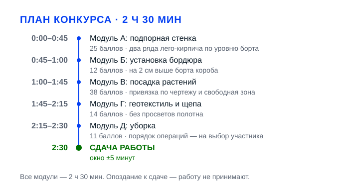
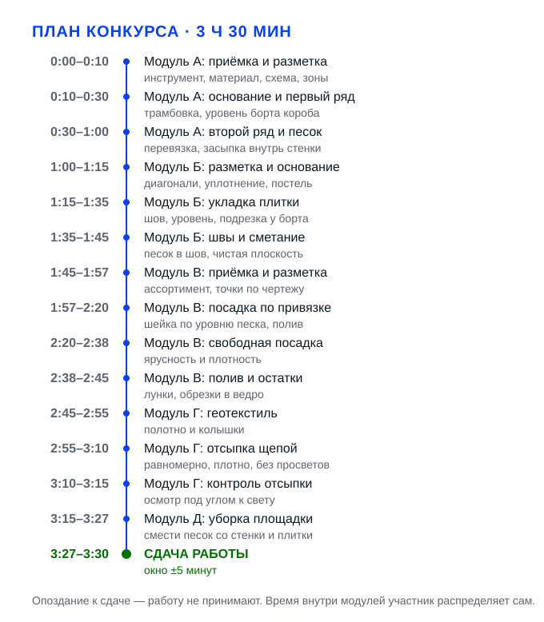
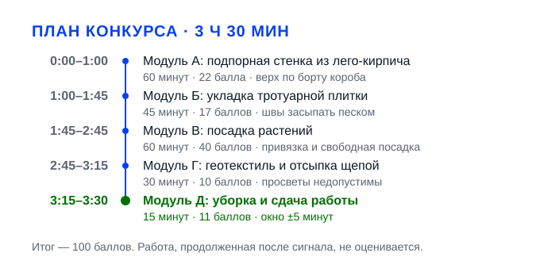

Работник зеленого хозяйства (Р,О)
Задания ниже — официальные файлы «Абилимпикс» (источник: abilympics-russia.ru), разложенные по категориям. Решения написаны по тексту задания, регламенту и критериям оценки; в них указано, что именно проверяет эксперт.
Школьник
14–16 лет, базовый уровень заданияВыдержка из официального конкурсного задания: страницы, относящиеся к категории «Школьник» (стр. 5–7 источника).
Пошаговое решение
Задание для школьников — устроить фрагмент сада в коробе один на один метр с бортом высотой тридцать сантиметров и сдать его готовым к оцениванию. Пять модулей на сто баллов и два часа тридцать минут: подпорная стенка из лего-кирпича в два ряда (45 минут, 25 баллов), бордюр на два сантиметра выше борта короба (15 минут, 12 баллов), посадка растений по привязке и в зоне свободной посадки (45 минут, 38 баллов), геотекстиль с отсыпкой щепой (30 минут, 14 баллов) и уборка с подготовкой сада к оцениванию (15 минут, 11 баллов). Внутри модуля время участник распределяет сам, но порядок жёсткий: сначала основание и разметка, потом конструкции, потом растения и только в конце отсыпка и уборка. Дороже всего стоит посадка — почти сорок процентов оценки, — и она же зависит от точности разметки первых сорока минут. Ниже разобрано каждое действие с размерами, инструментом и типичными потерями баллов.

Задача 1. Устроить подпорную стенку из лего-кирпичаМодуль А · 25 баллов · 45 минут
Самый дорогой по времени и второй по баллам модуль: из короба с песком нужно сделать миниатюрный сад с подпорной стенкой высотой в борт короба, то есть 30 см. Работа идёт в жёсткой последовательности — сначала инструмент и материал, потом ровное и утрамбованное основание, потом два ряда лего-кирпича по уровню, и только затем песок внутрь стенки. Если нарушить порядок, каждый следующий этап придётся переделывать, а времени на переделку в сорока пяти минутах нет: всё, что вы заложите здесь криво, будет видно на оценивании и потянет за собой посадку растений.
Действие 1.1. Принять рабочее место, надеть СИЗ и проверить инструмент
Шаг 1.1.1
Надеваем полный комплект спецодежды: комбинезон или куртку с брюками, головной убор, садовые перчатки, спецобувь с усиленным подноском и нитриловой подошвой, защитные очки и строительные наколенники. Наколенники застёгиваем так, чтобы они не сползали при наклоне: работать придётся на корточках почти весь модуль, и без них через двадцать минут начнут дрожать ноги. Очки надеваем сразу, а не «когда полетит песок» — снимать и надевать их в перчатках неудобно, а именно в момент подсыпки сухой песок и летит в глаза.
Спецодежда и средства защиты — не формальность: критерии модуля А включают соблюдение охраны труда, а эксперт по технике безопасности фиксирует нарушения в течение всего конкурса. Отсутствие очков или работа без перчаток при укладке бетонных блоков считается нарушением и снимает баллы сразу в двух местах — за охрану труда и за культуру производства. Кроме того, испачканные песком руки потом тащат грязь на растения, а это уже баллы модуля В.
Проверьте себя по шести позициям перечня: комбинезон, перчатки, спецобувь, очки, респиратор с клапаном и наколенники — всё надето, всё сухое и застёгнуто. Рукава должны быть не ниже локтя, перчатки — по размеру, без дыр на пальцах, потому что в мокром песке размокшая перчатка рвётся за десять минут.
Самая частая ошибка — оставить наколенники и очки в сумке «на потом» и проработать модуль в кроссовках: на бетонном полу площадки это скользко, а падение с блоком в руках разбивает и блок, и работу. Вторая ошибка — работать в одноразовых перчатках, которые рвутся о рифлёную кромку кирпича.
Эксперт по охране труда смотрит на комплект до старта, подписывая ведомость инструктажа, и потом выборочно в течение модуля: снятые очки или перчатки в кармане он замечает быстрее, чем вы думаете.
Шаг 1.1.2
Раскладываем инструмент на площадке рядом с коробом в том порядке, в котором будем им пользоваться: строительный уровень длиной 60–80 см, рулетка на 3 метра, металлический угольник, трамбовка, штыковая лопатка и совок, садовый секатор, лейка с водой, кисть-смётка, ведро. Уровень проверяем на исправность самым быстрым способом: кладём его на ровную поверхность борта короба, запоминаем положение пузырька, разворачиваем на 180 градусов и смотрим снова. Пузырёк должен отклониться в ту же сторону на столько же; если картинка изменилась, уровень врёт и им нельзя выставлять кирпич.
Проверка инструмента прямо прописана в последовательности выполнения задания, и это не ритуал: кривой уровень даёт завал стенки, который вы обнаружите только на финальном контроле, когда разбирать кладку уже нет времени. Трамбовка с треснувшей ручкой подводит в момент уплотнения — она либо срывается с руки, либо бьёт вполсилы, и песок остаётся рыхлым, а на рыхлом песке стенка просаживается за час.
Инструмент разложен, ничего не мешает шагу, у каждого предмета своё место. Уровень проверен разворотом, рулетка не имеет перекрученной ленты, трамбовка сидит на ручке плотно, секатор режет лист бумаги без усилия. Если что-то не работает — меняем у организаторов сразу, до начала работы.
Типичная ошибка — взять первый попавшийся уровень и поверить ему на слово: на площадке инструмент ходит из рук в руки, и после падения уровень сбивается. Вторая — начать работу с неисправной трамбовкой «пока так», а потом обнаружить, что песок не уплотнился и первый ряд кирпича гуляет.
Эксперт проходит вдоль рабочих мест на старте и отмечает, проверен ли инструмент: участник, который сразу начинает кладку, обычно теряет балл за организацию.
Шаг 1.1.3
Подсчитываем и раскладываем материал по зонам складирования. Лего-кирпич считаем по схеме и складываем штабелем у длинной стороны короба, рифлёной стороной вверх, чтобы не сбивать кромку; песок держим в куче на подстилке рядом, чтобы не тащить его через весь короб; бордюр, колышки-фиксаторы, рулон геотекстиля и мешки со щепой ставим отдельно, у места, где они понадобятся. Растения в контейнерах выставляем в тени, поливаем и не разбираем до модуля В — распакованное растение сохнет за полчаса.
Подготовка и подсчёт материала — первая строка задания, и она экономит время двух модулей: недосчитанный кирпич обнаруживается в середине кладки, когда идти за ним уже некогда, а растения, выставленные на солнце с утра, к посадке теряют тургор и выглядят вялыми на фото оценивания. Плюс раскладка по зонам даёт свободный проход, а это отдельный пункт по охране труда.
Сверьте с чертежом количество блоков на два ряда и прибавьте два-три в запас на скол кромки — запас не выбрасывают, он идёт в углы. Песок должен быть сухим и сыпучим: сжатый в кулаке комок, который рассыпается от прикосновения, годится, а липкий и мокрый — нет. Растения осмотрены: контейнеры целые, земляной ком влажный.
Ошибка — сразу распаковать все растения и разложить их по коробу: за сорок минут кладки корни пересыхают, и в модуле В участник сажает уже полумёртвую рассаду. Вторая — ссыпать весь песок в одну кучу в центре короба, а потом выгребать его из-под стенки.
Эксперт смотрит на зону складирования: аккуратные штабели и подписанные мешки читаются как понимание технологии, куча вперемешку — как спешка. Он подходит в первые пять минут, пока материал ещё не разобран по ходу работы.
Действие 1.2. Выровнять и уплотнить основание, разметить зоны
Шаг 1.2.1
Выравниваем поверхность песка в коробе до горизонтали, работая лопаткой и ладонью: срезаем бугры, досыпаем в ямки, разбиваем комья. Двигаемся от дальнего борта к ближнему, чтобы не наступать на выровненное. Затем проливаем поверхность водой из лейки тонкой струёй — примерно литр-полтора на квадратный метр, чтобы песок дал осадку и пыль не летела в лицо при трамбовке. Проливать надо именно тонкой струёй: сильная размывает выровненную поверхность и делает промоины.
Выравнивание прописано в задании как отдельная операция, и вода здесь работает на уплотнение: сухой песок при трамбовке разлетается и уплотняется неравномерно, а слегка влажный садится плотно и держит форму. Ровное основание — условие того, что первый ряд кирпича ляжет без зазоров: на бугре блок качается, а в яме проваливается и даёт щель, через которую потом уходит песок из-за стенки.
Проверьте уровнем в двух направлениях, вдоль и поперёк короба: пузырёк в пределах риски, перепад по поверхности не больше сантиметра на метр. Ладонь, положенная плашмя, не проваливается и не встречает бугров, вода ушла за минуту-две без лужиц.
Ошибка — залить песок «чтобы не пылило» из ведра с плеча: получаются ямы и ручьи, и выравнивать приходится заново, уже впустую потратив минуты. Вторая — выравнивать на глаз, не проверяя уровнем, потому что «песок же, он сам сядет».
Эксперт подходит к коробу во время подготовки основания и смотрит, пользуется ли участник уровнем или работает на глазок: это первый индикатор квалификации.
Шаг 1.2.2
Уплотняем песок трамбовкой короткими ударами с высоты 15–20 сантиметров, двигаясь полосами с перекрытием в половину пятки трамбовки, как при укладке тротуарной плитки. Проходим поверхность в двух направлениях — вдоль и поперёк, — затем проверяем плотность: наступаем на песок и смотрим, остаётся ли чёткий след. Плотный песок почти не принимает след, рыхлый проваливается под весом.
Уплотнение определяет, простоит ли стенка весь конкурс и не поплывёт ли она на оценивании. Трамбовка и выравнивание поверхности с её помощью прямо названы в задании, а разница видна в цифрах: рыхлый песок даёт осадку до двух сантиметров под собственным весом кладки, и тогда верхний ряд уходит ниже уровня борта — а уровень борта короба в этом модуле и есть отметка, от которой всё считается.
След от подошвы не продавливается глубже пяти миллиметров, трамбовка отскакивает с глухим звуком, а не тонет. Протяните рукой по поверхности: она должна быть плотной и ровной, без волн от пятки трамбовки. Волны разравниваем тыльной стороной лопатки и проходим ещё раз.
Частая ошибка — бить трамбовкой в одну точку сильно и долго: получается вмятина, а рядом песок остаётся рыхлым. Вторая — уплотнять только по центру, там, где стоите, оставляя нетронутой полосу вдоль бортов, а именно на ней будет стоять стенка.
Эксперт проверяет плотность тем же способом, что и вы: прижимает ладонь или пробует песок пальцем у борта. Рыхлое основание он видит сразу по первому ряду.
Шаг 1.2.3
Размечаем территорию короба на зоны по схеме задания: отмеряем рулеткой от внутренних углов короба и отбиваем линии тонким шнуром или проводим их по линейке сухим мелом. Первым делом проверяем сам короб угольником: углы должны быть прямыми, потому что все привязки на чертеже даны от углов, и если угол не 90 градусов, ошибка разметки потянет за собой смещение стенки, бордюра и точек посадки. Все размеры записываем на схеме карандашом, чтобы не держать их в голове.
Разметка зон — это то, за что дают баллы по критерию соответствия чертежу: стенка, бордюр и растения оцениваются по привязке к плану, а не «на красиво». Ошибка в разметке на два сантиметра не видна глазом, но при промере рулеткой эксперт её фиксирует и снимает балл за каждую позицию отдельно. Кроме того, размеченные зоны не дают вам самим путаться, где заканчивается песок под посадку, а где начинается отсыпка щепой.
Проверьте диагонали: у прямоугольного контура они равны, расхождение больше сантиметра говорит о перекосе. Все линии читаются на песке, размеры перенесены на схему, а точки привязки отмечены колышками так, чтобы их не затоптать.
Ошибка — размечать «от себя», а не от углов короба: линии выходят ровными, но вся композиция смещена относительно плана. Вторая — проводить линии мокрым песком, на котором борозда заплывает через минуту.
Эксперт приходит с рулеткой и промеряет привязки от бортов короба: разметка от углов и понятные метки на схеме экономят вам баллы на этом промере. Если метки стёрлись, он попросит показать, где проходила линия, и стёртая разметка обернётся против вас.
Шаг 1.2.4
Отдельно выносим разметку подпорной стенки: по схеме намечаем линию её подошвы, ставя колышки через 40–50 сантиметров и натягивая между ними шнур на высоте одного-двух сантиметров над песком. Шнур натягиваем туго, без провиса, и проверяем угольником, что линия идёт под нужным углом к борту короба. По этой линии будем ставить первый ряд, и она должна совпадать с проектным положением стенки, а не проходить «примерно там».
Стенка — главный элемент модуля А на 25 баллов, и её положение задаёт геометрию всего сада: от неё отсчитываются зоны посадки и отсыпки. Шнур даёт то, чего не даёт черта мелом, — вертикальную плоскость, по которой видно, не увели ли вы блок в сторону на пять миллиметров. Пока стенка не поднята, линию можно поправить за десять секунд, после укладки первого ряда это уже переделка.
Шнур прямой, не провисает, колышки не качаются, угольник показывает прямой угол к борту. Отойдите на два шага и посмотрите вдоль линии: она должна читаться как одна прямая, а не как ломаная. Колышки сидят в песке на 10–15 сантиметров и не шатаются от касания рукой.
Ошибка — натянуть шнур с провисом или привязать его к колышку, воткнутому в рыхлый песок: к третьему блоку линия уедет. Вторая — ставить колышки прямо в створ будущей кладки, так, что они мешают укладывать блок.
Эксперт смотрит на наличие натянутой линии: работа по шнуру — признак того, что участник понимает, зачем нужна разметка, а не просто «видел, как делают».
Действие 1.3. Уложить лего-кирпич в два ряда по уровню
Шаг 1.3.1
Кладём первый ряд по натянутому шнуру от угла, начиная с самого дальнего от себя угла, чтобы не тянуться через уже уложенное. Блок ставим на песок всей плоскостью и слегка прижимаем ладонями, а не бросаем: от броска кромка скалывается, а под блоком остаётся воздушная подушка. Каждый блок проверяем уровнем по ходу, подсыпая или снимая песок совком под ним, пока пузырёк не встанет в риску. Первый ряд задаёт всю стенку, поэтому на него уходит примерно половина времени модуля.
Высота первого ряда и его горизонтальность — это те два параметра, по которым оценивают устройство подпорной стенки. Блоки лего-кирпича работают как конструктор: выступы верхней грани входят в пазы нижней, и если первый ряд стоит с перекосом, второй не сядет на место без перекоса — соединение просто не защёлкнется. Отсюда правило: пока ряд не выведен по уровню, второй не начинаем, даже если очень хочется успеть.
Приложите уровень к верхней грани в двух направлениях на каждом блоке: пузырёк в риске, зазор между уровнем и блоком не больше двух миллиметров, блок не качается под ладонью. Проверьте высоту первого ряда рулеткой от дна короба — она должна быть ровной по всей длине.
Класть блоки «на глаз», а потом выравнивать весь ряд сразу: подбить песок под уже защёлкнутые блоки невозможно, придётся разбирать. Вторая ошибка — экономить песок и ставить блок на тонкий слой: он продавится под весом второго ряда, и стенка просядет на сантиметр.
Эксперт подходит в момент укладки первого ряда и смотрит, пользуется ли участник уровнем на каждом блоке или только в конце: разница видна по лицу работы.
Шаг 1.3.2
Второй ряд выкладываем со смещением относительно первого примерно на половину блока — это перевязка, она не даёт стенке сложиться по шву. Блоки ставим так, чтобы выступы нижней грани попали в пазы верхней, и досаживаем ладонью до щелчка или до плотного соприкосновения без зазора. Крайние блоки подрезаем по месту, если по схеме ряд выходит короче: подрезаем аккуратно, чтобы скол не портил лицевую грань. Углы выводим особенно тщательно — по ним эксперт проверяет прямоугольность.
Раскладка лего-кирпича в два ряда по уровню — прямое требование задания, и перевязка здесь не украшение, а прочность: два ряда со швами друг над другом держатся только за счёт трения и расходятся при первой же нагрузке песком. Зазор между блоками означает, что песок из-за стенки будет высыпаться в отсыпку, и на оценивании это видно как грязная щепа и просевшая стенка.
Проверьте рукой: блоки не двигаются, щелей между ними нет, шов первого ряда перекрыт блоком второго. Уровень, приложенный к верхнему ряду по всей длине, показывает одинаковую высоту: два блока по 15 сантиметров дают ровно 30 сантиметров — уровень борта короба.
Ошибка — выложить второй ряд шов в шов, «так ровнее смотрится»: стенка теряет устойчивость, а эксперт видит нарушение перевязки. Вторая — недожать блоки: между рядами остаётся люфт, и верхний ряд играет под пальцем.
Эксперт проверяет перевязку и плотность прилегания, проводя пальцем по шву: выступающий раствор или щель одинаково заметны. Отдельно он смотрит на углы: именно там перевязку нарушают чаще всего.
Шаг 1.3.3
Выводим финальный контроль кладки: прикладываем уровень к верхнему ряду вдоль стенки, потом поперёк, затем проверяем вертикальность углов, приставляя уровень к торцу. Рулеткой промеряем высоту стенки от дна короба в трёх точках — у двух углов и в середине, а также расстояние от стенки до бортов короба по схеме. Найденное отклонение исправляем сразу: блок приподнимаем, подсыпаем или снимаем песок, ставим обратно и снова проверяем уровень.
Именно на этом шаге решается, получите ли вы баллы за геометрию: критерий измеримый, эксперт приходит с рулеткой и уровнем и сравнивает фактические размеры с проектными. Высота стенки по уровню борта короба — это 30 сантиметров, и отклонение больше сантиметра читается как ошибка укладки. Проверка сейчас стоит двух минут, а разбор кладки после засыпки песка — двадцати.
Уровень показывает ноль в обоих направлениях, высота в трёх точках одинаковая, углы прямые, стенка не качается при нажатии ладонью. Промерьте ещё диагонали контура стенки — у прямоугольника они равны.
Ошибка — проверить только вдоль и пропустить поперечное направление: стенка ровная по фасаду и завалена в сторону посадок. Вторая — «поправить потом», после того как за стенку уже засыпан песок: тогда каждый блок придётся вынимать из-под нагрузки.
Эксперт делает промеры после того, как участник объявил модуль законченным, и заставшие врасплох отклонения уже нельзя исправить. Найденное отклонение он отмечает в ведомости сразу и времени на переделку не даёт.
Действие 1.4. Засыпать песок внутрь подпорной стенки
Шаг 1.4.1
Засыпаем песок за стенку слоями по 10–15 сантиметров, подавая его совком или лопаткой, а не вываливая из ведра разом. Слой разравниваем рукой в перчатке и слегка прижимаем, двигаясь от углов к середине. Песок должен лечь вплотную к тыльной стороне блоков, без пустот: пустота у стенки — это место, куда песок уйдёт при поливе, и стенка получит боковую нагрузку в самом слабом месте.
Засыпка песка внутрь стенки прямо названа в задании, и её задача — создать грунт для будущих посадок и одновременно распереть стенку изнутри. Слоями засыпают потому, что сразу вываленный песок образует конус и уплотняется неравномерно: у стенки он остаётся рыхлым, а в центре плотным, и после полива поверхность просядет воронкой. Слой в 10–15 сантиметров успевает уплотниться и остаётся однородным по всей площади.
Поверхность слоя ровная, без воронок и бугров, песок у тыльной стороны блоков лежит плотно. Постучите по блоку снаружи: если звук глухой и блок не отзывается смещением, засыпка держит. Промерьте рулеткой толщину слоя — он должен быть одинаковым по всей площади.
Ошибка — засыпать песок одной кучей и разровнять потом: у стенки остаются пустоты, и после полива грунт просаживается на два-три сантиметра, обнажая шов кладки. Вторая — сыпать песок через верх стенки, пачкая лицевую грань: потом её придётся чистить кистью, а это время модуля Д.
Эксперт осматривает тыльную сторону стенки на просвет: пустоты между блоками и песком видны как тёмные щели. Ещё он смотрит, не попал ли песок на лицевую грань: разводы на бетоне он считает грязью работы.
Шаг 1.4.2
Проливаем засыпанный песок водой из лейки порциями, давая воде впитаться, а не выливая весь объём сразу. Проливаем до состояния, когда вода перестаёт уходить мгновенно и на поверхности появляется ровная влажная кромка без луж. После пролива проходимся по поверхности ладонью или маленькой трамбовкой: осевший песок уплотняется, а образовавшиеся воронки досыпаем и снова проливаем.
Пролив даёт осадку, которая всё равно случилась бы — но случилась бы уже на оценивании, когда исправлять нечего. Полив — это и требование агротехники: в сухой песок растение не сажают, потому что сухой грунт вытягивает влагу из корневого кома и рассада гибнет в первые часы. Кроме того, влажный песок держит форму лунки, и посадочные места в модуле В не осыпаются.
Песок влажный на всю глубину слоя, воронки засыпаны, поверхность ровная, луж нет. Проверьте пальцем на глубине двух-трёх сантиметров: песок должен быть прохладным и влажным. Если сверху мокро, а внутри сухо — проливайте ещё, порциями.
Ошибка — вылить сразу пять литров: вода размывает стенку, выносит песок через швы и оставляет на поверхности промоины. Вторая — не полить вовсе, считая, что «песок и так влажный»: к посадке он пересыхает, а посадочные места осыпаются.
Эксперт проверяет влажность грунта перед посадкой растений — это связано с качеством модуля В, где посадка в сухой песок сразу видна по растениям. Сухой грунт под посадку он отмечает отдельным пунктом.
Шаг 1.4.3
Выводим отметку песка на проектную высоту: по схеме грунт должен стоять ниже верхнего края стенки на 3–5 сантиметров, чтобы при поливе вода не переливалась через борт и чтобы щепа отсыпки не сыпалась за стенку. Отмеряем рулеткой от верха кладки в нескольких точках и срезаем лишнее лопаткой или досыпаем в заниженных местах. Разравниваем поверхность, слегка прихлопывая ладонью, и убираем случайно рассыпанный песок с лицевой грани стенки сухой кистью.
Отметка грунта — это то, что читается на фотографии оценивания и на промере рулеткой: пересыпанный выше стенки песок выглядит как небрежность и мешает отсыпке, недосыпанный на десять сантиметров даёт провал у стенки, куда будет проваливаться щепа. Кроме того, ровная поверхность грунта нужна для разметки точек посадки в следующем модуле: по неровной поверхности привязки просто не отмерить.
Уровень, поставленный на грунт, показывает горизонталь; от верхней грани стенки до песка везде одинаковые 3–5 сантиметров. Поверхность плотная, след от пальца остаётся глубиной не больше сантиметра, лицевая грань стенки чистая.
Ошибка — досыпать песок «с горкой» выше стенки: при поливе он поплывёт на отсыпку и испортит вид, а вода пойдёт через борт. Вторая — оставить у стенки канаву, потому что песок ушёл после пролива и его не досыпали.
Эксперт оценивает этот шаг вместе с кладкой: смотрит на линию верха стенки и на то, как грунт соотносится с бортом короба. Отметку он проверяет рулеткой от верха кладки, а не на глаз, и записывает отклонение в сантиметрах.
Задача 2. Установить бордюр по схеме и закрепить егоМодуль Б · 12 баллов · 15 минут
Короткий, но обидный модуль: пятнадцать минут на двенадцать баллов, и почти все эти баллы теряются не на работе, а на спешке. Бордюр отбивает границу между посадками и отсыпкой, и к нему предъявляют три измеримых требования: линия по схеме, высота ровно на два сантиметра выше борта короба и фиксация колышками, чтобы за час оставшейся работы он не сдвинулся от случайного касания. Порядок жёсткий: сначала линия и основание, потом укладка, и только в конце выставление высоты и закрепление.
Действие 2.1. Разметить линию бордюра и подготовить основание
Шаг 2.1.1
Отмеряем положение бордюра по чертежу от внутренних углов короба: рулеткой переносим два размера — расстояние от ближнего борта и от бокового, — и ставим по метке в двух точках. Между метками натягиваем шнур на высоте одного сантиметра над песком: это и есть линия установки. Линию отбиваем так, чтобы бордюр встал по внешней стороне шнура, а не по внутренней, иначе при привязке к плану он сместится на собственную толщину, а это уже два-три сантиметра ошибки.
Бордюр — граница двух зон, и в критериях модуля Б прямо записано, что он должен стоять согласно плану. Смещение на толщину элемента — самая частая причина минуса именно здесь: участник мерит «до края», ставит бордюр на линию и получает сдвиг всей границы. Поскольку от этой границы потом отсчитывается отсыпка, ошибка тянется и в модуль Г, где щепа ложится не туда, куда просит схема.
Метки стоят в двух точках, расстояние между ними совпадает с длиной бордюра по схеме, шнур не провисает. Проверьте рулеткой расстояние от обоих углов короба до линии: расхождение больше сантиметра говорит о перекосе шнура.
Ошибка — отмерить от одного угла и натянуть шнур «на глаз» вдоль второго борта: линия выходит косой, и бордюр укладывается клином. Вторая — сразу вбить колышки в линию, не сверившись со схемой: разметку придётся переносить вместе с колышками.
Эксперт на этом шаге не мешает, но при промере он идёт именно от бортов короба и смотрит, на каком расстоянии стоит бордюр, а не насколько ровно он выглядит.
Шаг 2.1.2
Проверяем линию угольником относительно борта короба и рулеткой по диагоналям до двух дальних углов: у правильной разметки диагонали равны. Затем смотрим вдоль шнура с противоположного борта — линия должна читаться как одна прямая. Если борт короба сам стоит с отклонением, ориентируемся на чертёж: привязка важнее, чем идеальная параллельность борту, и в этом случае лучше выдержать размер по схеме, а не «сделать красиво вдоль борта».
Проверка прямоугольности — это то, что отличает разметку от намётки. Угольник и рулетка прямо названы в задании как обязательный инструмент при устройстве элементов сада, и на оценивании эксперт пользуется теми же приборами. Перекошенная линия бордюра видна на фотографии сверху: она упирается в стенку под углом, и это сразу читается как ошибка композиции.
Диагонали равны с точностью до сантиметра, угольник даёт прямой угол, линия прямая на всём протяжении. Отойдите и посмотрите на короб сверху: бордюр должен делить площадку так, как это нарисовано на схеме.
Ошибка — проверять только одну диагональ: одна пара равных диагоналей ничего не доказывает, проверять надо обе. Вторая — «поправить на глазок» линию, которая уже натянута, вместо того чтобы переставить колышек.
Эксперт приходит с угольником и рулеткой и проверяет прямоугольность разметки, если видит, что бордюр идёт не параллельно стенке. Промер он делает от бортов короба, а не от стенки.
Шаг 2.1.3
Готовим основание под бордюр: по линии снимаем совком сантиметра полтора-два песка, разравниваем дно получившейся борозды и уплотняем её ладонью или торцом трамбовки. Если по схеме бордюр должен стоять выше уровня грунта, песок, наоборот, подсыпаем до нужной отметки. Борозда должна быть ровной по глубине, потому что на неровном дне бордюр либо качается, либо ложится с завалом, а выравнивать его потом колышками придётся уже с усилием.
Основание — та часть работы, которая не видна, но определяет всё остальное. Бордюр, лежащий на рыхлом или бугристым песке, при первом же поливе в модуле В просядет и изменит высоту, а высота здесь — измеримый критерий с точным допуском в два сантиметра над бортом короба. Плотное и ровное основание даёт возможность выставить высоту один раз и больше к ней не возвращаться, а это в пятнадцатиминутном модуле решающая экономия.
Дно борозды плотное, след от пальца почти не остаётся, глубина одинаковая по всей длине. Приложите уровень вдоль борозды: дно должно быть горизонтальным или иметь тот уклон, который задан схемой, без волн.
Ошибка — положить бордюр прямо на необработанный песок: он ложится неровно, и выставить высоту не получается. Вторая — выкопать борозду глубже нужного и потом подсыпать в неё песок, не уплотняя. Вторая — выкопать борозду глубже нужного и потом подсыпать в неё песок, не уплотняя слой под элементом.
Эксперт не проверяет основание отдельно, но просевший бордюр в конце модуля он фиксирует как ошибку установки — с потерей баллов за высоту. Просевший бордюр он фиксирует как ошибку установки, а не как случайность.
Шаг 2.1.4
Укладываем бордюр в борозду по шнуру, начиная от угла, и выставляем элементы вплотную друг к другу с зазором не больше двух миллиметров: щели в палец выглядят как небрежность и пропускают песок. Каждый элемент прижимаем ладонью и проверяем, не качается ли он. Если бордюр составной, стыки выравниваем по верхней грани так, чтобы не было ступеньки: ступенька в пять миллиметров уже заметна и на фото, и на ощупь.
Укладка по шнуру — это то, что даёт прямую линию, а прямая линия бордюра оценивается отдельным пунктом. Зазоры в два миллиметра оставляют именно потому, что бордюр должен дышать: при поливе и перепаде температуры плотно сжатые элементы выдавливает вверх, и линия ломается. Ступеньки на стыках недопустимы потому, что по верхней грани бордюра судят о качестве всей установки.
Линия бордюра читается как прямая, стыки ровные, зазоры одинаковые и не больше двух миллиметров, элементы не качаются. Проведите ладонью по верхней грани: она должна быть гладкой, без ступенек и задиров.
Ошибка — укладывать бордюр с большими зазорами «чтобы вода уходила»: щепа и песок уходят вместе с водой, а на оценивании это грязь. Вторая — оставить ступеньку на стыке, потому что элемент лёг на бугор песка.
Эксперт проводит рукой по верхней грани бордюра и смотрит на стыки: именно там видны и ступеньки, и неравномерные зазоры. Он смотрит на стыки при боковом свете: ступенька даёт тень, и её видно издалека.
Действие 2.2. Выставить высоту и закрепить бордюр колышками
Шаг 2.2.1
Выставляем высоту: верх бордюра должен быть ровно на два сантиметра выше борта короба. Отмеряем рулеткой от верхней кромки борта до верха бордюра в трёх точках — у двух концов и в середине, — и добиваемся одного и того же значения. Регулируем подсыпкой или снятием песка под элементом, а не нажимом сверху: нажатием высота сбивается обратно при первом касании. Два сантиметра — это чуть больше толщины пальца, поэтому проверять удобно ещё и по шаблону из обрезка бруска нужной толщины, если он есть под рукой.
Высота бордюра — единственный в этом модуле параметр с точной цифрой, и именно по нему проще всего потерять баллы: на два сантиметра выше борта короба значит именно два, а не «примерно». Такой запас нужен технологически: бордюр удерживает отсыпку и грунт, а если он вровень с бортом, при поливе вода и щепа уходят через край, и граница между зонами размывается уже к концу конкурса.
Рулетка в трёх точках показывает одинаковые два сантиметра, уровень, положенный на борт короба и на бордюр, не показывает перепада, верхняя грань горизонтальна. Проверьте от обоих концов: если в одном месте три сантиметра, а в другом один, линия идёт волной.
Ошибка — выставить высоту по одному концу и не проверить второй: бордюр получается с уклоном, и на другом конце разница доходит до сантиметра. Вторая — «подбить» бордюр ладонью, чтобы стал выше: он садится в песок и через десять минут возвращается на прежнюю отметку.
Эксперт приходит с рулеткой и промеряет высоту над бортом короба в двух-трёх точках: отклонение больше сантиметра он считает ошибкой установки. Промер он делает от верхней кромки борта короба.
Шаг 2.2.2
Закрепляем бордюр колышками-фиксаторами: вбиваем их с внутренней стороны бордюра через 30–40 сантиметров, заглубляя на 10–12 сантиметров, и прижимаем бордюр к колышку так, чтобы он держал элемент от сдвига внутрь. Колышки забиваем не до уровня верхней грани, а чуть ниже, чтобы они не торчали и не мешали отсыпке. Вбиваем аккуратно, через деревянную подкладку или рукояткой инструмента, а не камнем: от удара по самому колышку он гнётся и перестаёт держать.
Крепление колышками-фиксаторами прописано в задании как обязательная операция, и смысл её практический: после модуля Б предстоит посадка растений, отсыпка и уборка, то есть минимум шестьдесят минут работы руками в непосредственной близости от бордюра. Незакреплённый бордюр сдвигается от первого же касания лопатой, и тогда все промеры по высоте и линии приходится делать заново, а времени на это уже нет.
Колышки стоят плотно, не шатаются, бордюр не двигается при нажатии ладонью сбоку. Проверьте каждый элемент: попробуйте сдвинуть его вдоль линии — он должен стоять как вкопанный. Верх колышков не выступает над бордюром.
Ошибка — забить два колышка на всю длину бордюра: середина остаётся свободной и выдавливается при отсыпке. Вторая — забить колышек вплотную к лицевой грани, сколов её край: скол виден и на фото, и на осмотре.
Эксперт проверяет, закреплён ли бордюр физически: он нажимает на элемент сбоку и смотрит, остаётся ли он на месте. Незакреплённый бордюр — минус за установку и за технологию.
Шаг 2.2.3
Финальный контроль модуля: ещё раз проходим рулеткой по высоте в трёх точках, уровнем — по верхней грани, глазами вдоль линии — на прямую. Проверяем, что бордюр не перекрывает зону посадки, не наезжает на стенку и не выходит за границы короба. Убираем с бордюра и с песка вокруг рассыпанный песок и крошку, поправляем случайно выдавленный у стыка песок кистью. После этого модуль считается закрытым, и возвращаться к нему нельзя: дальше идут растения, и любое движение рядом с бордюром теперь может только испортить.
Финальный проход стоит минуты, а сохраняет баллы за линию, высоту и крепление одновременно. Кроме того, оценивание идёт по факту, а не по процессу: если вы выставили высоту, а потом случайно придавили бордюр лопаткой при подготовке лунок, эксперт увидит именно результат. Чистая поверхность бордюра важна и сама по себе — грязь на нём относят к культуре работы и снимают баллы в модуле Д.
Высота в трёх точках одинаковая, линия прямая, крепление держит, поверхность чистая. Пройдите вдоль бордюра на корточках и посмотрите на просвет между ним и песком: щелей быть не должно. Верхняя грань должна быть сухой и чистой.
Ошибка — объявить модуль закрытым, не проверив высоту после забивки колышков: удары по колышку сажают бордюр на сантиметр. Вторая — оставить на верхней грани следы пальцев и песок, которые потом никто не счистит.
Эксперт обходит короб в момент перехода к следующему модулю и фиксирует состояние бордюра: высоту, линию и чистоту он отмечает одним проходом. Он делает это до того, как вы начнёте посадку растений.
Задача 3. Высадить растения по привязке и в зоне свободной посадкиМодуль В · 38 баллов · 45 минут
Самый дорогой модуль конкурса: 38 баллов из 100, почти сорок процентов оценки, и всего сорок пять минут. Здесь проверяют сразу три вещи — совпадение посадок с чертежом, агротехнику (глубина, обжимка, полив, удаление повреждённых частей) и общее впечатление от композиции. Растения делятся на две группы: те, что сажают по привязке, то есть по точным размерам от углов короба, и те, что размещают свободно в отведённой зоне. Ошибка новичка — начать с красивых кустов и бросить на разметку пять минут: без точек привязки весь модуль теряет баллы, сколько бы сил ни ушло на посадку.
Действие 3.1. Разметить точки посадки по чертежу
Шаг 3.1.1
Переносим на грунт все точки привязки: рулеткой отмеряем от двух ближайших бортов короба или от подпорной стенки, если по схеме привязка дана к ней, и ставим в каждой точке колышек высотой 10–15 сантиметров. Порядок такой: сначала отмеряем вдоль одной стороны, потом вдоль другой, и на пересечении линий ставим метку — так точка получается точной, а не «примерно там». Каждую точку подписываем на своей схеме карандашом, чтобы потом не искать, где какое растение.
Точки посадки по чертежу — это и есть критерий «посадка по привязке», самая весомая часть модуля. Эксперт проверяет совпадение не по красоте, а промером рулеткой от тех же баз, что указаны в схеме, поэтому точка, поставленная на глаз, даёт отклонение в три-пять сантиметров, и это уже заметно. Кроме того, размеченные точки позволяют сажать без остановок на раздумья: в сорока пяти минутах на растение уходит в среднем минута-полторы.
Колышки стоят в размеченных точках, расстояния между соседними точками совпадают со схемой, симметричные точки находятся на равных расстояниях от осевой линии. Пройдите рулеткой по всем точкам ещё раз: это две минуты, которые экономят весь модуль.
Ошибка — ставить точки «по памяти», не сверяясь со схемой после каждого растения: к пятому кусту привязка уезжает. Вторая — отмерять от подпорной стенки там, где по чертежу привязка дана от борта короба: стенка сама может стоять с отклонением в сантиметр.
Эксперт приходит с рулеткой и промеряет две-три точки: именно на этом шаге видно, работал участник по схеме или сажал «как красиво». Точки, отмеченные колышками, он тоже сверяет со схемой.
Шаг 3.1.2
Отделяем зону свободной посадки от зоны привязки: проводим по грунту границу мелом или шнуром и оставляем внутри свободной зоны место под каждый вид растений с учётом их размера во взрослом состоянии. Заодно проверяем, что точки привязки не попали в зону отсыпки щепой — там посадок быть не должно, иначе геотекстиль в следующем модуле придётся резать под каждое растение. Все растения раскладываем по точкам в контейнерах, не вынимая: так видно композицию целиком до того, как что-то посажено.
Разделение зон — это то, что держит композицию: в модуле Г отсыпка закроет всё свободное пространство, и если посадки вылезут в зону отсыпки, придётся либо резать полотно, либо оставлять просветы, а просветы геотекстиля прямо названы недопустимыми. Раскладка растений в контейнерах по точкам даёт возможность увидеть рисунок заранее и поправить его за секунды, а не пересаживать уже вынутое растение.
Граница зон читается на грунте, все контейнеры стоят на своих точках, свободная зона не пересекается с зоной отсыпки. Посмотрите на короб сверху: должно быть видно, где плотная группа по чертежу, а где свободная часть.
Ошибка — начать посадку, не разложив растения: половина точек остаётся пустой, а лишние растения сажают куда попало. Вторая — поставить контейнеры в зону будущей отсыпки и потом сажать их на ходу. Вторая — поставить контейнеры в зону будущей отсыпки и потом сажать их на ходу, сдвигая полотно.
Эксперт смотрит на предварительную раскладку: она видна в момент, когда он обходит площадку, и по ней он понимает, есть ли у участника план. Раскладка в контейнерах видна ему сразу, как только он подходит к коробу.
Шаг 3.1.3
Готовим посадочные места: под каждую точку выкапываем совком или садовым черпаком лунку такого размера, чтобы корневой ком входил в неё свободно, с запасом два-три сантиметра по ширине и по глубине. Глубину проверяем по высоте контейнера: дно лунки должно быть на такой отметке, чтобы после посадки корневая шейка осталась на уровне грунта. Землю из лунки не выбрасываем, а складываем рядом горкой: она пойдёт на засыпку и на выравнивание.
Лунка по размеру кома — базовая агротехника, за которую в этом модуле дают больше всего баллов. В тесной лунке корни сминаются и идут вверх, растение не укореняется и к концу конкурса выглядит поникшим; в слишком глубокой корневая шейка оказывается под грунтом, и растение задыхается при поливе. Ровные лунки нужной глубины позволяют сажать быстро, без подгонки каждой посадки индивидуально.
Лунка шире кома на два-три сантиметра, дно ровное, стенки не осыпаются. Опустите контейнер в лунку: его верх должен быть вровень с поверхностью грунта или на сантиметр ниже. Все лунки готовы до начала посадки — это ускоряет работу вдвое.
Ошибка — копать лунку «на глаз» глубиной в полконтейнера: ком выступает над грунтом и засыхает. Вторая — выкопать все лунки заранее и дать им осыпаться, пока идёт подготовка растений: к посадке от лунок остаются блюдца.
Эксперт осматривает лунки в процессе: глубина относительно кома — первое, на что он смотрит при оценке агротехники посадки. Ему важно, чтобы дно лунки было плотным: на рыхлом дне ком садится неравномерно.
Действие 3.2. Подготовить растительный материал
Шаг 3.2.1
Принимаем и осматриваем растения до посадки: проверяем, что количество совпадает со схемой, что нет сломанных ветвей, пожелтевших листьев и признаков заболевания, что земляной ком влажный и не рассыпается. Каждое растение осматриваем с двух сторон — сверху и со стороны корней, если контейнер прозрачный. Найденные повреждения фиксируем у себя на схеме, чтобы потом не путать их с теми, что появятся в процессе работы.
Приёмка растительного материала — часть критерия «подбор и подготовка растений»: если растение пришло повреждённым, а участник этого не заметил, повреждение запишут ему. Кроме того, осмотр сразу задаёт план: где придётся снимать сухую ветку, где подрезать корень, а где растение готово к посадке как есть. Тридцать восемь баллов модуля набираются в том числе за то, что все растения высажены и обработаны, а не за количество привезённого материала.
Количество растений совпадает со схемой, комы влажные, повреждений нет или они отмечены. Проверьте каждое растение на наличие вредителей: мелкие точки на обратной стороне листа и паутинка — повод отложить его и сказать эксперту до посадки, а не после.
Ошибка — распаковать все растения сразу и поставить на солнце: за двадцать минут комы пересыхают, и вялые растения уже не восстановятся. Вторая — заметить повреждение и промолчать, а потом получить минус за его наличие.
Эксперт осматривает растения на площадке до старта и после посадки: он помнит, в каком виде они были выданы, и сравнивает. Если растение было повреждено при выдаче, а участник этого не сказал, повреждение запишут ему.
Шаг 3.2.2
Обрабатываем растения: секатором снимаем сухие и повреждённые листья, подрезаем сломанные ветви до здоровой почки, удаляем пожелтевшие нижние листья у рассады. Срез делаем под углом и на пять миллиметров выше почки, чтобы не оставить пенёк, который начнёт сохнуть. У древесно-кустарниковых убираем сухие веточки внутри кроны и подрезаем слишком длинные побеги, нарушающие форму, но не увлекаемся: задача — санитарная обработка, а не стрижка.
Удаление сухих и повреждённых участков прямо прописано в задании, и это один из самых заметных пунктов: одно пожелтевшее растение в композиции снижает оценку за качество посадки, даже если посажено идеально. Санитарная обрезка заодно уменьшает испарение с листьев, и растение легче переносит пересадку — а в конкурсе, где полив ограничен, это существенно.
Срез чистый, без размочаленных краёв, пеньков нет, повреждённых листьев на растении не осталось. Обрезанные части сразу складываем в ведро для растительных остатков, а не бросаем в короб: их потом придётся выбирать из щепы.
Ошибка — обрезать слишком много и превратить куст в пенёк: композиция теряет объём, а восстановить его нечем. Вторая — оставлять обрезанные листья лежать на грунте, где они липнут к мокрому песку. Вторая — оставлять обрезанные листья лежать на грунте, где они липнут к мокрому песку и портят отсыпку.
Эксперт смотрит на растения после посадки: чистые листья без повреждений и аккуратные срезы он отмечает как признак правильной подготовки. Он осматривает крону на просвет и ищет пеньки от срезов.
Шаг 3.2.3
Вынимаем растение из контейнера правильно: переворачиваем его на ладонь, придерживая ком пальцами, слегка сжимаем стенки контейнера и снимаем его движением вверх, а не выдёргиваем растение за стебель. Если ком не выходит, подрезаем контейнер ножом вдоль или разминаем стенки, но не тянем: за стебель растение выходит с оборванными корнями. Ком стараемся сохранить целым — это главное правило пересадки, потому что оголённые корни сохнут за минуты.
Целостность кома определяет приживаемость: растение с разрушенным комом теряет мелкие всасывающие корни и вянет к моменту оценивания, а это видно на глаз. Вынимать за стебель нельзя ещё и потому, что у рассады стебель ломается у корневой шейки, и растение просто выбрасывают. Сохранённый ком позволяет сажать без дополнительного полива в лунку, что экономит время.
Ком целый, не рассыпается, корни не обнажены, стебель не повреждён. Если ком всё-таки развалился, растение всё равно сажаем, но расправляем корни в лунке и поливаем сразу — такие растения в первую очередь.
Ошибка — выдернуть растение за макушку: ком остаётся в контейнере, а в руках стебель с обрывком корня. Вторая — размять ком руками «чтобы корни расправились»: у большинства контейнерных растений это лишнее, и мелкие корни при этом рвутся.
Эксперт наблюдает за выемкой растений: аккуратность этого движения он считает показателем того, работал ли участник с рассадой раньше. Он смотрит, не осталось ли кома в контейнере после выемки.
Шаг 3.2.4
Отдельно готовим древесно-кустарниковые растения: если корни образовали плотный войлок по стенкам кома, надрезаем его крест-накрест на глубину один-два сантиметра и слегка расправляем в стороны — такой надрез заставляет корни пойти в грунт, а не крутиться в прежнем объёме. Длинные корни, вылезшие из кома, укорачиваем секатором до размера лунки, срез делаем чистым, под углом. Перед посадкой опускаем ком в воду на минуту, если он подсох, и даём стечь лишней воде.
Корневой войлок — типичная проблема контейнерных саженцев: корни растут по кругу и после посадки не выходят в грунт, растение стоит живым до первого жаркого дня. Надрез и расправление решают эту проблему за десять секунд, а разница в состоянии растения видна уже к концу конкурса. Подрезка длинных корней до размера лунки нужна, чтобы их не пришлось загибать вверх, что для растения губительно.
Корневой ком надрезан, корни не загибаются при опускании в лунку, срезы чистые. Проверьте: ком входит в лунку свободно и не упирается в дно раньше времени. Ком влажный, но вода с него не течёт ручьём.
Ошибка — сажать саженец с плотным войлоком корней, не надрезав его: растение не приживается, и по внешнему виду к оцениванию это уже заметно. Вторая — замочить ком в ведре на десять минут: земляной ком размокает и разваливается в руках.
Эксперт проверяет подготовку корневой системы у древесно-кустарниковых особенно внимательно: это отдельный пункт агротехники в критериях. Надрез на коме он проверяет, приподнимая растение за основание.
Действие 3.3. Посадить растения по привязке
Шаг 3.3.1
Сажаем по размеченным точкам, начиная с самых крупных растений: ставим ком в лунку так, чтобы центр растения совпал с колышком, придерживаем одной рукой за основание стебля и засыпаем грунтом другой. Засыпаем послойно, по два-три сантиметра, слегка обжимая грунт вокруг кома пальцами, а не утрамбовывая ладонью сверху. Колышек вынимаем только после того, как растение зафиксировано: пока он в грунте, видно, попала ли посадка в точку.
Крупные растения идут первыми по простой причине: под них нужны самые большие лунки, и после них остаётся меньше всего пространства для манёвра. Если начать с рассады, придётся сажать кустарник между уже посаженными цветами и наступать на них. Совпадение центра растения с точкой привязки — это то, что проверяют рулеткой, поэтому колышек убирают последним, а не первым.
Растение стоит в точке, колышек убран, грунт вокруг кома плотный, растение не качается при лёгком потягивании за основание. Проверьте рулеткой расстояние от борта до стебля: оно должно совпадать со схемой с точностью до сантиметра.
Ошибка — сажать «рядом с точкой», потому что так удобнее руке: смещение в три-четыре сантиметра эксперт видит при промере. Вторая — засыпать и сразу утрамбовать грунт ладонью: ком сдавливается, корни рвутся.
Эксперт промеряет привязку посадок рулеткой от бортов короба и сравнивает со схемой: расхождение больше двух сантиметров он фиксирует как ошибку. Промер он делает от двух баз, как указано в схеме.
Шаг 3.3.2
Контролируем глубину: корневая шейка — место перехода стебля в корень — должна остаться на уровне поверхности грунта, не выше и не ниже. Проверяем пальцем после засыпки: если шейка ушла под грунт, растение аккуратно приподнимаем, подсыпая грунт снизу; если оказалась выше, досыпаем и слегка обжимаем. У растений с закрытой корневой системой ориентируемся по уровню, на котором ком стоял в контейнере: он виден по границе влажной и сухой земли.
Глубина посадки — главная агротехническая ошибка любителей и один из немногих параметров, который эксперт проверяет пальцем. Заглублённая корневая шейка приводит к выпреванию и загниванию, особенно при поливе, а у кустарников — к тому, что растение долго не трогается в рост. Приподнятая шейка даёт пересыхание корней и наклон растения после первого полива.
Корневая шейка видна на уровне грунта, растение стоит вертикально, грунт вокруг не осыпался в лунку. Проверьте на двух-трёх растениях разных видов: уровень должен быть одинаковым независимо от размера контейнера.
Ошибка — посадить «поглубже, чтобы не упало»: шейка уходит на два-три сантиметра, и к оцениванию растение выглядит угнетённым. Вторая — оставить ком выступающим над грунтом: после полива он обнажается и сохнет по краю.
Эксперт проверяет глубину у нескольких растений, прикапывая грунт пальцем у основания стебля: это стандартный приём оценки. Заглублённую шейку он считает грубой ошибкой посадки и снимает за неё больше, чем за неровный шаг.
Шаг 3.3.3
Заканчиваем посадку каждой точки: обжимаем грунт вокруг растения ладонями с двух сторон, формируем вокруг стебля поливочную лунку глубиной два-три сантиметра с валиком из грунта по краю и поливаем из лейки без рассекателя, направляя струю в лунку, а не на листья. На небольшое растение уходит около половины литра, на кустарник — литр-полтора. Полив делаем сразу после посадки, пока грунт не схватился коркой.
Поливочная лунка с валиком удерживает воду у корней, не давая ей стекать по поверхности: в песке вода уходит в сторону очень быстро, и без валика половина полива уходит мимо. Полив прописан в задании отдельной операцией, и он же связан с оценкой состояния растений на финальном осмотре: неполитые посадки к концу модуля поникают, и это видно всем.
Вода впиталась за минуту, лунка держит форму, грунт вокруг стебля не размыт, растение стоит вертикально и не наклоняется. Проверьте через две-три минуты: если вода стоит в лунке, значит, грунт слишком плотный — проколите его палочкой у стенки.
Ошибка — полить сверху по листьям: вода смывает грунт с корней и пачкает растение, а на солнце капли работают как линзы и оставляют ожоги. Вторая — полить один раз всю площадь из ведра: часть растений остаётся сухой, часть размытой.
Эксперт смотрит на поливочные лунки и на влажность грунта: аккуратные лунки без размытых краёв он отмечает как правильную посадку. Размытые края лунок и вода на щепе для него признак неаккуратного полива.
Действие 3.4. Высадить растения в зоне свободной посадки
Шаг 3.4.1
В свободной зоне сначала раскладываем все оставшиеся растения в контейнерах и смотрим на композицию сверху: крупные — на заднем плане или у стенки, низкие — на переднем, чтобы их не закрывали. Соблюдаем два правила: расстояние между растениями не меньше половины их диаметра, и группа не должна распадаться на отдельные кустики, стоящие в одиночку. Добившись читаемого рисунка, только тогда начинаем сажать — и сажаем в том порядке, в котором разложили.
Свободная посадка — та часть модуля, где оценивают композицию, а не только агротехнику, и здесь легко потерять баллы за «разбросанность»: растения, посаженные по одному с большими промежутками, читаются как случайный набор. Правильная раскладка до посадки решает эту задачу без переделок, а переделка в этом модуле стоит десяти минут, которых нет. Крупные на заднем плане — это ещё и агротехника: высокие растения не затеняют низкие.
Рисунок читается сверху, расстояния между растениями одинаковые, группа выглядит цельной. Посмотрите на короб с уровня глаз: высокие не должны закрывать низкие полностью, а свободные промежутки — выглядеть как пропуски.
Ошибка — расставить растения равномерно по всей площади «чтобы всем хватило места»: получается редкий ряд, и композиция не читается. Вторая — поставить все крупные впереди, потому что они красивее: низкие растения оказываются в тени.
Эксперт оценивает композицию визуально, обходя короб с двух сторон: цельность группы и ярусность он отмечает отдельно. Он смотрит на группу с двух сторон короба и отмечает, читается ли ярусность: высокие сзади, низкие спереди.
Шаг 3.4.2
Сажаем по намеченному рисунку, сохраняя одинаковый шаг между растениями одного вида: для мелкой рассады это 10–15 сантиметров, для средних многолетников — 20–25. Лунку копаем прямо под контейнер, ком ставим на ту же глубину, что и в зоне привязки, обжимаем и поливаем так же. Двигаемся от дальнего края зоны к ближнему, чтобы не наступать на посаженное, и держим под рукой ведро для растительных остатков.
Единый шаг посадки — это то, что отличает посадку от «воткнул где вышло»: по нему видно, что участник держит рисунок в голове. Двигаться от дальнего края нужно потому, что песок рыхлый и след от колена или ладони остаётся ямкой, которую потом надо разравнивать. Ведро под рукой экономит время и убирает главную причину грязи в модуле Д — обрезки, разбросанные по грунту.
Шаг между растениями одинаковый, все растения на одной глубине, следов от рук и колен на грунте нет. Проверьте рулеткой два-три промежутка: расхождение больше двух сантиметров бросается в глаза. Замеряйте промежутки между стеблями, а не между листьями.
Ошибка — сажать с разным шагом, потому что лунки копались на глаз: группа выглядит неопрятно. Вторая — наступать на уже посаженное, чтобы дотянуться до дальнего края: ком сминается, растение садится глубже.
Эксперт смотрит на равномерность шага и на чистоту грунта вокруг посадок: отпечатки ладоней он относит к культуре работы. Он сравнивает шаг в нескольких местах зоны: сбитый ритм виден даже без рулетки.
Шаг 3.4.3
Финальная проверка посадок: обходим короб и смотрим, не осталось ли пустых лунок, не выдернутых ли растений, не лежащих на боку стеблей. Проверяем, что все растения из перечня высажены — по схеме отмечаем каждое, — и что ни одно не попало в зону отсыпки. Поправляем наклонные растения, досыпаем грунт в просевшие лунки, снимаем с листьев налипший песок мягкой кистью или струёй воды из лейки.
Проверка «все ли высажены» прямо связана с критерием: результат модуля — посадка всего растительного материала, и одно забытое растение в контейнере под столом стоит баллов. Наклонное растение после полива наклоняется ещё сильнее, и к оцениванию лежит на грунте, а это уже грубый дефект. Песок на листьях читается как грязь и портит впечатление от всей композиции, хотя работа выполнена правильно.
Все растения из перечня отмечены как высаженные, пустых лунок нет, наклонных и лежащих растений нет, листья чистые. Сверьте количество растений на площадке с количеством в схеме — цифры должны совпасть.
Ошибка — оставить одно-два растения «на замену», если что-то не приживётся: на оценивании они считаются невысаженными. Вторая — не поправить наклон после полива, хотя это десять секунд работы. Вторая — не поправить наклон после полива, хотя это десять секунд работы и заметная разница на фото.
Эксперт пересчитывает высаженные растения и сверяет со схемой: недостача видна сразу и стоит дорого — это самый весомый модуль. Он сверяет число растений с перечнем и пересчитывает их по зонам.
Задача 4. Уложить геотекстиль и отсыпать рабочее пространство щепойМодуль Г · 14 баллов · 30 минут
Модуль, который заканчивает образ сада: свободное от растений пространство закрывается полотном геотекстиля и засыпается щепой. Тридцать минут на четырнадцать баллов, и требования здесь сформулированы жёстко: полотно крепится металлическими колышками, отсыпка равномерная и плотная, просветы геотекстиля недопустимы. Именно на просветах теряется больше всего: щепа, насыпанная тонким слоем или не дошедшая до бортика, оставляет видимые куски чёрного полотна, и модуль читается как незаконченный.
Действие 4.1. Раскроить, уложить и закрепить геотекстиль
Шаг 4.1.1
Отмеряем зону отсыпки рулеткой — ту часть короба, где нет растений, — и выкраиваем полотно с запасом по 10–15 сантиметров на каждую сторону: запас нужен, чтобы полотно можно было завернуть на борт короба и на стенку, а не обрезать точно по контуру. Режем геотекстиль ножницами по разметке, мелом проведённой по полотну; рвать руками нельзя, край получается лохматым и осыпается. Если зона сложной формы, кроим двумя-тремя кусками, которые потом уложим с нахлёстом.
Раскрой с запасом — это про то, что геотекстиль нельзя нарастить потом: недостающий край нечем закрыть, и придётся укладывать второй кусок поверх, что даёт утолщение и волну. Завёрнутый на борт край держит полотно от сползания при отсыпке и закрывает стык между грунтом и стенкой — именно там чаще всего и остаётся просвет, за который снимают баллы.
Кусок полотна накрывает зону с запасом по всем сторонам, край ровный, без лохмотьев. Приложите полотно к зоне, не разворачивая полностью: запаса должно хватать на загиб вверх на 5–10 сантиметров. Кромка должна быть ровной по всей длине.
Ошибка — выкроить точно по размеру зоны: при укладке полотно натягивается, края не доходят до борта, и вдоль стенки остаётся щель. Вторая — резать геотекстиль о край короба, оставляя рваную кромку, которая торчит из-под щепы.
Эксперт смотрит на кромку полотна в момент отсыпки: ровный рез и загиб на борт он отмечает как аккуратность исполнения. Он смотрит на загиб у стенки: именно там запас полотна виден или отсутствует.
Шаг 4.1.2
Укладываем полотно на подготовленную поверхность, расправляя его от центра к краям, без складок и натяжения: геотекстиль должен лежать свободно, повторяя рельеф грунта. Края заворачиваем вверх по борту короба и по подпорной стенке на 5–10 сантиметров. Вокруг каждого растения делаем аккуратный крестообразный надрез ножницами, отгибаем уголки вниз и плотно обжимаем полотно вокруг стебля — так, чтобы грунт вокруг растения остался открытым, а полотно подходило к нему вплотную.
Полотно укладывают под отсыпку, и его задача — разделить щепу и грунт: без него щепа смешивается с песком при первом поливе, прорастают сорняки, и вода уходит из-под растений слишком быстро. Складки недопустимы потому, что на складке слой щепы получается вдвое тоньше и именно там появляется просвет. Надрезы крестом вокруг стебля нужны, чтобы полотно не душило растение и не поднималось горбом у корневой шейки.
Полотно лежит ровно, без пузырей и складок, края загнуты на борт, вокруг каждого растения полотно обжато без зазора больше сантиметра. Проведите ладонью: под полотном не должно быть пустот и комков, на которых оно порвётся при отсыпке.
Ошибка — уложить полотно с натяжением, как плёнку: при первой же лопате щепы оно лопается по шву. Вторая — сделать надрез вокруг растения в виде большого отверстия: открытый грунт вокруг стебля зарастает сорняком и размывается при поливе.
Эксперт осматривает укладку до отсыпки, если успевает подойти: складки и натянутое полотно он считает ошибкой технологии. Он проверяет, не натянуто ли полотно: натянутое он считает ошибкой, которая проявится при отсыпке.
Шаг 4.1.3
Закрепляем полотно металлическими колышками: вбиваем их по периметру через 40–50 сантиметров, отступив 5 сантиметров от края, и дополнительно в двух-трёх местах в середине зоны, если полотно большое. Колышек забиваем до уровня полотна, не оставляя петли, и слегка прижимаем полотно к грунту вокруг него. Вбиваем через шайбу или через обрезок полотна, сложенный вдвое, чтобы не прорезать материал остриём.
Крепление колышками прописано в задании отдельным требованием, и без него полотно ведёт себя непредсказуемо: при отсыпке лопата цепляет край и сдвигает полотно, а вместе с ним открывается грунт. На песке, который плохо держит колышек, шаг в 40–50 сантиметров — это минимум: реже ставить нельзя, край поднимется волной под весом щепы.
Колышки держат полотно, край не поднимается при попытке потянуть его вверх, шляпки не торчат выше будущего слоя щепы. Проверьте середину зоны: там полотно не должно «дышать» при нажатии ладонью. Проверьте два-три колышка подряд, а не только угловые.
Ошибка — закрепить только углы: середина края поднимается, и под неё затекает щепа, образуя бугор. Вторая — забить колышек, прорезав полотно по краю: разрез идёт дальше, и крепление перестаёт работать.
Эксперт проверяет крепление, поддевая край полотна рукой: незакреплённый край виден сразу и стоит баллов за технологию. Он поддевает край полотна пальцем в середине пролёта между колышками.
Действие 4.2. Отсыпать зону щепой
Шаг 4.2.1
Отсыпаем щепу равномерно, порциями по 2–3 литра, распределяя её рукой в перчатке или маленьким совком от дальнего края зоны к ближнему. Толщина слоя — 3–5 сантиметров: меньше трёх сантиметров щепа не закрывает полотно и не держит влагу, больше пяти — слой начинает «плыть» при поливе и закрывает основания растений. Отсыпку ведём не на растения, а в промежутки между ними, придерживая листья второй рукой, чтобы не засыпать точку роста.
Равномерность и плотность отсыпки — прямое требование задания, и проверяется она просто: эксперт смотрит, нет ли на поверхности тёмных пятен полотна. Слой в 3–5 сантиметров — это ещё и агротехника: такая мульча держит влагу и не даёт расти сорнякам, а засыпанная точка роста у растения приводит к загниванию, что видно уже к оцениванию.
Слой одинаковый по всей зоне, полотно нигде не просвечивает, основания растений свободны от щепы. Проверьте толщину пальцем в трёх-четырёх местах: щепа должна закрывать полотно с запасом, а не лежать в один слой волокон.
Ошибка — высыпать всю щепу кучей в центр и разровнять потом: у краёв остаётся тонкий слой и просветы. Вторая — засыпать щепу прямо на растение, закрыв его основание: растение выглядит «утопленным», и это дефект посадки.
Эксперт осматривает отсыпку сверху и сбоку: просветы геотекстиля он ищет именно на границе со стенкой и у бортика. Он смотрит на границу со стенкой и с бортом короба, где слой обычно тоньше всего.
Шаг 4.2.2
Разравниваем щепу тыльной стороной ладони и слегка прижимаем, двигаясь по зоне мелкими шагами и не наступая на посадки. Особое внимание — стыкам: у подпорной стенки, у бордюра и у борта короба щепу подводим вплотную, подтыкая её пальцами под загнутый край полотна, чтобы не оставалось полосы открытого материала. Отсыпку ведём до отметки, которая задана высотой подпорной стенки: щепа не должна быть выше нижней трети стенки.
Границы — самое уязвимое место отсыпки: именно вдоль стенки и бордюра образуется полоса, где щепа осыпается вниз, и полотно оголяется. Подтыкание под загнутый край решает эту проблему без дополнительных материалов. Отметка по высоте стенки нужна, чтобы отсыпка не выглядела насыпью: за основу в этом модуле берут высоту подпорной стенки, и щепа выше трети стенки читается как пересып.
Полоса открытого полотна вдоль стенки и бордюра отсутствует, поверхность ровная, без бугров и ям, высота отсыпки не выше нижней трети стенки. Проведите рукой вдоль стыка: щепа должна лежать вплотную, без канавки.
Ошибка — сыпать щепу, не подводя её к стенке: остаётся ровная чёрная полоса, которую видно на фото. Вторая — разравнивать щепу, стоя на ней коленями: остаются вмятины и вдавленные в полотно участки. Вторая — разравнивать щепу, стоя на ней коленями: остаются вмятины и вдавленные в полотно участки, которые уже не расправить.
Эксперт проходит вдоль стенки и смотрит на стык: полоса открытого геотекстиля — типичная потеря баллов в этом модуле. Полосу открытого полотна вдоль стенки он измеряет ладонью: даже пять сантиметров считаются просветом.
Шаг 4.2.3
Финальный контроль отсыпки: обходим зону по периметру и смотрим на неё под углом, приседая, — так просветы видны лучше, чем сверху. Проверяем три вещи: нет ли тёмных пятен полотна, нет ли щепы на листьях и основаниях растений, нет ли бугров и ям. Найденные просветы досыпаем щепой и снова прижимаем, а щепу с листьев снимаем кистью, не стряхивая её на грунт.
Просветы геотекстиля прямо названы недопустимыми, и это единственный в модуле параметр, который оценивают буквально — по площади открытого полотна. Взгляд под углом нужен потому, что сверху слой щепы кажется ровным, а на просвет видно, что у стенки он тоньше. Щепа на листьях портит вид посадок, хотя к отсыпке формально не относится: эксперт оценивает сад целиком.
Тёмных пятен полотна нет ни у стенки, ни у бордюра, ни в середине зоны, поверхность ровная, растения чистые. Пройдите зону дважды — в одну и в другую сторону, — потому что часть просветов видна только с противоположной стороны.
Ошибка — считать модуль законченным, не присев и не посмотрев под углом: просветы у стенки остаются до самого оценивания. Вторая — сметать щепу с листьев рукой: часть её падает на полотно и создаёт неравномерность.
Эксперт оценивает отсыпку на финальном обходе: он приседает и смотрит зону под углом, повторяя ваш собственный контроль. Он приседает у короба и смотрит зону под углом, как и вы на своём контроле.
Задача 5. Убрать рабочее место и сдать сад к оцениваниюМодуль Д · 11 баллов · 15 минут
Последние пятнадцать минут и одиннадцать баллов, которые почти целиком зависят от привычки убирать за собой. Требования простые и перечислены в задании: убрать мусор и растительные остатки, смести песок с подпорной стенки, бордюра и бортов короба, сложить инструмент в отведённое организаторами место и подготовить сад к оцениванию. Сложность в том, что делать это надо быстро и не испортив того, что уже сделано: не смахнуть щепу в посадки, не сдвинуть бордюр, не полить заново только что отсыпанную зону.
Действие 5.1. Убрать мусор, остатки и песок с конструкций
Шаг 5.1.1
Собираем мусор и растительные остатки по зонам, начиная от дальнего борта: обрезки листьев и веток, обрывки упаковки, куски полотна, случайно попавшие в грунт камешки. Собираем в ведро или мешок, а не в кучу на борту короба: куча на борту потом рассыпается обратно. Мелкие обрезки, прилипшие к влажному песку, удобно поддевать совком или снимать рукой в перчатке, а не смывать водой — вода разнесёт их по отсыпке.
Уборка мусора и растительных остатков — первая строка модуля Д, и это то, что эксперт видит с порога: обрезок листа на щепе читается как незаконченная работа, хотя все предыдущие модули могли быть выполнены идеально. Одиннадцать баллов распределены между уборкой, инструментом и готовностью сада, и первые из них теряются за минуту невнимательности. Кроме того, остатки, оставленные на грунте, при поливе впитывают воду и выглядят как грязь.
На поверхности грунта, на щепе и на бортах нет обрезков, упаковки и камней. Пройдите короб по периметру и загляните в углы — там скапливается больше всего. Отдельно проверьте место, где стояли контейнеры с растениями: там остаётся земля и обрывки корней.
Ошибка — сгрести весь мусор в один угол и оставить «на потом»: до сдачи дело не дойдёт, а угол будет виден. Вторая — смывать обрезки водой из лейки: они уходят в щепу, и вытащить их оттуда уже невозможно.
Эксперт обходит короб в начале модуля Д и в конце: разница между этими двумя картинами и есть его оценка уборки. Он обращает внимание на углы короба и на место, где стояли контейнеры с растениями.
Шаг 5.1.2
Сметаем песок с конструкций: сухой кистью-смёткой проходим по верхней грани подпорной стенки, по лицевой стороне блоков, по бордюру и по бортам короба. Движения — сверху вниз и от себя, чтобы песок не летел на посаженные растения. Засохшие разводы, которые не снимаются кистью, протираем влажной тряпкой и сразу вытираем насухо: мокрое пятно на бетоне после высыхания даёт новый развод, только уже серый.
Песок на конструкциях — самая заметная грязь в этой компетенции: по требованию задания его сметают с подпорной стенки, бордюра и бортов короба, и эксперт смотрит именно на эти три поверхности. Песок на верхней грани стенки, кроме того, при первом же поливе сползает на щепу и пачкает отсыпку, из-за чего теряются баллы и в модуле Г. Чистая лицевая грань бетона читается как аккуратность, а это одно из общих впечатлений от работы.
На верхней грани и лицевой стороне стенки, на бордюре и на бортах короба песка нет, разводов нет. Проведите по грани пальцем в белой перчатке или светлой тряпкой: след должен оставаться чистым. Особенно тщательно проверьте верхнюю грань стенки.
Ошибка — сметать песок вниз, на щепу и посадки: грязь остаётся, только уже в другом месте. Вторая — тереть бетон мокрой тряпкой и не вытирать: после высыхания остаются полосы, которые заметнее исходного песка.
Эксперт проводит рукой по верхней грани стенки и по бордюру: песок на пальцах — прямой минус за уборку. Он проводит пальцем по верхней грани стенки и по бордюру: песок на пальцах для него прямой минус за уборку.
Шаг 5.1.3
Выносим собранный мусор в отведённое организаторами место, разделяя по видам: растительные остатки отдельно, пластик и упаковка отдельно, строительные обрезки отдельно. Вёдра и мешки после выноса возвращаем на место, а не бросаем у короба. Если на площадке предусмотрены контейнеры, уточняем у волонтёра, куда что выносить, — это быстрее, чем искать самостоятельно в последние минуты.
Раздельный вынос мусора — часть критерия санитарного содержания территории, который есть в требованиях к квалификации по этой компетенции. Кроме того, мусор, оставленный у короба, портит общую картину площадки, а её тоже оценивают: рабочее место должно быть готово к оцениванию целиком, а не только внутри короба. Вёдра на месте нужны для того, чтобы следующий участник или эксперт не спотыкался о них.
Мусор вынесен, площадка вокруг короба свободна, вёдра и мешки на месте, ничего не рассыпано по пути. Проверьте маршрут, по которому носили: упавшие обрезки надо поднять. Проверьте маршрут, по которому носили мусор: упавшие обрезки надо поднять и вынести.
Ошибка — оставить мешок с обрезками рядом с коробом «пусть заберут»: это считается неубранным мусором. Вторая — ссыпать всё в один контейнер: разделение входит в требования, и его проверяют. Вторая — ссыпать всё в один контейнер: разделение входит в требования, и его проверяют на месте.
Эксперт смотрит на площадку вокруг короба и на место складирования мусора: аккуратность за пределами рабочего места он тоже учитывает. Он смотрит и на площадку вокруг короба, а не только внутрь.
Действие 5.2. Сдать инструмент и подготовить сад к оцениванию
Шаг 5.2.1
Приводим в порядок инструмент: с лопатки, совка и трамбовки счищаем песок и землю щёткой, протираем влажной тряпкой и вытираем насухо, чтобы не пошла ржавчина. Секатор очищаем от растительного сока и протираем лезвия масляной тряпкой. Уровень, рулетку и угольник протираем от песка и укладываем отдельно от земляного инструмента. Затем складываем всё в отведённое организаторами место или в контейнер, в том порядке, в котором инструмент принято хранить: длинное — вдоль, мелкое — в лоток.
Складывание инструмента в отведённое место — прямое требование модуля Д, и оно проверяется визуально: инструмент, брошенный у короба, означает, что работа не сдана. Чистка нужна не только для порядка: мокрый песок на лопатке к следующему модулю превращается в корку, а сок на лезвиях секатора ведёт к коррозии, и инструмент портится. Отдельно от земли укладывают измерительный инструмент, потому что песок в механизме рулетки выводит её из строя.
Инструмент чистый и сухой, лежит на своём месте, ничего не валяется у короба и на бортах. Проверьте: если пройти по площадке, ни один предмет не должен попадать под ногу. Измерительный инструмент отдельно от земляного.
Ошибка — сложить инструмент мокрым и грязным: через час он покроется коркой, а на оценивании это выглядит как небрежность. Вторая — оставить совок или кисть в коробе, потому что «пригодится»: посторонний предмет на площадке — минус.
Эксперт осматривает место складирования инструмента: наличие всех предметов и порядок он отмечает при финальном обходе. Он проверяет, на месте ли весь инструмент из перечня, включая кисть и секатор.
Шаг 5.2.2
Финальный осмотр сада перед сдачей: обходим короб с двух сторон, приседаем и смотрим на композицию с уровня глаз. Проверяем по списку: стенка ровная и чистая, бордюр на высоте двух сантиметров выше борта и закреплён, все растения на местах и политы, отсыпка без просветов полотна, мусора нет, инструмент сдан. Если что-то полили не до конца или вода ушла из лунки, добавляем воды, не задевая щепу. После этого отходим от короба и больше к нему не прикасаемся: сад готов к оцениванию.
Готовность сада к оцениванию — итоговый пункт задания, и он объединяет результаты всех пяти модулей: одиннадцать баллов модуля Д ставятся за то, в каком виде работа предстанет перед экспертом. Финальный осмотр с уровня глаз нужен потому, что сверху, с высоты роста, не видно ни наклона растений, ни просветов отсыпки. Правило «больше не прикасаемся» спасает от последней ошибки: за минуту до сдачи легко сдвинуть бордюр или рассыпать щепу.
Все пункты списка выполнены, растения стоят ровно, вода впиталась, поверхности чистые. Сделайте шаг назад и посмотрите на короб целиком: он должен выглядеть как законченный фрагмент сада, а не как рабочая зона.
Ошибка — в последнюю минуту начать «улучшать» композицию и переставлять растения: они не успевают прижиться, а следы пересадки видны. Вторая — не полить перед сдачей, потому что «и так мокро»: к моменту оценивания растения поникают, и это самый заметный дефект.
Эксперт подходит к коробу после сигнала о сдаче и оценивает сад целиком: композицию, чистоту, состояние растений и готовность рабочего места. Финальный обход он делает после сигнала о сдаче работы.
Студент
учащиеся колледжей и техникумовВыдержка из официального конкурсного задания: страницы, относящиеся к категории «Студент» (стр. 5–9 источника).
Пошаговое решение
Задание категории «Студенты» — фрагмент сада в коробе с песком: подпорную стенку из лего-кирпича, мощение тротуарной плиткой, посадку древесно-кустарниковой и цветочно-декоративной растительности, геотекстиль с отсыпкой щепой и уборку территории. Пять модулей, три с половиной часа, сто баллов: стенка — 60 минут и 22 балла, плитка — 45 минут и 17 баллов, посадка — 60 минут и 40 баллов, отсыпка — 30 минут и 10 баллов, уборка — 15 минут и 11 баллов. Время внутри модуля задание отдаёт на ваше усмотрение, поэтому ритм работы вы держите сами. Самое дорогое здесь — посадка: сорок баллов из ста, и она же самая уязвимая, потому что выкопанное растение уже не переставишь, как кирпич. Отдельно учтите региональную вариативную часть: до тридцати процентов задания меняют размеры и положение элементов первых трёх модулей, так что схему читаем на площадке заново, а все привязки берём от борта короба.

Задача 1. Устроить подпорную стенку из лего-кирпичаМодуль А · 22 балла · 60 минут
Модуль открывает конкурс: пока стенки нет, ни плитку, ни геотекстиль, ни отсыпку делать негде, поэтому эти минуты работают на весь остаток задания. Нужно принять площадку и материал, разметить зоны по схеме, выровнять и уплотнить песок, уложить первый ряд на высоте борта короба и вывести второй ряд по уровню, а внутрь стенки засыпать песок под будущие посадки. Двадцать два балла берутся не за скорость кладки, а за геометрию: линия, горизонт и перевязка проверяются уровнем, рулеткой и угольником, и любая из этих проверок, пропущенная в спешке, потом стоит дороже, чем сэкономленные минуты.
Действие 1.1. Принять площадку, инструмент и материалы
Шаг 1.1.1
Надеваем всё, что требует инфраструктурный лист: комбинезон или куртку с брюками, головной убор, садовые перчатки, спецобувь с усиленным подноском и нитрильной подошвой, прозрачные защитные очки, респиратор с клапаном и строительные наколенники. Обувь зашнуровываем плотно, потому что работать придётся на песке и с трамбовкой в руках, а наколенники надеваем сразу, а не «когда придётся встать на колени»: у короба вы окажетесь на коленях уже через десять минут. Очки и респиратор держим под рукой — они понадобятся при подсыпке песка и при подгонке плитки, где пыль летит в лицо.
Соблюдение правил охраны труда и техники безопасности вынесено в задание отдельным требованием и оценивается на протяжении всего конкурса, а не только на входе. Практическая сторона проще: песок под трамбовкой разлетается, сколотая плитка даёт осколки, а удар по пальцам ноги кирпичом — это остановка работы и потеря всех двадцати двух баллов модуля А вместе с остальными модулями.
Сверяем себя по перечню из шести позиций: комбинезон, перчатки, обувь с подноском, очки, респиратор, наколенники. Обувь сухая, шнурки завязаны, перчатки по размеру и не спадают с ладони, головной убор держится при наклоне. Очки протираем заранее — в запылённых очках не видно ни шнура разметки, ни пузырька уровня.
Самая частая ошибка — приехать в удобных кроссовках и без наколенников, рассчитывая на аккуратную работу. В песке кроссовок промокает и скользит, колени на бетоне короба быстро начинают саднить, работа замедляется, и к концу модуля участник торопится, теряя геометрию стенки.
Эксперт отмечает экипировку до старта и дальше смотрит, не снимает ли участник очки и перчатки в пыльных операциях. Снятые на минуту очки при подсыпке песка фиксируются как нарушение требований охраны труда.
Шаг 1.1.2
Раскладываем инструмент на разборном столе в том порядке, в котором он пойдёт в работу: рулетка, угольник, строительный уровень, шнур с колышками, трамбовка, киянка, мастерок, совковая лопата, щётка-смётка, ведро. Каждый инструмент берём в руки и проверяем: у уровня встряхиваем и смотрим, ходит ли пузырёк, у трамбовки проверяем, держится ли ручка, у рулетки — не заедает ли лента и не обтрёпан ли её конец. Кирпич пересчитываем и раскладываем стопками у дальней кромки площадки, чтобы он не мешал разметке и не пришлось перетаскивать его дважды.
Подсчёт материала — прямое требование задания, и он экономит модуль: недосчитанный кирпич обнаруживается в середине кладки, когда второй ряд уже выведен, и тогда приходится разбирать угол и обращаться к эксперту за дополнением. Сломанный уровень или сорванная ручка трамбовки на площадке означают, что геометрию вы уже не проверите ничем, а без проверки баллы за стенку не удержать.
Пузырёк уровня стоит по центру между рисками на горизонтальной поверхности стола. Рулетка вытягивается на всю длину и возвращается без заеданий. Кирпич посчитан, количество записано на бумаге или на ладони, стопки стоят устойчиво и не рассыпаются при наклоне.
Обычно пропускают проверку уровня, считая, что «он же новый». Уровень, у которого пузырёк врёт на одно деление, загоняет весь первый ряд в незаметный наклон, и второй ряд выкладывается уже по ошибке: переделывать придётся оба ряда, а времени на это в шестидесяти минутах нет.
Эксперт подходит к столу в первые минуты и смотрит, проверен ли инструмент и посчитан ли материал. Аккуратно разложенный инструмент читается как понимание последовательности работ.
Шаг 1.1.3
Берём схему задания и читаем её от борта короба: находим, где проходит линия подпорной стенки, где начинается поле мощения, где остаётся место под посадку, и отмечаем на схеме те размеры, которые в этом сезоне изменены вариативной частью. Все привязки переводим в рулеточные: не «примерно по центру», а «от левого борта 40 сантиметров, от переднего борта 25». Размеры выписываем на лист или на планшет, который кладём у стола, чтобы не возвращаться к чтению схемы с грязными руками.
До тридцати процентов задания в региональной части меняют размеры и положение элементов первых трёх модулей, поэтому схема, выученная дома, гарантированно разойдётся с площадкой. Выписанные привязки от борта — единственный способ удержать геометрию: разметка, сделанная «на глаз», даёт сдвиг в несколько сантиметров, и плитка потом не стыкуется со стенкой.
На листе есть не меньше четырёх чисел — по двум привязкам на стенку и на поле мощения, и каждое проверено рулеткой от борта короба. Схема лежит так, что её видно стоя, а не только на корточках. Если размер на схеме не читается, вы уточняете его у эксперта до начала работы, а не после.
Типичная ошибка — начать кладку «по памяти», потому что схема кажется знакомой. Сдвиг линии стенки на пять сантиметров внутри короба не виден глазом, но он уменьшает поле мощения, и последний ряд плитки приходится подрезать в клин, что сразу снимает баллы за соответствие схеме.
Эксперт смотрит, сверяется ли участник со схемой в процессе. Планшет с выписанными привязками и рулетка в руке — понятный сигнал, что работа идёт по документу.
Действие 1.2. Разметить зоны и линию стенки
Шаг 1.2.1
Выравниваем поверхность территории: срезаем лопатой бугры, подсыпаем песок в понижения и проходим плоскостью трамбовки, пока поверхность не станет ровной на глаз и на ощупь. Затем проливаем её водой из лейки равномерно, не струёй в одну точку, и даём воде уйти — песок просядет и уплотнится сам. Проливать нужно до разметки, потому что после полива поверхность опустится, и любая линия, натянутая заранее, повиснет в воздухе.
Выравнивание и проливка стоят первым пунктом модуля А не для порядка: на невыровненном песке первый ряд кирпича ложится с зазорами, а после первого дождя или полива проседает, утягивая за собой всю стенку. Пролитая вода убирает пустоты, и трамбовка потом работает по плотному, а не по рыхлому грунту.
Поверхность не имеет луж и бугров, при нажатии ладонью песок пружинит, а не проваливается. Правило или ровный брусок, положенный на песок, не качается. Вода ушла, на поверхности не осталось тёмных мокрых пятен.
Частая ошибка — пролить песок после разметки и укладки первого ряда: вода размывает постель, кирпич проседает, и уровень, выставленный с трудом, уходит. Вторая — лить воду ведром в одно место, получая яму под будущей стенкой.
Эксперт смотрит на подготовку территории в начале модуля: ровная пролитая площадка читается как понимание того, что стенка стоит на основании, а не на песке «как есть».
Шаг 1.2.2
Размечаем зоны по выписанным привязкам: отмеряем рулеткой от бортов короба, ставим метки мелом или колышками и соединяем их натянутым шнуром. Сначала выносим линию подпорной стенки, затем контур поля мощения, затем границу зоны посадки. Шнур натягиваем туго, чтобы он не провисал между колышками, и закрепляем узлом, а не петлёй, которая сползает при касании. Каждую линию сразу подписываем — полоской малярного скотча на колышке.
Разметка — это язык, на котором вы потом разговариваете с площадкой: пока линии видны и подписаны, ошибку видно за секунду, а когда всё размечено «в голове», сдвиг обнаруживается на укладке. Кроме того, подписанные линии экономят время эксперта при оценке соответствия схеме.
Линия стенки и контур мощения пересекаются под прямым углом, шнур не провисает и не касается песка, метки не стёрты. Каждая линия проверена рулеткой от борта — число на рулетке совпадает с выписанным. Пройдите вдоль шнура: он должен идти ровно, без изломов на колышках.
Классическая ошибка — натянуть шнур на колышки, воткнутые «примерно», и получить ломаный контур. Вторая — разметить только стенку и оставить поле мощения без границ: плитка начинает «уезжать» в сторону посадки, и ряд у зелени выходит клином.
Эксперт обходит площадку после разметки и сверяет линии со схемой. Натянутый подписанный шнур — признак того, что участник работает по документу. Подписи на колышках он тоже читает: по ним видно, что участник различает зоны, а не размечает одну линию.
Шаг 1.2.3
Выносим линию подпорной стенки точно и жёстко: колышки забиваем за пределами будущей кладки, чтобы они не мешали кирпичу, и натягиваем два шнура — по линии и на высоте будущего верха первого ряда. Высоту берём от борта короба: конкурсное задание требует класть первый ряд на высоте по уровню борта, поэтому шнур второго уровня крепим строго по метке на борту, снятой уровнем, а не на глаз.
Высота первого ряда задана бортом короба, и это единственная жёсткая отметка, от которой потом считается всё: и второй ряд, и плоскость мощения, и уровень песка внутри стенки. Если первый ряд сядет ниже или выше борта, дальше придётся компенсировать подсыпкой там, где её быть не должно.
Пузырёк уровня, положенного на борт короба, в центре, а метка на борту совпадает с линией шнура. Проверьте высоту в двух концах линии: расхождение больше пары миллиметров видно по шнуру и требует подправки колышка.
Ошибка — выставить высоту первого ряда по глазомеру и обнаружить перекос на втором ряду, когда кирпичи уже схватились в перевязке. Разбирать перевязку дольше, чем выставлять шнур по уровню с самого начала.
Эксперт проверяет высоту первого ряда уровнем относительно борта короба. Это измеримый критерий, и он фиксируется цифрой, а не впечатлением. Если шнур выставлен по метке на борту, он видит это по совпадению линии и грани короба.
Шаг 1.2.4
Проверяем разметку угольником: ставим его в угол между линией стенки и боковой линией и смотрим просвет между полкой и шнуром. Затем проверяем диагонали прямоугольника мощения рулеткой — у прямоугольника они равны. Если диагонали разошлись, сдвигаем один колышек на половину разницы и перемеряем, пока числа не совпадут. Только после этого разметку считаем готовой.
Угольник и диагонали — самая быстрая проверка прямоугольности, и она спасает весь модуль Б: мощение, начатое в ромбе, к последнему ряду даёт клин, который приходится подрезать, а подрезанная плитка с неровной кромкой теряет баллы за качество укладки.
Просвета между угольником и шнуром нет ни в одной вершине, диагонали совпадают с точностью до сантиметра. Разница записана, если она была, и после правки перемерена заново — а не «на глаз, вроде ровно».
Проверять только углы и не мерять диагонали: углы сходятся, а противоположные стороны разной длины, и ошибка вылезает на укладке. Или наоборот — двигать сразу несколько колышков и потерять уже выверенную привязку к борту.
Эксперт может перемерять диагонали своей рулеткой. Совпадение с вашими числами подтверждает, что разметка не «подогнана» под готовую кладку. Проверку он делает до укладки, поэтому исправить разметку ещё можно без потерь.
Действие 1.3. Подготовить основание и уложить первый ряд
Шаг 1.3.1
Берём трамбовку и уплотняем песок по всей площади под стенкой и под будущим мощением: идём полосами с перекрытием в половину подошвы, по три-четыре прохода на одно место, от дальнего борта к ближнему. Подсыпаем песок туда, где после прохода образовалась впадина, и проходим это место ещё раз. Уплотнение заканчиваем, когда подошва перестаёт оставлять глубокий след, а песок под ней не пружинит.
Конкурсное задание прямо говорит: трамбовкой выровнять и уплотнить поверхность песка, и только потом класть первый ряд. Плохо уплотнённое основание даёт просадку именно под нагрузкой — а нагрузка появится, когда сверху лягут два ряда кирпича и песок внутри стенки.
След от подошвы трамбовки остаётся поверхностный, песок не продавливается на глубину пальца. Правило, положенное на уплотнённую полосу, не качается. На поверхности нет рыхлых участков, которые светлее остальных по цвету.
Пройти трамбовкой один раз «для вида» и начать кладку: первый ряд встанет ровно, а к концу модуля просядет на несколько миллиметров, и шнур второго ряда уже не совпадёт с уровнем борта. Пропущенное уплотнение обнаруживается на втором ряду, когда переделывать уже дорого.
Эксперт смотрит на уплотнение как на отдельную операцию: важны перекрытие проходов и повторные проходы после подсыпки, а не общее время с трамбовкой в руках.
Шаг 1.3.2
Готовим постель под первый ряд: рассыпаем песок полосой шириной чуть больше ширины кирпича и разравниваем его мастерком или правилом по шнуру, слоем, который после укладки кирпича даст нужную высоту. Постель не трамбуем до бетонной твёрдости — кирпич должен лечь в неё и слегка обжаться. Полосу делаем не на всю длину сразу, а на два-три метра, чтобы песок не успел подсохнуть и осыпаться.
Постель — это то, чем регулируется высота каждого кирпича. Слишком толстый слой песка даёт «плавающий» кирпич и просадку под нагрузкой, слишком тонкий — зазор и стук при обжиме. Работа короткими захватками держит песок рабочей влажности. Полоса постели, сделанная заранее, к моменту укладки успевает подсохнуть и осыпаться.
Постель ровная, одинаковой толщины по всей длине захватки, её край совпадает со шнуром. Кирпич, положенный на пробу, садится без качания, и его верх совпадает с линией высоты, натянутой по борту короба.
Разровнять постель на всю длину стенки и вернуться к её началу через полчаса: песок подсох, кирпич не обжимается, шов получается рыхлым. Вторая ошибка — насыпать песок горкой и «вдавить» кирпичом, получая волну по высоте.
Эксперт обращает внимание на одинаковость высоты кирпичей в первом ряду: это видно по шнуру и по линии стыка с бортом короба. Толщину постели он оценивает по тому, насколько глубоко кирпич уходит в песок при обжиме.
Шаг 1.3.3
Кладём первый кирпич в углу, от которого пойдёт линия: садим его на постель, прижимаем ладонями и добиваем киянкой через деревянную подкладку, пока верх не встанет по натянутой линии высоты. Проверяем уровнем вдоль и поперёк, а угольником — выход грани на линию шнура. Этот кирпич становится точкой отсчёта, поэтому его выставляем не спеша, а следующие кладём уже по нему.
Первый кирпич задаёт всю линию: если он встал с наклоном или с поворотом, каждый следующий будет тянуться за ним. В конкурсном задании отдельно указано использовать строительный уровень, рулетку и угольник — именно на этой операции проверяется, умеете ли вы выставлять базовый элемент.
Пузырёк уровня в центре и вдоль, и поперёк кирпича. Грань кирпича идёт по шнуру без зазора и без нажима на шнур. Кирпич не качается при нажатии на углы, а постукивание киянкой даёт глухой, а не пустой звук.
Положить первый кирпич «на глаз» и выравнивать уже третий-четвёртый: ошибка размазывается по линии, и последний кирпич в ряду выходит за границу разметки. Или добивать кирпич киянкой без подкладки и расколоть его грань.
Эксперт подходит на укладку первого кирпича: смотрит, есть ли в руках уровень, угольник и рулетка, и сверяет высоту с бортом короба. Если уровень лежит на борту, а не в руках, это он тоже замечает.
Шаг 1.3.4
Ведём первый ряд по шнуру, укладывая кирпич за кирпичом с одинаковым швом и проверяя уровень через каждые два-три кирпича, а не в конце ряда. Шов держим одинаковым на всей длине, подбивая кирпич киянкой через подкладку до линии. Дойдя до угла, разворачиваем ряд и ведём вторую сторону, снова начав от выверенного углового кирпича. Шов проверяйте тем же шаблоном, что и первый, — так видно, не поплыл ли он к концу ряда.
Проверка через каждые два-три кирпича стоит секунды, а проверка в конце ряда — разбор всей захватки. Ровный шов — это и геометрия, и внешний вид: щелевой зазор в одном месте сразу заметен и читается как небрежность. Ряд, выложенный без промежуточных проверок, приходится разбирать целиком.
Линия верха ряда повторяет линию высоты по всей длине, швы одинаковые, углы сходятся. Уровень, положенный на разные участки ряда, показывает одно и то же положение пузырька. Ряд не выходит за разметку ни на одном конце.
Уложить весь ряд и только потом взяться за уровень: обнаруживается волна, и приходится перекладывать половину. Вторая ошибка — стучать киянкой по голому кирпичу, отбивая углы, которые потом видны на лицевой стороне стенки.
Эксперт проходит вдоль ряда с уровнем и рулеткой, замеряя высоту и толщину шва. Ровный шов и совпадение с линией борта — измеримые признаки, которые он записывает.
Действие 1.4. Вывести второй ряд и засыпать песок
Шаг 1.4.1
Начинаем второй ряд со смещением на половину кирпича, чтобы швы верхнего ряда не совпадали с нижними: берём разметку от угла и укладываем первый кирпич второго ряда так, чтобы его середина приходилась на стык двух кирпичей нижнего. Дальше ведём ряд по натянутому шнуру второго уровня, каждый кирпич садим на тонкий слой песка и обжимаем ладонями, добивая киянкой через подкладку до линии.
Перевязка швов — не украшение, а прочность: стенка из двух рядов с совпадающими швами распадается по вертикальной линии при первой же нагрузке или просадке. Конкурсное задание требует раскладки в два ряда по уровню, и перевязка входит в понятие правильной раскладки.
Ни один вертикальный шов верхнего ряда не совпадает с нижним, смещение примерно одинаковое по всей длине. Ряд идёт по шнуру, верх ровный, кирпичи не качаются. Стенка на просвет не даёт сквозных вертикальных щелей.
Выложить второй ряд «шов в шов», потому что так быстрее и кирпич ложится сам: стенка визуально ровная, но перевязки нет, и на оценке это читается как грубая технологическая ошибка. Вторая — смещать не на половину, а на четверть кирпича, получая узкие неполномерные вставки.
Эксперт смотрит на перевязку сбоку и сверху: смещение швов видно сразу, и это один из тех признаков, по которым отличают собранную стенку от сложенной.
Шаг 1.4.2
Проверяем готовую стенку в трёх плоскостях: уровнем вдоль верха — на горизонталь, уровнем, приложенным к боковой грани, — на вертикаль, и рулеткой — на одинаковую высоту в начале и в конце. Отдельно смотрим линию стенки с торца короба: она должна быть прямой, без волны. Найденное отклонение исправляем сразу, подбивая или приподнимая кирпич, пока растворная постель ещё не схватилась.
Именно эта проверка приносит баллы за геометрию: стенка проверяется уровнем, рулеткой и угольником, и отклонение, найденное вами, стоит ноль, а найденное экспертом — стоит баллов. Пока песок под кирпичом не слёжался, исправление занимает минуту; через полчаса оно требует разборки.
Пузырёк на верху стенки в центре по всей длине, боковая грань вертикальна, высота в начале и в конце совпадает с точностью до нескольких миллиметров, линия с торца прямая. Угольник, приложенный к углу, не даёт просвета.
Проверить только верх и не смотреть вертикаль грани: стенка стоит ровно, но с завалом наружу, и на отсыпке щепа ложится с уступом. Вторая ошибка — увидеть отклонение и оставить «потом поправлю», а потом уже не поправить.
Эксперт проверяет стенку уровнем в двух направлениях и рулеткой по высоте. Отклонение от горизонтали он фиксирует цифрой, а не словами «на глаз криво».
Шаг 1.4.3
Засыпаем песок внутрь подпорной стенки — в пространство, которое она ограничивает: носим ведром или лопатой, сыплем слоями и разравниваем мастерком, не заваливая песок на верхний ряд кирпича и не сдвигая его. Досыпаем до уровня, при котором остаётся место под корневой ком растений, и слегка обжимаем песок ладонью, чтобы он не осыпался в швы. Заодно убираем из песка камешки и мусор, которые попадут под растения.
Песок внутри стенки — это будущий субстрат для посадки, и от его количества зависит, сядет ли растение на нужную высоту. Недосыпанный песок заставит потом досыпать его вокруг уже посаженного растения, рискуя повредить корневую шейку, а пересыпанный выдавит грунт через швы.
Песок лежит внутри контура стенки, поверхность ровная, верхний ряд кирпича чистый и не сдвинут. До верха стенки остаётся ровная полоса, одинаковая по всей длине. В песке нет камней и строительного мусора.
Сыпать песок через верх и засыпать им лицевую грань кирпича: стенка выглядит грязной, и на уборке придётся сметать её щёткой, тратя минуты модуля Д. Или засыпать песком пространство рядом со стенкой, а не внутри неё, — посадка потом окажется на голом основании.
Эксперт смотрит высоту засыпки и чистоту лицевой грани: небрежно засыпанная стенка читается как отсутствие контроля над операцией. Он смотрит и на то, не попал ли песок в швы кладки: это видно на лицевой грани.
Задача 2. Уложить тротуарную плитку по схемеМодуль Б · 17 баллов · 45 минут
Сорок пять минут и семнадцать баллов — на плоскость, которую видно целиком. Нужно разметить поле мощения от борта короба, выровнять и уплотнить песок, уложить плитку на высоте по уровню борта короба, выдержать одинаковые швы, засыпать их песком и смести лишнее. Плитка — самый заметный элемент: любой перекос, клин у края или волна по плоскости видны с одного взгляда, а исправлять придётся уже уложенное, снимая плитку и подсыпая основание.
Действие 2.1. Разметить поле мощения
Шаг 2.1.1
Переносим контур мощения со схемы на песок: отмеряем рулеткой от бортов короба по уже выписанным привязкам, забиваем колышки по углам поля и натягиваем шнур по периметру. Отдельно натягиваем контрольный шнур по линии первого ряда плитки — он задаёт направление, от которого пойдёт весь рисунок. Углы сразу проверяем угольником и диагоналями, чтобы не укладывать плитку в трапецию.
Поле мощения упирается в подпорную стенку и в борта короба, поэтому его геометрия уже ограничена: ошибка в разметке не «уйдёт» в край, а вылезет подрезкой последнего ряда. Соответствие схеме — отдельный критерий, и проверяется он по линиям, а не по общему виду.
Диагонали прямоугольника совпадают, углы прямые, линия первого ряда параллельна линии стенки — проверяем рулеткой зазор в двух концах, он должен быть одинаковым. Контур не выходит за границы привязок к бортам короба.
Разметить поле «по глазомеру» и начать укладку от дальнего угла: последний ряд у стенки выходит клином, и подрезка занимает время, которого в сорока пяти минутах нет. Вторая ошибка — не проверить параллельность линии плитки и стенки.
Эксперт меряет зазор между стенкой и первым рядом плитки в двух концах и сверяет контур со схемой. Расхождение видно цифрой, а не на глаз. Заодно он смотрит, размечен ли контур до укладки, а не подогнан после.
Шаг 2.1.2
Делаем пробную раскладку на сухо, без посадки на песок: выкладываем первый ряд плитки по шнуру, приставляя плитку к плитке, и смотрим, сколько целых плиток ложится по длине и что остаётся у края. Если у края остаётся узкая полоса меньше трети плитки, сдвигаем раскладку так, чтобы подрезка была на две стороны и каждая часть была шире трети. Результат помечаем мелом на песке.
Пробная раскладка — единственный способ узнать заранее, где будет подрезка. Подрезанная узкая полоска у края — типичный минус за качество укладки, а перекладывать уже посаженную на песок плитку долго и рискованно: кромки крошатся. Симметричная подрезка с двух сторон читается как расчёт, а не как подгонка.
По длине укладывается целое число плиток плюс подрезка не уже трети плитки с каждой стороны. Рисунок читается симметрично. Положение первого ряда отмечено на песке так, чтобы его было видно после уплотнения.
Начать сразу с посадки на песок, не прикинув раскладку: обнаруживается, что у края нужна полоска в три сантиметра, и она крошится при подрезке. Или наоборот — раскладывать пробно на уже уплотнённом и выверенном основании, сбивая постель.
Эксперт смотрит на подрезку у краёв: симметричная подрезка с двух сторон читается как профессиональный расчёт, узкая полоска с одной — как работа без плана.
Шаг 2.1.3
Намечаем контрольные точки высоты: переносим уровень борта короба на два-три колышка по дальним углам поля и натягиваем между ними шнур на высоте будущей плоскости плитки. Проверяем, что шнур идёт горизонтально: уровень подвешиваем на шнур или прикладываем к длинному правилу, поставленному на колышки. Все дальнейшие проверки делаем относительно этого шнура, а не относительно отдельных плиток.
Конкурсное задание требует уложить плитку на высоте по уровню борта короба. Контрольный шнур на нужной высоте позволяет проверять каждую плитку за секунду и ловить отклонение сразу — а плоскость, проверенная «по соседней плитке», накапливает ошибку. Шнур на нужной высоте заменяет десяток проверок «по соседней плите».
Шнур горизонтален, его высота совпадает с верхом борта короба, натяжение не провисает. Плитка, поставленная на постель под шнуром, касается его верхней гранью по всей длине. Проверьте шнур в двух точках — в начале и в конце поля.
Выставлять высоту по первой уложенной плите и тянуть за ней весь ряд: одна просевшая плитка утягивает плоскость, и к концу модуля перепад достигает сантиметра. Вторая ошибка — натянуть шнур на глаз, без уровня.
Эксперт прикладывает уровень к готовой плоскости в нескольких местах и к правилу поперёк швов. Горизонтальность — измеримый критерий с фиксируемым отклонением.
Действие 2.2. Подготовить песчаное основание
Шаг 2.2.1
Выравниваем песок по площади мощения и уплотняем трамбовкой полосами с перекрытием в половину подошвы, по три прохода на место. Идём от дальнего края к ближнему, чтобы не топтать уже уплотнённое. Подсыпаем песок во впадины и проходим их повторно. Основание должно быть плотным и ровным, без рыхлых пятен и ям под отдельными плитками. Трамбовку держите вертикально, а не под углом: наклонная подошва сгребает песок валиком.
Плитка передаёт нагрузку на песок через всю площадь, и рыхлое пятно под одной плиткой превращается в просадку после первого же полива растений рядом. Уплотнение — операция, которую видно: эксперт смотрит на перекрытие проходов и на то, доходит ли трамбовка до углов, а не только до середины.
След от подошвы остаётся поверхностным, песок не проваливается под ладонью. Правило, положенное на основание в разных направлениях, не качается. У бортов короба песок уплотнён так же, как в центре. Проверьте углы у бортов: там след трамбовки должен быть таким же.
Уплотнять только центр, оставив рыхлые полосы у бортов: крайние плитки садятся глубже, и плоскость получает уклон к краю короба. Вторая ошибка — уплотнять трамбовкой уже разложенную постель, сбивая её геометрию.
Эксперт проверяет основание до укладки и потом сопоставляет: просевшие плитки указывают на пропущенное уплотнение, и это отдельный минус. Отдельно он отмечает, уплотнены ли полосы у бортов короба, где чаще всего пропускают.
Шаг 2.2.2
Рассыпаем по уплотнённому основанию песок слоем под постель и разравниваем его правилом, ведя инструмент на себя и опирая концы на две направляющие трубы или на ровные бруски. Получается ровная полоса одинаковой толщины. Работаем захватками по два-три ряда плитки, чтобы песок не пересыхал и не разносился ногами. Правило ведите на себя, а не от себя: так песок не сгребается в валик перед инструментом.
Правило по направляющим даёт ту самую плоскость, на которую потом ляжет плитка: разравнивание мастерком «на глаз» оставляет волны, и плитка повторяет их, как зеркало. Толщина постели должна быть одинаковой, иначе высота каждой плитки будет своей. Одинаковая толщина постели — это одинаковая высота каждой плитки без подбивки.
Полоса постели ровная, её толщина одинакова в начале и в конце захватки, направляющие не продавливают песок. Плитка, положенная на пробу, садится без качания и её верх совпадает с контрольным шнуром. Направляющие лежат на одном уровне, песок под ними не выдавлен.
Разравнивать песок широким мастерком на всю площадь: получается волна, и уложенная плитка «играет» под ногой. Вторая ошибка — насыпать песок бугром и вдавливать его плиткой, надеясь, что «сядет само».
Эксперт смотрит, чем и как разравнивается постель. Правило и направляющие в работе — признак того, что участник понимает, откуда берётся плоскость. Он обращает внимание на толщину постели: слишком толстая читается как спешка.
Шаг 2.2.3
Проверяем готовое основание уровнем и правилом в двух направлениях и рулеткой — по высоте от борта короба. Отмечаем на колышках, где плоскость совпала с контрольным шнуром. Если песок где-то выше, снимаем лишнее правилом и подтрамбовываем; если ниже — подсыпаем и снова разравниваем по направляющим. Проверку ведите от дальнего угла к ближнему, чтобы не топтать выверенную площадь.
Проверка основания занимает две минуты и избавляет от перекладки плитки: снять и посадить обратно одну плитку — это минута, а исправить основание под уложенным рядом — это разбор ряда. Баллы за горизонтальность укладки набираются именно здесь, до первого кирпича мощения.
Правило не качается, пузырёк уровня в центре, высота основания одинакова по всей площади и соответствует расчётной для толщины плитки. Ни в одном углу нет просадки больше нескольких миллиметров. Проверьте высоту в четырёх углах и в центре — числа должны совпасть.
Проверить основание только в центре: у бортов остаётся вал песка, и первый ряд плитки встаёт выше остальных. Вторая ошибка — досыпать песок уже после укладки первого ряда, раздвигая швы и ломая линию.
Эксперт может проверить основание, приподняв одну плитку в конце модуля: равномерная постель без пустот — прямой плюс к оценке качества. Приподнятая плитка показывает и толщину постели, и наличие пустот под ней.
Действие 2.3. Уложить плитку по схеме
Шаг 2.3.1
Кладём первую плитку в углу, у подпорной стенки, ориентируясь на контрольный шнур высоты и на линию первого ряда. Садим её на постель, прижимаем и добиваем киянкой через резиновую подкладку, пока верх не выйдет на шнур, а кромка — на линию. Проверяем уровнем вдоль и поперёк и только после этого кладём следующую, ориентируя её по первой и по шнуру. Киянку держите за середину ручки и бейте плашмя, а не углом.
Первая плитка — та же базовая точка, что первый кирпич стенки: от неё тянутся и линия ряда, и высота плоскости. Конкурсное задание требует укладки по схеме и по уровню борта короба, поэтому ориентация идёт от жёстких ориентиров, а не от соседней плитки.
Верх плитки касается контрольного шнура по всей длине, кромка идёт по линии разметки, пузырёк уровня в центре в обоих направлениях. Плитка не качается, киянка даёт глухой звук. Кромка соседней плитки параллельна первой, шов не сужается.
Положить первую плитку и сразу уйти вперёд, не проверив уровень: наклон в полтора миллиметра на первой плите превращается в сантиметр на пятом ряду. Или добивать плитку без подкладки и расколоть угол.
Эксперт смотрит укладку первых плиток и наличие уровня в руках. Дальше он проверяет плоскость правилом поперёк швов. Он смотрит, кладётся ли плитка на постель, а не сдвигается по песку.
Шаг 2.3.2
Ведём укладку рядами от стенки к краю короба, держа одинаковый шов: между плитками оставляем зазор, в который потом войдёт песок, и проверяем его тем же шаблоном или на глаз по контрольной паре. Каждую третью-четвёртую плитку проверяем уровнем и правилом поперёк уже уложенных, а линию ряда сверяем со шнуром. Плитку ставим на постель и обжимаем, а не сдвигаем по песку, иначе песок сгребается в валик.
Одинаковый шов — это и рисунок, и работа песка в швах: слишком узкий шов не принимает песок, слишком широкий проваливается. Проверка каждые три-четыре плитки ловит накопление ошибки до того, как оно станет переделкой. Шов задаёт и рисунок, и работу песка: без него плитка сдвигается под ногой.
Швы одинаковой ширины по всей площади, линия ряда идёт по шнуру, плоскость не имеет волны: правило, положенное поперёк швов, не качается. Плитки не выступают углами друг над другом. Проверьте шов в начале, в середине и в конце ряда — ширина одна.
Укладывать, ориентируясь только на соседнюю плитку: ошибка накапливается, и пятый ряд уходит от шнура на сантиметр. Вторая ошибка — широкий шов у стенки и узкий у края, из-за чего рисунок выглядит косым.
Эксперт проверяет ширину шва в нескольких местах и плоскость правилом. Равномерность шва — измеримый критерий, он проверяется линейкой. Проверяет он и то, не «гуляет» ли линия ряда относительно стенки.
Шаг 2.3.3
Дойдя до края короба, отмеряем рулеткой остаток и подрезаем плитку по размеру: размечаем линию карандашом по линейке, надеваем очки и респиратор и режем плиткорезом или болгаркой с диском по камню, ведя инструмент ровно и без нажима. Кромку после реза обрабатываем камнем или наждачной бумагой, чтобы снять заусенец, и укладываем подрезанную плитку резаной кромкой к борту, а не в поле мощения.
Ровная подрезка — то, что отличает аккуратное мощение: рваная кромка и сколы видны даже на краю. Резаная сторона, обращённая к борту, скрывает след реза, а шлифовка кромки убирает острые сколы, о которые легко пораниться при уборке. Подрезка — единственное место, где видно, умеет ли участник работать инструментом.
Подрезанная плитка встаёт в зазор без зазора-щели и без нажима, её верх на одной высоте с соседними, резаная кромка обращена к борту. Линия подрезки прямая, без ступенек, сколов на лицевой стороне нет.
Резать без очков и маски, вдыхая каменную пыль, — прямое нарушение требований охраны труда. Или уложить подрезанную плитку резаной кромкой в поле: сколы и след реза читаются как брак и снимают баллы за качество.
Эксперт осматривает подрезку у бортов и наличие очков при резке. Скол на лицевой стороне фиксируется как дефект укладки. Наличие очков и респиратора при резке он отмечает отдельно от качества реза.
Шаг 2.3.4
Проверяем готовую плоскость правилом в двух направлениях и уровнем в нескольких точках, а рулеткой — высоту относительно борта короба. Отдельно смотрим линию стыка со стенкой: зазор должен быть одинаковым по всей длине. Найденные выступающие плитки подбиваем киянкой через подкладку, просевшие — снимаем, подсыпаем песок и садим обратно. Проверку начинайте от стенки: там плоскость задана бортом короба.
Горизонтальность укладки и высота относительно борта — прямые критерии модуля Б на семнадцать баллов. Проверка плоскости правилом ловит волну, которую глаз не видит вблизи, а проверка зазора у стенки — перекос всей раскладки. Волна по плоскости не видна вблизи и сразу читается с уровня глаз.
Правило, приложенное в разных направлениях, не качается и не даёт просвета под серединой. Зазор у стенки одинаков в начале и в конце. Высота плоскости совпадает с бортом короба по рулетке. Просвета под правилом нет ни в середине, ни у краёв.
Проверять только глазом, наклонившись: вблизи волна не видна, а с уровня глаз она читается сразу. Вторая ошибка — подбивать выступающую плитку киянкой, когда под ней бугор песка: через час она снова поднимется.
Эксперт проверяет плоскость правилом и зазор у стенки рулеткой. Это те измерения, по которым он ставит баллы за качество мощения. Отдельно он смотрит стык со стенкой: ровный зазор читается как расчёт.
Действие 2.4. Заполнить швы и сдать плоскость
Шаг 2.4.1
Засыпаем швы просеянным песком: насыпаем песок горкой на плоскость и метём его щётки́ в швы круговыми движениями, добавляя песок до тех пор, пока шов не заполнится до верха и песок не перестанет проваливаться. Проходим всю площадь в двух направлениях, потом ещё раз — после первого заполнения песок в швах садится и требует добавки. Щётку держите под небольшим углом, чтобы песок шёл в шов, а не разлетался по плоскости.
Песок в швах — это то, что держит плитку от сдвига и не даёт прорастать сорнякам между плитками. Конкурсное задание прямо требует засыпать швы песком, и недозаполненный шов виден как тёмная линия, а на оценке читается как незавершённая операция. Недозаполненный шов через день прорастает сорняком и темнеет.
Швы заполнены до уровня плоскости, песка в швах достаточно, чтобы он не проваливался при нажатии пальцем. На поверхности плитки нет песчаных горок, остатки сметены к краю. Проверьте шов после второго прохода: песок должен сесть и потребовать добавки.
Посыпать плитку песком и уйти, не промахивая швы: песок остаётся сверху, швы пустые. Или засыпать швы влажным песком — он схватывается комком и не проходит в шов. Влажный песок схватывается комком и в шов не проходит.
Эксперт проверяет швы пальцем или щупом: заполнение по всей глубине — балл за завершённость модуля. Он смотрит и на цвет шва: заполненный песок светлее пустого.
Шаг 2.4.2
Сметаем остатки песка с плоскости: широкой щёткой ведём от дальнего края к ближнему, сгоняя песок на совок, а не на посадку. Отдельно проходим щёткой линию стыка со стенкой и борта короба, где песок скапливается в уголке. Напоследок протираем влажной тряпкой наиболее заметные следы и оставляем плоскость сухой. Совок держите у самой щётки, чтобы песок не просыпался на посадку.
Конкурсное задание требует смести песок с поверхности мощения при завершении работ, и это не формальность: песок на плоскости при первом поливе превращается в грязные разводы, а на оценке читается как незаконченная уборка. Чистая плоскость ещё и показывает, что швы заполнены ровно.
На плоскости плитки нет видимого песка, швы читаются как ровные линии, борта короба и верх стенки чистые. Песок собран в ведро, а не сметён в посадку или за короб. Проведите ладонью по плоскости — песчинок на руке быть не должно.
Сметать песок в зону посадки: там его потом придётся выбирать, а растения окажутся в песке вместо подготовленного места. Вторая ошибка — оставить песок на плоскости, рассчитывая смести его в конце конкурса, когда времени уже не будет.
Эксперт осматривает плоскость перед началом посадки: чистая плитка с ровными швами подтверждает, что модуль закрыт, а не брошен на середине. Он смотрит, куда сметён песок: ведро или посадка — разница видна сразу.
Задача 3. Посадить древесно-кустарниковую и цветочно-декоративную растительностьМодуль В · 40 баллов · 60 минут
Самый дорогой модуль конкурса: сорок баллов из ста и час времени. Нужно определить точки высадки по чертежу, подготовить растения, высадить их двумя способами — по привязке, то есть строго в размеченные точки, и в зоне свободной посадки, где рисунок держится на вашем решении, — удалить сухие и повреждённые части, полить и убрать растительные остатки. Здесь ценится не скорость, а попадание в схему и состояние растений: сломанная ветка или растение, посаженное выше уровня песка, видны эксперту сразу и стоят дороже, чем минута, сэкономленная на разметке.
Действие 3.1. Принять и подготовить растения
Шаг 3.1.1
Принимаем растительный материал по ассортименту: раскладываем растения по группам — отдельно древесно-кустарниковые, отдельно цветочно-декоративные, — и сверяем количество и названия с ведомостью. Каждое растение осматриваем: ком земли целый или подсох, листья не вялые, побеги не поломаны, на обратной стороне листа нет пятен и мелких насекомых. Сомнительные экземпляры откладываем в сторону и показываем эксперту до посадки, а не после.
Растительный материал — это сорок баллов модуля, и принимается он по количеству и качеству: недосчитанное растение обнаруживается на разметке, когда часть точек уже занята. Осмотр до посадки важен ещё и потому, что больное растение, посаженное в композицию, читается как неумение отбирать материал.
Количество растений совпадает с ведомостью по каждой группе, корневые комы целые, листья тургорные. Отложенных сомнительных экземпляров нет либо их немного, и по каждому есть решение эксперта. Проверьте влажность кома на ощупь: он должен быть тяжёлым и прохладным.
Разложить растения «как получится» и начать посадку: к середине модуля выясняется, что высокорослых не хватает на привязку, и они забираются из зоны свободной посадки, ломая задуманный рисунок. Недосчитанные растения обнаруживаются на разметке, когда часть точек уже занята.
Эксперт сверяет ассортимент и количество на площадке. Отложенные и вовремя показанные экземпляры он учитывает в пользу участника, а не против. Он может пересчитать растения по группам и сверить с ведомостью.
Шаг 3.1.2
Готовим растения к посадке: у каждого снимаем сухие, поломанные и повреждённые листья и побеги, обрезаем смятые стебли до здоровой ткани, убираем подсохшие цветки. Режем чистыми ножницами или секатором под углом, не выдёргивая лист с волокном стебля. Одновременно проверяем корневой ком: если он пересушен, ставим растение в воду на десять-пятнадцать минут, чтобы ком напитался, но не размылся.
Конкурсное задание требует обработать растения, удалив сухие и повреждённые участки, и это отдельная операция с собственными баллами. Зачистка нужна и практически: повреждённая ткань в земле начинает гнить, а подсохший ком после посадки уже не набирает воду.
На каждом растении нет сухих и поломанных листьев, срезы чистые, без рваных волокон. Корневой ком влажный по всей глубине, но не разваливается в руках. Обрезанные части собраны в ведро, а не брошены на песок.
Оборвать сухие листья руками: рвётся волокно, и на стебле остаётся рана, через которую растение загнивает. Вторая ошибка — замочить растение «на всякий случай» надолго: ком размокает и при посадке рассыпается.
Эксперт смотрит на качество зачистки и на срез: рваные края и оставленные сухие листья фиксируются как небрежная обработка растительного материала. Он смотрит и на инструмент: ножницы или секатор, а не оборванные руками листья.
Шаг 3.1.3
Раскладываем подготовленные растения по группам у края площадки в том порядке, в котором они пойдут в посадку: сначала те, что идут по привязке, затем материал для свободной посадки. Ставим их в тени или накрываем влажной тканью, чтобы ком не пересыхал на солнце. Рядом кладём мерную лопатку, совок, перчатки и ведро с водой — всё, что понадобится в следующие сорок минут.
Порядок раскладки — это экономия времени в самом дорогом модуле: пока растения стоят по группам, вы не ищете нужный экземпляр по всей площадке. Притенение и влажная ткань сохраняют тургор, а вялое растение после посадки восстанавливается дольше и выглядит хуже на оценке.
Растения лежат группами, привязка отделена от свободной посадки, комы не пересыхают. Инструмент под рукой, вода налита, перчатки на руках. Между растениями есть проход, чтобы не наступать на комы. Комы стоят в тени или под тканью, а не на открытом солнце.
Сложить все растения в одну кучу: при разборе комы мнутся, побеги ломаются, а время уходит на поиск. Или оставить растения на солнце без притенения на полчаса — к посадке они уже вялые. Растения на солнце без притенения вянут за полчаса.
Эксперт видит организацию растительного материала на площадке и оценивает, насколько бережно он содержится до посадки. Притенение и влажная ткань на комах для него понятный признак бережного отношения.
Действие 3.2. Определить точки высадки по чертежу
Шаг 3.2.1
Берём чертёж и находим на нём точки, посаженные «по привязке»: у каждой указано расстояние от двух ориентиров — обычно от борта короба и от линии подпорной стенки. Переводим эти пары в координаты на площадке и записываем на планшет в том же порядке, в котором будете размечать. Проверяем, что все точки укладываются внутрь зоны посадки и не попадают на стенку или на плитку.
Посадка по привязке оценивается по соответствию чертежу, и здесь работает та же логика, что в разметке стенки: пара расстояний от жёстких ориентиров. Если привязки брать «на глаз от соседнего растения», ошибка накапливается, и последняя точка уходит от схемы на десять и больше сантиметров.
На планшете выписаны пары чисел для каждой точки привязки, все они сняты с чертежа, а не придуманы. Ни одна точка не выходит за границы зоны посадки. Количество точек совпадает с количеством растений, предназначенных для привязки.
Размечать точки по памяти, прочитав чертёж один раз: в середине разметки выясняется, что половина расстояний забыта, и начинается подгонка «чтобы красиво», которая сразу расходится со схемой. Подгонка «чтобы красиво» расходится со схемой на первой же проверке рулеткой.
Эксперт сверяет положение растений с чертежом рулеткой от бортов короба. Совпадение привязок — измеримый критерий, по которому ставится большая часть баллов модуля.
Шаг 3.2.2
Размечаем точки на площадке: отмеряем рулеткой пару расстояний для каждой и втыкаем в песок короткий колышек или отмечаем точку совком. Проверяем разметку сверкой диагоналей между крайними точками — если чертёж симметричен, расстояния должны совпадать. Пройдите по разметке с чертежом в руках и сравните рисунок глазами: точки должны читаться как тот же узор, что на бумаге.
Колышки в точках — это единственный способ не потерять разметку, пока вы копаете ямы и носите растения. Сверка диагоналей ловит систематическую ошибку: если все точки сдвинуты в одну сторону, отдельные привязки выглядят верными, а рисунок съехал. Колышки держат разметку, пока вы копаете ямы и носите растения.
Число колышков совпадает с числом точек привязки, каждая стоит на своей паре расстояний, диагонали между симметричными точками равны. Рисунок разметки совпадает с чертежом при взгляде сверху. Сверьте число точек с числом растений, отложенных для привязки.
Разметить точки мелом на песке: после первого же полива или уплотнения они исчезают, и посадка идёт «примерно там». Вторая ошибка — не сверить диагонали и получить сдвинутый, но внешне правдоподобный рисунок.
Эксперт обходит разметку до посадки и может перемерить одну-две привязки своей рулеткой. Точность разметки он переносит на итоговую оценку посадки. Колышки в точках он считает признаком того, что разметка сделана до посадки.
Шаг 3.2.3
Определяем зону свободной посадки: это участок, где чертёж задаёт только границы и плотность, а конкретные места вы выбираете сами. Прикидываем на плане, сколько растений туда идёт, распределяем их по высоте — высокие ближе к стенке, низкие к переднему краю — и намечаем места без колышков, просто точками на песке. Сразу отделяем материал, который пойдёт в эту зону, чтобы он не смешался с привязочным.
Свободная посадка оценивается не по отдельным координатам, а по композиции: плотность, ярусность и отсутствие пустот. Если распределить растения по высоте заранее, рисунок читается сразу, а если ставить их по мере подхода, высокое растение оказывается на переднем плане и закрывает низкие.
На плане видно, какие растения идут в свободную посадку, их количество соответствует остатку. Места намечены с учётом высоты: высокие у стенки, низкие впереди. Между будущими растениями остаётся место под их взрослый диаметр, а не под текущий горшок.
Заполнять свободную зону остатками материала без плана: получается ряд одинаковых растений в линию или пустота в углу. Вторая ошибка — садить вплотную к привязке, смешивая две зоны и ломая обе. Ряд одинаковых растений в линию читается как отсутствие композиции.
Эксперт оценивает композицию свободной посадки в целом: ярусность, плотность, отсутствие просветов. Это оценочный критерий, и он виден без рулетки. Он смотрит на зону с переднего края и отмечает, читается ли она как задуманная.
Действие 3.3. Высадить растения по привязке
Шаг 3.3.1
Копаем яму в отмеченной точке: ширина — в полтора-два раза больше корневого кома, глубина — такая, чтобы верх кома оказался на уровне песка. Дно разрыхляем совком на пару сантиметров, стенки не заглаживаем, потому что по гладкой стенке корни не пойдут в стороны. Выкопанный песок ссыпаем в ведро, а не в сторону, чтобы потом вернуть его в яму и не оставить на площадке кучу.
Яма шире кома — это запас для корней первого года: в тесной яме корневая система развивается в спираль и растение хуже держится. Песок из ямы, ссыпанный в ведро, потом идёт на засыпку, иначе у края площадки остаётся вал, который придётся убирать в модуле Д.
Яма глубже кома на пару сантиметров, её диаметр больше кома в полтора-два раза, дно разрыхлено. Выкопанный песок в ведре, вокруг ямы чисто, разметочный колышек стоит рядом и не потерян. Разрыхлите дно совком и проверьте, что стенки ямы не заглажены.
Копать яму «под размер горшка»: ком входит плотно, корни не расправляются, и растение стоит как в стакане. Вторая ошибка — выкидывать песок из ямы на площадку, получая лишнюю уборку в самом коротком модуле.
Эксперт смотрит размер ямы и состояние дна. Яма в размер кома — типичный минус по критерию качества посадки. Он смотрит и на то, куда девался выкопанный песок: ведро или куча на площадке.
Шаг 3.3.2
Достаём растение из горшка, придерживая ком ладонью, и ставим в яму так, чтобы корневая шейка — место перехода стебля в корень — оказалась на уровне поверхности песка, а не выше и не ниже. Если ком разросся по стенкам горшка, аккуратно расправляем корни пальцами, не разрушая ком. Ставим растение строго вертикально: вертикальность проверяем на глаз с двух сторон и, если нужно, поправляем, подсыпая песок под ком.
Глубина посадки — самая частая причина гибели растений: заглублённая корневая шейка запревает, приподнятая — пересыхает. В конкурсном задании состояние растений и правильность посадки оцениваются отдельно, и эксперт проверяет именно уровень шейки, а не общий вид.
Корневая шейка на уровне песка, видна как переход цвета стебля. Растение стоит вертикально при взгляде с двух сторон. Ком не разорван, корни не закручены спиралью в яме. Проверьте уровень шейки пальцем, а не только глазом.
Заглубить растение «чтобы держалось»: через неделю шейка запревает, и на оценке это видно как посаженное ниже уровня растение. Вторая ошибка — разломать ком при вынимании из горшка и потерять часть корней.
Эксперт проверяет уровень корневой шейки у нескольких растений, пригибаясь к самой посадке. Это измеримый признак, который он фиксирует по каждому растению привязки.
Шаг 3.3.3
Засыпаем яму песком слоями по пять сантиметров, обжимая каждый слой ладонями у стенок, а не у стебля, чтобы не осесть на корневую шейку. Досыпаем до уровня поверхности и слегка выравниваем мастерком. Вокруг растения делаем неглубокую лунку — кольцевое углубление по краю приствольного круга, чтобы вода при поливе шла к корням, а не растекалась по плоскости.
Послойная засыпка с обжимом убирает воздушные полости: в пустоте корни пересыхают, и растение погибает при внешне нормальной посадке. Лунка концентрирует воду у корней — при поливе из лейки без лунки половина воды уходит в отсыпку. Воздушные полости под корнями — главная причина, по которой посадка не приживается.
Песок вокруг растения плотный, при нажатии не проваливается, полостей нет. Корневая шейка осталась на уровне поверхности, её не засыпало. Лунка ровная, глубиной в пару сантиметров. Проверьте пальцем у стенки ямы: там чаще остаются пустоты.
Засыпать яму одним махом и притоптать ногой: песок ложится неравномерно, образуются полости, а корневая шейка уходит под поверхность. Вторая ошибка — обжимать песок у самого стебля и сломать побег. Притаптывание ногой даёт неравномерную засыпку и полости у стенок ямы.
Эксперт проверяет плотность засыпки пальцем и уровень шейки. Пустоты и заглубление он отмечает как дефект посадки. Он смотрит и лунку: её наличие говорит о том, что растение будут поливать правильно.
Шаг 3.3.4
Проверяем посадку по привязке целиком: проходим по всем точкам с рулеткой и сверяем расстояния от бортов короба, затем смотрим линию посадки с переднего края площадки. Растения одного вида должны стоять на одной линии, если так задано чертежом, и на одинаковом расстоянии от стенки. Найденное смещение исправляем сразу: пересадить только что посаженное растение с целым комом — это минута.
Посадка по привязке оценивается именно как соответствие чертежу, и проверяется она глазом и рулеткой. Пока растение не полито и ком держится, его можно поправить без потерь; после полива и обжима пересадка рвёт корни. Проверка до полива дешевле: пересадить свежее растение можно за минуту.
Расстояния от бортов совпадают с чертежом у всех точек привязки, линия посадки читается прямой или заданной чертежом, расстояния до стенки одинаковые. Ни одно растение не смещено к соседнему. Сверьте расстояния до стенки у первого и последнего растения.
Проверить привязку «на глаз» и обнаружить сдвиг на финальном осмотре, когда растения уже политы: пересадка в мокром песке рвёт корни, и часть растений приходится оставлять как есть, теряя баллы. Пересадка в мокром песке рвёт корни, и часть растений приходится оставить.
Эксперт перемеряет две-три привязки и смотрит линию посадки с переднего края. Совпадение с чертежом — основной вес в сорока баллах модуля. Он проверяет привязку до полива, поэтому смещение ещё можно исправить.
Действие 3.4. Заполнить зону свободной посадки
Шаг 3.4.1
Выкладываем растения свободной зоны на песок в намеченных местах, не закапывая, и отходим на пару шагов, чтобы посмотреть на композицию целиком. Проверяем ярусность: высокие у стенки, средние в середине, низкие и стелющиеся впереди. Проверяем плотность: между растениями не должно быть пустот шире одного куста, но и накладываться друг на друга они не должны. Если рисунок не читается, переставляем растения, пока они ещё в горшках.
Свободная посадка — единственная часть задания, где решение принимаете вы, и оценивается она как композиция: ярусность, плотность, отсутствие пустот. Раскладка в горшках позволяет увидеть результат до того, как он станет необратимым, и стоит две минуты против пересадки.
Композиция читается с переднего края: видно три яруса по высоте, нет пустот шире куста, нет наложений. Расстояние до края плитки одинаковое по всей длине зоны. Растения не закрывают точки привязки. Отойдите на два шага и посмотрите на зону целиком, а не по частям.
Садить сразу, без раскладки: в середине работы обнаруживается, что три высоких растения оказались на переднем плане, и пересаживать их уже поздно. Вторая ошибка — поставить всё в один ряд, получив плоскую картинку.
Эксперт смотрит композицию с переднего края площадки и отмечает ярусность и равномерность. Пустоты и наложения он фиксирует как дефект свободной посадки.
Шаг 3.4.2
Садим растения свободной зоны тем же порядком, что и привязку: яма шире кома, корневая шейка на уровне песка, послойная засыпка с обжимом, лунка вокруг. Единственное отличие — ориентация: разворачиваем растение самой полной, облиственной стороной к зрителю, то есть к переднему краю площадки. Закончив, проверяем, что ни одно растение не оказалось выше или ниже соседних по ярусу.
Одинаковая техника посадки во всей зоне — это ровная приживаемость и одинаковый вид: растение, посаженное с заглублением, через неделю отстанет в росте и выбьется из яруса. Разворот «лицом» к зрителю — приём, который делает композицию опрятной без дополнительных усилий.
Корневые шейки на одном уровне у всех растений зоны, лунки одинаковые, песок вокруг плотный. Растения развёрнуты полной стороной к переднему краю, поломанных побегов нет. Проверьте уровни шеек у трёх растений подряд — они должны совпасть.
Садить свободную зону быстрее и небрежнее, чем привязку, считая, что «здесь координат нет»: заглублённые растения и разнобой по высоте видны именно в этой зоне, потому что она на переднем плане. Разнобой по глубине виден именно на переднем плане.
Эксперт обходит зону свободной посадки и проверяет уровни шейки выборочно. Разнобой по глубине он отмечает как небрежность. Он смотрит и разворот растений: полной стороной к зрителю или как попало.
Шаг 3.4.3
Финально выравниваем композицию: поправляем наклон отдельных растений, убираем лишние комья песка с поверхности, подсыпаем песок в лунки, если он осел, и расправляем примятые листья. Смотрим на зону с двух точек — спереди и сбоку от короба: сбоку видно, не выбивается ли какое-то растение из общего уровня. Только после этого переходим к поливу. Подсыпайте песок в лунку маленькой порцией, а не горстью: так не засыплете шейку.
Финальный осмотр занимает три минуты и убирает те мелочи, которые эксперт видит первыми: наклонённое растение, ком песка на листе, осыпавшуюся лунку. Именно такие детали отличают аккуратную посадку от формально выполненной. Наклон растения после полива уже не исправить без риска оборвать корни.
Все растения стоят вертикально, лунки целые, поверхность песка вокруг чистая, листья расправлены. При взгляде сбоку нет растения, выбивающегося из яруса. Следов обуви и раздавленных комьев на посадке нет.
Пропустить финальный осмотр и уйти на полив: наклонённое растение после полива уже не поправить, а ком песка на листе останется до сдачи работы и будет виден эксперту. Ком песка на листе останется до сдачи работы и будет виден эксперту.
Эксперт осматривает посадку с нескольких точек, в том числе сбоку. Наклон растения и грязные листья он фиксирует как дефект аккуратности. Отдельно он отмечает расправленные листья: примятая зелень видна на общем плане.
Действие 3.5. Полить растения и убрать остатки
Шаг 3.5.1
Поливаем высаженные растения из лейки с ситечком, не струёй: льём в лунку, пока вода не перестанет уходить, и повторяем через несколько минут, чтобы вода дошла до низа кома. На одно небольшое растение уходит примерно литр, на кустарник — два-три. Льём под корень, стараясь не мочить листья и не размывать песок из лунки, и не заливаем плитку и стенку.
Конкурсное задание требует полить высаженные растения, и это последняя операция, которая влияет на их вид на момент оценки: политое растение держит тургор, неполитое к вечеру опускает листья. Двукратный полив нужен потому, что первый смачивает верхний слой, а второй доходит до корней.
Вода уходит в лунку, а не стоит на поверхности; песок в лунке влажный на глубину пальца. Листья не залиты, на плитке и на стенке нет мокрых пятен и разводов. Растения стоят с поднятыми листьями. Проверьте, не стоит ли вода в лунке: застой означает, что песок не принимает влагу.
Полить один раз и обильно сверху, как из шланга: вода скатывается по листьям, размывает лунки и пачкает плитку, а до корней доходит половина. Вторая ошибка — полить до посадки, а после посадки забыть.
Эксперт проверяет влажность песка у корней и чистоту плитки после полива. Разводы грязи на плоскости мощения он считает частью оценки уборки. Он смотрит и на лейку: полив с ситечком отличается от полива струёй.
Шаг 3.5.2
Убираем растительные остатки: собираем обрезанные листья, побеги и упаковку от растений в отдельное ведро, подметаем песок вокруг посадки, снимаем с плитки прилипшие листья. Проверяем места, где стояли горшки, — там остаются круги песка и рассыпанный грунт. Ведро с остатками выносим в отведённое место, а не оставляем у края короба. Круги от горшков разравнивайте мастерком, а не ладонью: ладонь оставляет вмятины.
Уборка растительного мусора входит в модуль В отдельным требованием, и она же работает на модуль Д: чем меньше остатков осталось сейчас, тем быстрее пройдёт финальная уборка, на которую отведено всего пятнадцать минут и одиннадцать баллов. Обрезки, вмятые в песок, щёткой уже не выбрать.
На песке и на плитке нет обрезков и листьев, места стояния горшков выровнены, упаковка убрана. Ведро с остатками вынесено, у короба ничего не лежит. Площадка выглядит так, будто посадка здесь была всегда.
Оставить обрезки на песке «до общей уборки»: они вминаются в песок под ногами, и выбрать их потом щёткой уже не удаётся. Вторая ошибка — ссыпать растительные остатки в зону отсыпки, где они смешаются со щепой.
Эксперт осматривает площадку после посадки: чистая поверхность и отсутствие обрезков — прямой плюс к оценке завершённости модуля. Он смотрит и места, где стояли горшки: круги песка выдают незакрытую операцию.
Задача 4. Уложить геотекстиль и отсыпать рабочее пространство щепойМодуль Г · 10 баллов · 30 минут
Тридцать минут на то, чтобы закрыть песок полотном и превратить свободное от растений пространство в отсыпку. Геотекстиль укладывается под щепу, крепится металлическими колышками и не должен давать просветов, а щепа ложится равномерно и плотно, с ориентиром на высоту подпорной стенки. Баллов здесь десять, но модуль визуально закрывает всю композицию: небрежная отсыпка с просветами полотна обесценивает и посадку, и стенку, потому что смотрится как брошенная работа.
Действие 4.1. Уложить и закрепить геотекстиль
Шаг 4.1.1
Раскраиваем полотно по площади отсыпки с запасом в десять-пятнадцать сантиметров на заход под растения и на борт стенки: расстилаем рулон на ровной поверхности, отмеряем рулеткой и режем ножницами по прямой линии. Затем укладываем полотно на песок матовой стороной вверх, разглаживаем ладонями от середины к краям, чтобы под ним не осталось воздушных пузырей и складок, и заводим край под борта стенки и под листья растений.
Геотекстиль укладывают под отсыпку — так задание формулирует это прямо, — и его задача разделить песок и щепу: без полотна щепа уходит в песок при первом дожде, а сорняки прорастают через отсыпку. Заход под растения и под борт закрывает те места, где полотно чаще всего отходит и открывает песок.
Полотно лежит без складок и пузырей, прижато к песку по всей площади, край заведён под борт стенки и под листья, лишнее обрезано. Просветов песка по краям нет. Полотно не порвано и не натянуто так, что вот-вот лопнет.
Раскатать полотно, не разгладив: под ним остаются воздушные полости, щепа продавливает полотно и рвёт его в этих местах. Вторая ошибка — обрезать полотно точно по границе отсыпки, без захода, и получить открытую полосу песка у растений.
Эксперт смотрит на ровность укладки и на заход под растения: открытый песок по краям он фиксирует как дефект модуля отсыпки. Он проверяет, не натянуто ли полотно так, что оно вот-вот лопнет по шву.
Шаг 4.1.2
Закрепляем полотно металлическими колышками: вбиваем их по краям и в местах нахлёста, если полотно уложено в два полотна, с шагом примерно в полметра, загибая шляпку колышка так, чтобы она прижала ткань, а не порвала её. Нахлёст двух полотен делаем не меньше десяти сантиметров и тоже прокалываем колышком. Вбиваем колышек вертикально, до уровня песка, не оставляя шляпку торчать над отсыпкой.
Конкурсное задание требует закрепить геотекстиль металлическими колышками, и это не формальность: незакреплённое полотно при засыпке щепой сдвигается и собирается в складку, открывая песок ровно там, где щепу сыпали. Нахлёст закрывает стык, через который иначе проходит песок.
Колышки стоят с шагом около полуметра, ткань прижата, а не порвана. Нахлёст ровный, не меньше десяти сантиметров, и тоже закреплён. Шляпки колышков не торчат над полотном выше сантиметра. Потяните ткань у колышка: она не должна отходить больше чем на сантиметр.
Закрепить полотно только по углам: при засыпке оно сдвигается, и в середине образуется складка с открытым песком. Вторая ошибка — вбивать колышек через натянутую ткань без запаса, разрывая её на несколько сантиметров.
Эксперт проверяет крепление, потянув полотно рукой в одном-двух местах: закреплённая ткань не идёт волной. Шаг колышков он может перемерить рулеткой в одном-двух пролётах.
Действие 4.2. Отсыпать свободное пространство щепой
Шаг 4.2.1
Намечаем границы отсыпки: щепа идёт только в пространство, свободное от растений, поэтому обходим каждое растение и оставляем вокруг него круг, где отсыпка не доходит до стебля. Насыпаем щепу из ведра небольшими порциями, разравнивая её руками в перчатках, и держим толщину слоя одинаковой по всей площади, ориентируясь на высоту подпорной стенки: отсыпка не должна подниматься выше её верхнего ряда.
Граница отсыпки и растений — самая заметная деталь композиции: щепа, насыпанная вплотную к стеблю, при поливе сдвигается на растение и закрывает корневую шейку. Ориентир на высоту стенки задан в задании, и он же защищает от пересыпа: слишком толстый слой щепы перекрывает доступ воздуха к корням.
Щепа лежит только в зоне отсыпки, вокруг каждого растения оставлен ровный круг без щепы. Толщина слоя одинаковая по площади и не выше верхнего ряда стенки. Полотно под щепой не просматривается. Проверьте толщину слоя пальцем у стенки и в центре — она одна.
Сыпать щепу от души, «чтобы закрыть всё»: слой выше стенки читается как неаккуратность, а щепа у стеблей при первом поливе съезжает на растения. Вторая ошибка — оставить вокруг растений щепу вплотную, скрыв корневые шейки.
Эксперт обходит отсыпку и смотрит границы у растений. Ровный круг вокруг каждого стебля — признак продуманной работы. Он смотрит и на высоту отсыпки относительно верхнего ряда стенки.
Шаг 4.2.2
Разравниваем щепу так, чтобы она лежала равномерно и плотно: проходим площадь ладонями или небольшой граблями, уплотняя слой и убирая бугры и ямки. В углах у стенки и у бортов короба досыпаем щепу отдельно, потому что именно там остаются пустоты. Проверяем плотность нажатием ладони: слой не должен проваливаться до полотна. Грабли держите почти плашмя, чтобы не поддеть полотно зубьями.
Задание прямо требует, чтобы отсыпка была равномерной и плотной. Плотный слой держит влагу и не разлетается от ветра, а рыхлый с буграми при поливе перемешивается с песком и оставляет проплешины. Углы у стенки — место, где небрежность видна лучше всего, потому что там смотрит эксперт.
Поверхность отсыпки ровная, без бугров и ям, при нажатии ладонью слой плотный и не проваливается. В углах у стенки и у бортов щепа лежит так же, как в центре. Толщина слоя одинакова по всей площади. Проведите ладонью по отсыпке: бугры чувствуются рукой.
Разровнять щепу «как получилось»: бугры при первом же поливе сползают, и открывается полотно. Вторая ошибка — оставить углы у стенки недосыпанными, получив тёмные пустоты по периметру. Бугор сползает при поливе и открывает полотно.
Эксперт проверяет равномерность отсыпки визуально и нажатием: проваливающийся слой он отмечает как недостаточно плотный. Он смотрит и на углы у стенки: там недосып виден лучше всего.
Шаг 4.2.3
Проверяем отсыпку на просветы: обходим площадь и смотрим под углом к свету, не блестит ли где-то полотно или песок между щепой. Отдельно проверяем линию стыка со стенкой и с плиткой — там щепа не должна высыпаться на мощение и не должна проваливаться в шов между стенкой и плиткой. Найденные просветы закрываем щепой вручную, добивая её пальцами, а не насыпая сверху горкой.
Просветы геотекстиля задание называет недопустимыми, и это тот дефект, который эксперт видит первым: белое полотно или песок между щепой читается как незаконченная отсыпка. Проверка под углом к свету ловит то, что не видно сверху. Просвет полотна читается как белое пятно и виден с любого расстояния.
При осмотре под углом полотно и песок не просматриваются, щепа лежит сплошным слоем. На плитке и на верхнем ряду стенки щепы нет. Стык со стенкой закрыт без щелей, щепа не высыпается на мощение. Посмотрите на отсыпку с двух сторон площадки, а не только спереди.
Проверить отсыпку только сверху, стоя над ней: под углом видно, что половина площади просвечивает полотном. Вторая ошибка — засыпать просвет горкой, получив бугор, который потом сползёт. Горка над просветом сползает и открывает то же место снова.
Эксперт осматривает отсыпку под углом и проверяет стык со стенкой и плиткой. Просветы полотна — прямой минус по критерию качества модуля. Он осматривает отсыпку до начала сдачи, поэтому просвет ещё можно закрыть.
Задача 5. Убрать рабочее пространство и сдать площадкуМодуль Д · 11 баллов · 15 минут
Последние пятнадцать минут и одиннадцать баллов — за то, как выглядит площадка в момент, когда эксперт подходит оценивать. Нужно убрать мусор и растительные остатки, смести песок с подпорной стенки, плитки и бортов короба, сложить инструмент в отведённое организаторами место и оставить сад готовым к осмотру. Этот модуль короткий и почти целиком про дисциплину: здесь теряют баллы не за технологию, а за забытое ведро, песок на стенке и инструмент, брошенный у короба.
Действие 5.1. Убрать мусор, остатки и песок
Шаг 5.1.1
Проходим площадку с ведром и собираем всё, что не является частью сада: обрезки растений, обломки кирпича и плитки, упаковку, куски полотна, перчатки, обёртки. Отдельно собираем строительный мусор — он идёт в контейнер для строительных отходов, а растительные остатки в отдельное ведро. Проверяем пространство за коробом и под столом с инструментом: там чаще всего остаются мелочи, которые не видны с рабочей стороны.
Уборка мусора и отходов растительных остатков — первое требование модуля Д, и оно оценивается до того, как эксперт начнёт смотреть сад. Разделение отходов показывает, что участник понимает разницу между строительным и растительным мусором, а не сметает всё в одно ведро.
На площадке и вокруг короба нет мусора и обрезков, отходы разделены по ведрам, контейнеры не переполнены. Под столом и за коробом пусто. Ведро с растительными остатками вынесено в отведённое место. Пройдите по периметру короба: снаружи тоже остаются обрезки.
Собрать мусор в кучу у края короба «чтобы потом вынести»: в момент оценки куча стоит на виду, и балл за уборку снимается целиком. Вторая ошибка — свалить строительный мусор вместе с растительным. Куча у короба стоит на виду в момент оценки.
Эксперт обходит площадку перед оценкой сада. Мусор у короба или под столом он фиксирует как незавершённую уборку. Он смотрит и на разделение отходов: строительный мусор отдельно от растительного.
Шаг 5.1.2
Сметаем песок с подпорной стенки, плитки и бортов короба: широкой мягкой щёткой идём по верхнему ряду кирпича, затем по плоскости мощения, затем по бортам, сгоняя песок на совок и в ведро. В швах мощения песок не вычищаем — он там нужен, снимаем только излишек с поверхности. Отдельно проходим щёткой вертикальные грани стенки, где песок остаётся после засыпки.
Задание перечисляет именно эти поверхности — стенку, плитку и борта короба, — и именно по ним эксперт проводит рукой. Песок на вертикальной грани стенки после засыпки внутренней полости остаётся почти всегда, и если его не снять, стенка выглядит так, будто кладку только что закончили.
На верхнем ряду стенки, на плоскости плитки и на бортах короба песка нет, поверхности сухие и чистые. Швы мощения заполнены ровно, без бугров песка. Вертикальные грани стенки чистые, при проведении ладонью на руке не остаётся песка.
Сметать песок с плитки в швы «чтобы не тратить время»: швы переполняются, и плоскость выглядит грязной. Вторая ошибка — протереть стенку влажной тряпкой: на песке остаются разводы, которые после высыхания видны сильнее, чем сам песок.
Эксперт проводит рукой по верхнему ряду стенки и по борту короба. Остаток песка на грани он отмечает как незавершённую операцию модуля Д. Он смотрит и швы мощения: вычищенный песок из шва он тоже отмечает.
Действие 5.2. Сдать инструмент и площадку
Шаг 5.2.1
Собираем инструмент и складываем его в отведённое организаторами место: лопаты, трамбовку, грабли, мастерок, киянку очищаем от песка щёткой и ставим так, как принято на площадке — ручками в одну сторону, рабочей частью вниз. Рулетку, уровень и угольник протираем и убираем в ящик или на стол, где они лежали до старта. Вёдра ополаскиваем и ставим сушиться, лейку освобождаем от воды.
Сложить инструменты в отведённое место — прямое требование модуля Д. Кроме баллов, это вопрос безопасности: брошенная у короба лопата с открытым штыком — это травма для следующего участника и для эксперта, который обходит площадку. Разложенный инструмент экономит время и снимает риск травмы на площадке.
Инструмент очищен от песка, лежит на своём месте и не мешает проходу. Рулетка, уровень и угольник на столе, вёдра пустые и ополоснутые. Ни одного инструмента не осталось в зоне посадки или на мощении.
Свалить инструмент в кучу у короба: он мешает эксперту обходить площадку, а лопата или грабли, лежащие на посадке, ломают растения, которые вы только что высадили за сорок баллов. Лопата на посадке ломает растения, высаженные за сорок баллов.
Эксперт отмечает порядок в месте для инструмента. Разложенный инструмент он считает частью общей организации работы. Он смотрит и на вёдра: пустые и ополоснутые или полные воды.
Шаг 5.2.2
Делаем финальный осмотр глазами эксперта: отходим к переднему краю площадки, смотрим на сад целиком и мысленно проходим по модулям — линия стенки, плоскость плитки со швами, посадка по привязке и свободная зона, отсыпка без просветов, чистота поверхностей. Всё, что можно поправить за минуту, поправляем сразу: поправить наклон растения, подсыпать щепу в просвет, снять песчинку с борта.
Именно в этот момент закрываются мелочи, которые стоят баллов: сдвинутая щепа, наклонённое растение, песок на грани. После объявления сдачи работы подходить и что-то поправлять уже нельзя, а до него есть время, которого хватает на поверхностный обход.
Сад читается целиком с переднего края: стенка ровная, плитка с одинаковыми швами, посадка ярусная, отсыпка сплошная, поверхности чистые. Площадка вокруг короба свободна, инструмент на месте. Вы готовы назвать, что и в какой последовательности сделали.
Сдать работу, не отойдя на пару шагов: с расстояния видно то, чего не видно вблизи, — волну на плоскости плитки, просвет в отсыпке, наклон растения. Исправлять это после сдачи уже не дадут. После объявления сдачи подходить и что-то поправлять уже нельзя.
Эксперт оценивает сад в целом и по модулям, начиная обход с переднего края. Общее впечатление от площадки он переносит на оценку организации работы. Он оценивает именно то состояние, в котором площадка осталась после вас.
Специалист
работающие профессионалыВыдержка из официального конкурсного задания: страницы, относящиеся к категории «Специалист» (стр. 5–6, 9–11 источника).
Пошаговое решение
Конкурсное задание категории «Специалисты» — фрагмент сада, который собирается в коробе 2×1,8 м с бортом 30 см за 3 часа 30 минут и оценивается в 100 баллов. Пять модулей опираются друг на друга: подпорная стенка из лего-кирпича в два ряда (модуль А, 60 минут, 22 балла), мощение плиткой по уровню борта (модуль Б, 45 минут, 17 баллов), посадка растительности по привязке и в зоне свободной посадки (модуль В, 60 минут, 40 баллов), геотекстиль с отсыпкой щепой (модуль Г, 30 минут, 10 баллов) и уборка с подготовкой сада к оцениванию (модуль Д, 15 минут, 11 баллов). Время на операции внутри модуля участник распределяет сам, и это решает исход: геометрия первого модуля определяет, сколько времени останется на растения. В региональном варианте размеры и положение элементов первых трёх модулей могут измениться на 30 процентов, а время и критерии остаются неизменными.

Задача 1. Модуль А — устройство подпорной стенкиМодуль А · 22 балла · 60 минут
Первый и самый «строительный» модуль: из лего-кирпича нужно собрать подпорную стенку в два ряда внутри короба 2×1,8 м с бортом 30 см, вывести её верх по уровню борта и засыпать внутрь песок под будущие посадки. Здесь закладывается вся геометрия сада: если стенка стоит криво или по высоте не совпала с бортом, дальше поедут и плитка, и отсыпка, потому что все остальные элементы привязываются к ней. На модуль отводится 60 минут и 22 балла из 100 — это вторая по весу часть задания после посадки растений.
Действие 1.1. Принять рабочее место и проверить инструмент
Шаг 1.1.1
Надеваем полный комплект средств индивидуальной защиты: комбинезон, садовые перчатки, ботинки с усиленным подноском и нитриловой подошвой, прозрачные открытые очки и респиратор с клапаном. Затем обходим короб 2×1,8 м с бортом 30 см, проверяем, что борта не шатаются, стыки не разошлись, дно не продавлено, а песок не высыпается в щели между бортом и днищем. Рулеткой промеряем обе стороны и обе диагонали: прямоугольник с равными диагоналями даст ровные углы без всякой разметки.
Комплект СИЗ и исправность оснастки проверяются до старта, и это отдельный пункт охраны труда: работа с песком и кирпичом без очков и перчаток на чемпионате просто не начинается. Заодно вы получаете контрольные размеры: если диагонали короба расходятся больше чем на 10 мм, геометрия сада уже нарушена, и об этом нужно сказать эксперту до начала кладки, а не после.
Очки не запотевают, респиратор сидит по лицу, перчатки не жмут. Диагонали короба совпадают с точностью до 10 мм, борта жёсткие, песок сухой и сыпучий, посторонних предметов внутри нет. Обе диагонали промерены рулеткой и записаны, чтобы было с чем сравнить после кладки.
Самая частая ошибка — надеть очки «на макушку» и снять перчатки, потому что в них неудобно брать кирпич. Пыль от песка летит в глаза при первой же трамбовке, а без перчаток на пальцах появляются потёртости уже к середине модуля.
Эксперт по охране труда фиксирует СИЗ до старта и возвращается к этому пункту, если увидит, что очки сняты в процессе. Исправность короба эксперт проверяет вместе с вами на приёмке.
Шаг 1.1.2
Раскладываем инструмент по местам и проверяем каждый предмет в руках, а не глазами: рулетку вытягиваем на всю длину и смотрим, возвращается ли лента; угольник прикладываем к борту короба и проверяем, что он не погнут; строительный уровень кладём на борт и смотрим, сходятся ли пузырьки в обоих окошках; трамбовку поднимаем и проверяем, не болтается ли ручка. Шнур разметки разматываем и смотрим, не растянут ли он — растянутый шнур даст ложную прямую.
Инструмент проверяется первым пунктом модуля А в самом задании, и это не формальность: погнутый угольник даёт завал угла, а уровень с разбитой колбой показывает горизонт там, где его нет. Через час работы исправлять геометрию придётся разборкой кладки, а времени на это в 60 минутах модуля нет.
Уровень на заведомо ровной поверхности борта показывает пузырёк строго между рисками; угольник, приложенный к углу короба, не даёт просвета; рулетка возвращается полностью; трамбовка не люфтит. Проверка занимает две минуты, но без неё вся геометрия сада держится на честном слове.
Взять инструмент «как есть» и обнаружить проблему на третьем кирпиче: кладку приходится снимать, песок перетрамбовывать, и из 60 минут модуля теряется 10–15. Второй вариант — работать без угольника, «на глаз», и получить угол, который видно на финальной фотографии.
Эксперт подходит к рабочему месту в первые 5–7 минут и смотрит, чем участник работает и проверял ли он инструмент вообще. Наличие уровня, рулетки и угольника в работе — прямой пункт критериев модуля А.
Шаг 1.1.3
Считаем материал по схеме задания: сколько лего-кирпичей нужно на два ряда по периметру стенки, сколько песка пойдёт в основание и внутрь, сколько останется на отсыпку. Кирпич раскладываем вдоль борта короба в один слой, лицевой стороной вверх и в том порядке, в каком он пойдёт в кладку — так сразу видно и количество, и дефекты: сколы, трещины, загрязнения. Песок держим в куче у короткой стороны короба, чтобы не бегать за ним через всю площадку.
Подсчёт материала прямо назван в последовательности выполнения задания, и он экономит главный ресурс модуля — время. Разложенный в порядке кладки кирпич позволяет брать его не глядя, а заранее отбракованные экземпляры не попадут в лицевую поверхность, которую эксперт осматривает в первую очередь.
Кирпича хватает на два ряда с запасом в 2–3 штуки, битых и сколотых отложено в сторону, песок в пределах вытянутой руки от места кладки. Если по расчёту материала не хватает, вы поднимаете руку и говорите об этом сразу.
Начать кладку, не пересчитав материал: к концу второго ряда выясняется, что кирпича не хватает на угол, и вместо ровного завершения получается недоделанная стенка. Вторая ошибка — таскать песок издалека и тратить на это по минуте несколько раз.
Эксперт смотрит, разложен ли материал по схеме и по порядку. Аккуратно разложенный кирпич читается как понимание чертежа, куча в беспорядке — как работа наугад.
Действие 1.2. Подготовить основание и разметить зоны
Шаг 1.2.1
Выравниваем поверхность песка внутри короба и проливаем её водой из лейки до состояния, когда песок темнеет и перестаёт пылить, но лужи не стоят. Затем берём трамбовку и уплотняем песок по всей площади короткими ударами с шагом 10–15 см, проходя площадку в двух направлениях — вдоль и поперёк. Под борта и под будущую стенку проходимся особенно плотно, по два-три удара на точку.
Плотный и слегка влажный песок держит форму и не «уезжает» под весом кирпича: именно на этом основании стоит вся подпорная стенка, и её осадка после сдачи работы — прямой минус по критерию качества кладки. Пролив перед трамбовкой связывает пыль и даёт песку сработаться в монолит, а не разлетаться из-под подошвы трамбовки.
На песке остаётся чёткий след от подошвы, при нажатии ладонью он пружинит, но не проваливается, поверхность ровная, без бугров и воронок. Комок песка, сжатый в кулаке, держит форму и не рассыпается сразу.
Трамбовать сухой песок: он пылит, разлетается и уплотняется только сверху, оставляя рыхлую толщу под коркой. Вторая ошибка — залить площадку так, что вода стоит на поверхности: по такому песку кирпич поедет, и уровень придётся ловить заново.
Эксперт проверяет основание перед началом кладки: смотрит на ровность и на след трамбовки. Рыхлое, непротрамбованное основание — типичная причина снятия баллов за качество и за технологию.
Шаг 1.2.2
Берём схему задания и переносим её на площадку: находим по чертежу места под подпорную стенку, под мощение, под посадки и под свободную от растений отсыпку. Разметку ведём от борта короба, а не от середины: борт — единственная жёсткая база, которая не сдвинется. Отмечаем точки колышками, натягиваем шнур по линии и промеряем рулеткой каждую привязку от двух бортов сразу, чтобы точка стояла точно, а не «примерно там».
Разметка территории на зоны согласно схеме стоит первым шагом описания модуля А и связывает весь сад в единую композицию: стенка, плитка и посадки привязываются друг к другу, и ошибка в 5 см на разметке превращается в наложение элементов к модулю В. Привязка от двух бортов даёт перекрёстный контроль и сразу показывает, где вы ошиблись в чтении чертежа.
Расстояния от бортов до каждой размеченной линии совпадают со схемой с точностью до 10 мм, шнур натянут без провиса, углы проверены угольником, все зоны читаются на песке как на чертеже. Каждая линия продублирована вторым промером от соседнего борта.
Размечать «от себя» и от середины площадки: к третьей зоне накапливается сдвиг, и посадки заходят на плитку. Вторая ошибка — натянуть шнур слабо: он провисает, линия получается дугой, и вся кладка повторяет эту дугу.
Эксперт подходит с рулеткой и выборочно проверяет одну-две привязки по схеме. Совпадение размеров — прямой измеримый критерий, по нему видно, читал участник чертёж или размечал по памяти.
Шаг 1.2.3
Отдельно размечаем контур самой подпорной стенки: две параллельные линии по длине и две по короткой стороне, с отступом от борта короба, который задан схемой. По углам вбиваем колышки заподлицо с песком, чтобы они не мешали трамбовке, и натягиваем шнур по внешнему контуру кладки. Внутреннюю линию отбиваем, отмерив толщину кирпича плюс 5 мм на неровность кромки, — так стенка встанет без зазоров и без наползания на соседнюю зону.
Стенка из лего-кирпича собирается в два ряда по уровню борта короба, и её контур — это одновременно опалубка для песка внутри и граница отсыпки снаружи. Если контур размечается на глаз, кирпич выйдет за линию разметки зон, а эксперт проверяет и положение стенки по схеме, и чистоту примыканий.
Контур замкнут, противоположные стороны равны по длине, углы прямые по угольнику, шнур лежит ровно и не касается песка. Кирпич, поставленный на линию без раствора, встаёт точно по шнуру. Ширина контура равна толщине кирпича плюс 5 мм в любой точке промера.
Разметить только одну линию и вести кладку по ней: второй ряд уезжает в сторону, ширина стенки гуляет, а внутрь начинает просыпаться песок. Вторая ошибка — колышки выше уровня песка: они упираются в кирпич и не дают поставить его ровно.
Эксперт смотрит на замкнутость контура и на то, совпадает ли он со схемой. Разметка, выполненная шнуром и колышками, а не «чертой на песке», оценивается выше по культуре работы.
Действие 1.3. Выложить подпорную стенку в два ряда
Шаг 1.3.1
Ставим первый лего-кирпич в углу контура, прижимаем его к шнуру и проверяем уровнем в двух направлениях: вдоль линии и поперёк. Стучим по кирпичу ручкой трамбовки через деревянную подкладку, пока пузырёк не встанет между рисками, и только после этого ведём ряд дальше от этого угла. Каждый следующий кирпич сажаем на постель из песка толщиной 10–15 мм, разравнивая её мастерком, и стыкуем замками лего-профиля до упора.
Первый кирпич задаёт высоту и направление всего ряда, поэтому его выставляют с двойной тщательностью: если он встал на 3 мм выше нужного, дальше вся линия пойдёт с нарастающим перепадом. Постель из песка нужна не для «мягкости», а чтобы компенсировать неровности трамбовки и дать возможность точно выйти на отметку борта короба.
Пузырёк уровня между рисками в обоих направлениях, кирпич не качается под ладонью, шов с соседним кирпичом замкнут без щели, верх первого кирпича стоит на одной отметке с расчётной высотой ряда. Отметка верха сверена с бортом короба рулеткой.
Положить первый кирпич прямо на песок без постели и без уровня, «чтобы потом подправить»: потом его уже не сдвинуть, не разрушив ряд. Вторая ошибка — стучать по кирпичу металлическим концом трамбовки и скалывать кромку, которая видна на лицевой стороне.
Эксперт проверяет именно первый кирпич и первый ряд — это точка, из которой читается вся кладка. Ровный старт и осмысленная постель видны сразу. Скол на лицевой кромке он тоже увидит и отметит.
Шаг 1.3.2
Доводим первый ряд до конца по всему контуру, проверяя уровнем каждый второй-третий кирпич и натягивая шнур на высоту ряда, чтобы верхняя грань шла по одной линии. Второй ряд начинаем с угла, но со сдвигом на половину кирпича: замок верхнего должен попадать на тело нижнего, а не на его стык. Ведём второй ряд так же, с постелью и подбивкой, и постоянно сверяемся с высотой борта короба — за основу берётся именно она.
Перевязка со сдвигом на половину кирпича — это то, что делает стенку стенкой, а не двумя независимыми брустверами: без перевязки вертикальный шов превращается в сплошную щель, через которую песок уходит наружу, а стенка теряет устойчивость при первой же отсыпке. Высота борта короба в 30 см — это ваша отметка, к которой приводится верх стенки, и она же потом диктует уровень плитки и толщину слоя щепы.
Вертикальные швы верхнего ряда смещены относительно нижних на половину кирпича, верхняя грань второго ряда идёт по натянутому шнуру без ступенек, отметка верха совпадает с бортом короба с точностью до 5 мм.
Класть второй ряд «шов в шов»: получается сквозная вертикальная щель, песок изнутри вымывается и высыпается, а стенка стоит на честном слове. Вторая ошибка — гнать ряд без шнура и получить волну по верху, которую потом нечем закрыть.
Эксперт осматривает лицевую поверхность и перевязку швов, а затем прикладывает уровень к верху стенки. Ступеньки и совпадающие вертикальные швы фиксируются как дефект кладки.
Шаг 1.3.3
Проходим готовую кладку контролем: прикладываем уровень к верху стенки по длине, потом по короткой стороне, затем к лицевой плоскости; угольником проверяем оба наружных угла; рулеткой промеряем расстояние от стенки до бортов короба в трёх точках с каждой стороны. Обнаруженный завал убираем сразу: подсыпаем или выбираем песок под проблемным участком и подбиваем кирпич, пока кладка ещё «дышит».
В описании модуля А прямо сказано, что при создании подпорной стенки используются строительный уровень, рулетка и угольник, — это не рекомендация, а требование технологии, по которому начисляются баллы. Контроль по трём направлениям нужен потому, что стенка может быть ровной по верху и при этом заваленной в плоскости: сверху этого не видно, а сбоку читается сразу.
Пузырёк уровня в пределах рисок по длине, по короткой стороне и на плоскости; углы прямые; расстояния до бортов совпадают со схемой с точностью до 10 мм; между уровнем и верхом кирпича нет просвета, в который проходит палец.
Проверить только верх по длине и успокоиться: стенка завалена наружу, и при отсыпке щепа ложится с уклоном. Вторая ошибка — исправлять завал после того, как внутрь уже засыпан песок: кладку придётся разбирать.
Эксперт приходит с собственным уровнем и рулеткой и проверяет горизонталь и привязку к схеме. Это самая measurable часть модуля А, и здесь видно, работал участник инструментом или «на глазок».
Действие 1.4. Засыпать песок внутрь стенки и закрыть модуль
Шаг 1.4.1
Засыпаем песок внутрь подпорной стенки совком или лопатой, слоями по 10–12 см, и после каждого слоя проходимся трамбовкой, а не заваливаем сразу на всю высоту. Песок доводим до отметки на 3–5 см ниже верха кладки, оставляя место под посадку и под корневую шейку растений. Края засыпки подрезаем мастерком по внутренней линии стенки, чтобы песок не лежал на кирпиче.
Песок внутри стенки — это будущий посадочный грунт, и от того, насколько он уплотнён, зависит, осядет ли растение после полива. Засыпка слоями с послойной трамбовкой даёт предсказуемую осадку: если завалить сразу, песок уплотнится под первым же поливом, и посадки уйдут вниз вместе с уровнем.
Поверхность песка ровная, на 3–5 см ниже верха кирпича, след трамбовки читается по всей площади, на кромках кирпича нет песчаных наносов. Кулак, вжатый в песок, оставляет лунку, но не проваливается. Отметка проверена рулеткой от верха кладки в трёх точках.
Засыпать песок с горкой и утрамбовать только сверху: под коркой остаётся рыхлая толща, и после полива в модуле В поверхность просядет ямами. Вторая ошибка — сыпать песок на кладку и потом сметать: часть уходит в швы и распирает их.
Эксперт проверяет отметку засыпки относительно верха стенки и то, не осталось ли песка на лицевой поверхности. Ровная подрезанная засыпка говорит о том, что участник думает о следующем модуле.
Шаг 1.4.2
Сметаем песок с верхней грани и с лицевой плоскости кладки мягкой щёткой, швы прочищаем тонкой рейкой, а остатки песка убираем в кучу у места складирования. Проверяем, что внутрь стенки не попал мусор и обломки кирпича, и что колышки разметки, которые больше не нужны, вынуты и сложены к инструменту. На этом модуль А закрыт, и рабочее пространство переходит в состояние готовности к укладке плитки.
Чистая кладка нужна по двум причинам: эксперт осматривает именно лицевую поверхность, а песчаные наносы маскируют сколы и кривизну, и второй — песок с верха стенки неизбежно попадёт на плитку в модуле Б и в швы мощения. Убранные колышки освобождают зону, где будет размечаться мощение.
На кирпиче не остаётся песчинок при проведении ладонью в перчатке, швы чистые, рабочая зона вокруг стенки свободна, инструмент разметки собран в одном месте. Верхняя грань кладки сухая и светлая, а вокруг стенки нет песчаного валика, который потом сметётся на плитку.
Оставить песок на кладке «до общей уборки»: в модуле Д его придётся сметать уже с застывшей поверхности, а часть уйдёт в швы плитки и будет видна как серые полосы. Вторая ошибка — бросить колышки в зоне мощения и наткнуться на них при трамбовке.
Эксперт проходит по площадке между модулями и отмечает чистоту рабочих поверхностей. Аккуратность на стыке модулей часто решает спорные полбалла. Грязный стык между модулями он трактует как небрежность.
Задача 2. Модуль Б — укладка тротуарной плиткиМодуль Б · 17 баллов · 45 минут
Второй модуль — мощение: участок внутри короба нужно замостить тротуарной плиткой по схеме, вывести плоскость по уровню борта короба, засыпать швы песком и убрать его остатки с поверхности. Модуль короткий, всего 45 минут, и в нём 17 баллов. Главный риск здесь не в сложности операции, а в темпе: плитку нельзя укладывать быстрее, чем подготовлено основание, но и растягивать подготовку нельзя, иначе на саму укладку останется двадцать минут.
Действие 2.1. Разметить зону мощения
Шаг 2.1.1
Находим по схеме контур мощения и переносим его на песок: отбиваем две длинные линии параллельно борту короба и две короткие — перпендикулярно, отмеряя рулеткой от бортов, а не от разметки подпорной стенки. По углам вбиваем колышки и натягиваем шнур по внешнему контуру, затем проверяем угольником оба угла и равенство диагоналей получившегося прямоугольника. Если контур примыкает к подпорной стенке, шнур ведём вплотную к её лицевой плоскости, без зазора и без нахлёста.
Мощение должно лечь согласно плану, и именно привязка к бортам короба задаёт это соответствие: стенка уже стоит с допуском, и если тянуть разметку от неё, ошибка кладки сложится с ошибкой мощения. Проверка диагоналей — самый быстрый способ поймать перекос, который потом проявится клином в последнем ряду плитки.
Диагонали контура равны между собой с точностью до 10 мм, углы прямые по угольнику, каждая сторона совпадает с размером по схеме, шнур не провисает и не лежит на песке. Обе диагонали промерены одной рулеткой и записаны на бумаге, чтобы сравнить после укладки.
Разметить мощение от края подпорной стенки: перекос стенки в 5 мм превращается в клин 20 мм на дальнем ряду. Вторая ошибка — натянуть только длинные стороны: короткие стороны уводятся, и прямоугольник превращается в трапецию.
Эксперт выборочно промеряет контур мощения рулеткой по схеме и смотрит на диагонали. Это первый измеримый пункт модуля, и он сразу показывает качество чтения чертежа.
Шаг 2.1.2
Размечаем внутри контура раскладку плитки: отбиваем шнуром линию первого ряда, укладываем насухо один ряд без постели и смотрим, как ложится рисунок по схеме — целыми плитками или с подрезкой у края. Если у края остаётся полоса меньше половины плитки, линию первого ряда сдвигаем так, чтобы подрезка была симметричной с двух сторон. Сразу отмечаем колышками места, где плитку придётся подрезать, и считаем количество подрезок.
Раскладка насухо занимает три-четыре минуты, но избавляет от главной неприятности мощения — узкой полоски подрезки у борта, которая и выглядит плохо, и крошится при засыпке швов. Симметричная подрезка читается как расчёт, а не как «дотянул как получилось», и это отдельно смотрится в критериях качества мощения.
Рисунок совпадает со схемой, крайние подрезки одинаковой ширины с обеих сторон, ни одна подрезка не уже трети плитки, количество подрезаемых элементов посчитано и записано. Ширина крайних подрезок записана в сантиметрах, чтобы потом не подгонять их на глаз.
Начать кладку от угла без раскладки и упереться в борт полоской в 3 см: такая полоска ломается под ножом и выкрашивается при засыпке швов. Вторая ошибка — подрезать «на глаз» без угольника, получая косые кромки в швах.
Эксперт смотрит на рисунок мощения и на симметрию крайних рядов. Ровная, симметричная подрезка — признак того, что участник считал раскладку заранее. Раскладку без подрезки у края он считает расчётом, а не удачей.
Шаг 2.1.3
Отмечаем на борту короба контрольную отметку верха мощения: она равна уровню борта, поскольку плитка укладывается на высоте борта короба. Переносим эту отметку на все четыре борта малярным шнуром или мелом и натягиваем контрольный шнур по диагонали зоны на нужной высоте. Шнур натягиваем туго, на двух колышках выше уровня на 2–3 см, чтобы он не мешал движению мастерка, но при этом давал видимую плоскость.
Плоскость мощения задаётся не «на глаз», а отметкой борта короба, и перенос её на все четыре стороны позволяет контролировать уклон в любом направлении, а не только вдоль одной линии. Диагональный контрольный шнур удобен тем, что показывает сразу две оси: если плитка поднимается над шнуром или уходит под него, это видно без наклона.
Отметки на всех бортах на одной высоте, проверенной уровнем; контрольный шнур натянут ровно; расстояние от шнура до песка одинаково в обеих точках крепления. Отметка на каждом борту подписана мелом, чтобы не перепутать её с линией разметки зон.
Отметить высоту только на одном борту и тянуть от него: на противоположной стороне появляется уклон, вода после полива стоит лужей у борта. Вторая ошибка — натянуть шнур на самой отметке, и тогда он мешает класть плитку и сбивается.
Эксперт прикладывает уровень к готовому мощению и проверяет, совпадает ли плоскость с бортом. Контрольный шнур на высоте — хороший признак, его видно на подходе.
Действие 2.2. Подготовить основание под плитку
Шаг 2.2.1
Снимаем лишний песок в зоне мощения так, чтобы после уплотнения остался слой ровно под толщину плитки до отметки борта. Удобно пользоваться правилом с двумя подставками-шаблонами: ставим их по краям зоны на нужную высоту и снимаем песок правилом, как стяжкой. Затем проходим трамбовкой по всей площади короткими ударами с шагом 10–15 см в двух направлениях, не пропуская углы и примыкание к подпорной стенке.
Толщина постели определяет, сядет плитка на отметку борта или окажется выше либо ниже её, а уплотнение убирает будущую просадку: неуплотнённый песок даст волну уже через сутки, а на конкурсе — сразу после засыпки швов. Правило с шаблонами нужно потому, что ровнять песок мастерком на площади в несколько квадратных метров невозможно без перепадов.
Поверхность песка плоская, проверенная правилом: просвет под правилом не больше 5 мм на двухметровой длине. След трамбовки читается по всей площади, у стенки и в углах песок тоже уплотнён, лишнего песка над отметкой нет.
Уплотнять только середину зоны, оставив углы рыхлыми: по углам плитка просядет и образует ступеньку. Вторая ошибка — оставить песок с запасом «плитка сама уляжется»: мощение встанет выше борта, и эксперт зафиксирует превышение отметки.
Эксперт проверяет основание до укладки: ровность правилом и следы уплотнения. Рыхлое основание — самая частая причина, по которой мощение «плывёт» и теряет баллы за качество.
Шаг 2.2.2
Проверяем толщину песчаной постели в нескольких точках: ставим рулетку вертикально до плотного песка и смотрим, сколько остаётся до отметки борта. Постель должна быть такой, чтобы плитка легла заподлицо с бортом, а не выше и не ниже его. Если в каком-то месте слой тоньше, песок подсыпаем и снова проходим трамбовкой, а не подкладываем под плитку горсть сверху.
Плитка ложится на высоте по уровню борта короба — это прямая формулировка задания, и она измерима: зазор или ступенька на стыке с бортом видна без инструментов. Равномерная толщина постели даёт одинаковую осадку по всей площади, поэтому мощение остаётся плоским после засыпки швов и полива.
В четырех-пяти точках толщина слоя одинаковая с разницей не больше 5 мм, при пробной укладке одной плитки её верх совпадает с отметкой борта, плитка не качается и не «клюёт» под нажатием. Проверка идёт по пяти точкам: четыре по углам зоны и одна в центре.
Подсыпать песок под отдельные плитки в процессе укладки: получаются скрытые бугры, и плоскость мощения идёт волной. Вторая ошибка — не проверить толщину вообще и обнаружить перепад в 15 мм уже на готовом мощении.
Эксперт прикладывает уровень и линейку на стыке плитки и борта. Совпадение по высоте — измеримый критерий модуля Б, и он проверяется у нескольких плиток подряд.
Шаг 2.2.3
Готовим плитку к укладке: раскладываем её вдоль зоны в порядке укладки, лицевой стороной вверх, отбраковываем сколотые и с трещинами экземпляры, а те, что пойдут на подрезку, складываем отдельной стопкой у места резки. Проверяем, что под рукой лежат киянка с резиновым бойком, мастерок, правило, уровень и щётка для швов. Всё лишнее из зоны мощения убираем, чтобы не переступать через инструмент.
Плитка, разложенная в порядке укладки, экономит те самые минуты, которых в 45-минутном модуле мало: не нужно искать нужный элемент и переворачивать его, чтобы проверить лицо. Отбраковка заранее не даёт бракованной плитке попасть в лицевую поверхность, которую эксперт осматривает целиком, а не выборочно.
Плитка лежит в порядке укладки, брак отложен, подрезные элементы собраны отдельно, инструмент под рукой и не мешает проходу, зона мощения свободна от посторонних предметов. Подрезные элементы сложены лицом вверх, чтобы не искать нужный размер в стопке.
Свалить плитку в кучу и брать наугад: в лицевую поверхность попадает скол, а на поиск нужного размера уходит по полминуты с каждой плитки. Вторая ошибка — резать плитку в зоне мощения: песок от резки смешивается с постелью.
Эксперт отмечает организацию работы: разложен ли материал, есть ли место для резки. Порядок на площадке читается как профессиональная привычка. Куча материала под ногами для него — признак спешки.
Действие 2.3. Уложить плитку по схеме
Шаг 2.3.1
Кладём первую плитку в углу зоны, прижимаем к шнуру и осаживаем киянкой с резиновым бойком через деревянную подкладку, пока её верх не совпадёт с отметкой борта. Удары наносим по центру и по углам, но не по кромке: кромка скалывается даже от резинового бойка. Сразу проверяем уровнем в двух направлениях и убеждаемся, что плитка не качается, а затем ведём ряд от этого угла по натянутому шнуру.
Первая плитка задаёт плоскость и шов всей раскладки, поэтому её выставляют с той же тщательностью, что и первый кирпич подпорной стенки: отклонение в 2 мм на старте превращается в перепад на дальнем краю. Осадка киянкой через подкладку распределяет усилие и не даёт расколоть плитку, что особенно важно, если плитка тонкая.
Верх плитки совпадает с отметкой борта и с контрольным шнуром, уровень показывает ноль в обоих направлениях, плитка не качается под ногой, шов со следующей плиткой одинаковой ширины по всей длине. Кромка первой плитки целая, без скола от киянки.
Бить киянкой прямо по лицевой поверхности: остаются вмятины и сколы, которые видны на солнце и не убираются. Вторая ошибка — положить первую плитку без проверки и вести от неё весь ряд с наклоном. Скол на кромке уже не заполировать, он останется на лице до сдачи.
Эксперт проверяет первую плитку и первый ряд уровнем. Ровный старт и целая кромка — то, что он фиксирует в первую очередь. Он прикладывает уровень к трём плиткам подряд, а не к одной: по одной ровной плитке о плоскости не судят.
Шаг 2.3.2
Ведём укладку рядами, оставляя между плитками шов 3–5 мм: ширину шва держим по шаблону — обрезку рейки нужной толщины, которую вставляем между плитками и вынимаем после осадки. Каждую плитку сажаем на постель, осаживаем киянкой и проверяем уровнем не только вдоль ряда, но и поперёк, прикладывая инструмент на две соседние плитки. Ряды ведём последовательно, не перескакивая через зону.
Шов нужен не для красоты: он принимает песок, который расклинивает плитку и не даёт ей играть под нагрузкой, а ещё компенсирует температурное расширение. Проверка поперёк ряда обязательна, потому что продольный уровень показывает только одну ось, и по нему мощение может быть ровным вдоль и волной поперёк.
Ширина швов одинаковая по всей площади и равна 3–5 мм, уровень на двух соседних плитках показывает ноль в обоих направлениях, между плитками нет выступов, по которым цепляется палец. Шаблон шва вынут из всех щелей, ни в одном месте он не оставлен.
Класть плитку вплотную без шва: при засыпке песок не входит, плитка играет, а кромки скалываются друг о друга. Вторая ошибка — проверять только вдоль ряда и получить поперечную волну, которую видно на фотографии мощения.
Эксперт проводит уровнем по диагонали и поперёк рядов, а также смотрит на равномерность швов. Волна и разнобой в швах — прямые потери баллов за качество.
Шаг 2.3.3
Подрезаем плитку для крайних рядов и для примыкания к подпорной стенке: размечаем по месту, отмеряя рулеткой от уже уложенного ряда, режем плиткорезом или болгаркой с диском по камню, а кромку после реза проходим шлифовальным бруском. Подрезанный элемент ставим на место, проверяя, что он встаёт без зазора больше шва и не выступает над соседями. Режем все подрезки подряд, а не по одной в процессе.
Подрезка — самая заметная часть мощения: именно по ней видно, насколько аккуратно выполнена работа, и именно там чаще всего появляются сколы и клинья. Снятие заусенца бруском нужно потому, что свежая кромка после диска острая и крошится, а в шов с заусенцем песок не войдёт равномерно.
Кромка подрезанных плиток ровная, без сколов и заусенцев, зазор у стенки и у борта одинаковый по всей длине и не больше шва, верх подрезки совпадает с плоскостью соседних плиток. Заусенец проверяется пальцем в перчатке: он не должен цепляться за ткань.
Резать плитку «по месту» и подгонять ударами киянки: кромка скалывается, зазор получается клином, и песок из шва высыпается. Вторая ошибка — не снять заусенец, тогда шов у подрезки остаётся незаполненным и видна тёмная полоса.
Эксперт осматривает примыкания к стенке и бортам — там, где видна подрезка. Ровная кромка без сколов и одинаковый зазор читаются как аккуратность. Скол на подрезке у стенки он видит даже при беглом осмотре.
Действие 2.4. Заполнить швы и зачистить поверхность
Шаг 2.4.1
Засыпаем швы сухим просеянным песком: насыпаем его на поверхность мощения небольшими порциями и заметаем жёсткой щёткой поперёк швов, пока песок не уйдёт в щели. Процедуру повторяем два-три раза, потому что песок садится в шов постепенно, и после первой засыпки шов остаётся недозаполненным. В конце проходим щёткой вдоль швов, снимая излишки с поверхности.
Засыпка швов песком прямо указана в описании модуля Б, и это не декоративная операция: песок расклинивает плитку, фиксирует её от сдвига и закрывает путь воде, которая иначе размывает постель под плиткой. Трёхкратная засыпка нужна потому, что сухой песок в узком шве уплотняется с коэффициентом около двух, и одного прохода физически не хватает.
Швы заполнены песком до уровня лицевой поверхности, при проведении пальцем по шву он не проваливается, на поверхности плитки нет песчаных дорожек и куч, щётка идёт свободно и не цепляет кромки. После второго прохода шов не принимает песок, и это признак, что он заполнен.
Засыпать швы один раз и сразу сметать: шов остаётся недозаполненным, плитка играет, а через день по швам появляются провалы. Вторая ошибка — засыпать швы мокрым песком: он не проходит в щель и ложится коркой сверху.
Эксперт проверяет швы пальцем и осматривает поверхность на просвет. Заполненные швы и чистая плоскость — измеримая часть оценки мощения. Незаполненный шов он проверяет кончиком пальца у края мощения.
Шаг 2.4.2
Сметаем песок с поверхности мощения полностью, работая щёткой по диагонали, чтобы не выметать его обратно из швов. Отдельно проходим щёткой по бортам короба и по низу подпорной стенки, где песок скапливается в углу примыкания. Собранный песок сметаем в совок и убираем в отведённое место, а не сбрасываем в зону посадок — там он не нужен. Совок держим у самого края, чтобы не ходить по чистому мощению лишний раз.
В описании модуля Б отдельным пунктом стоит требование смести песок с поверхности мощения при завершении работ: на фото и при осмотре разница между замощённой и засыпанной песком площадкой очевидна, и это прямой пункт критериев. Кроме того, песок с мощения в модуле В попадёт на листья и в посадочные лунки, а смыть его оттуда уже нечем.
Поверхность плитки чистая и однородная по цвету, в швах песок остался, но на плоскости его нет, борта и низ стенки очищены, вокруг зоны мощения нет песчаных наносов. На тёмной плитке песчаная пыль видна как серый налёт, и его не должно остаться нигде.
Оставить тонкий слой песка «он сам сойдёт»: после полива в модуле В он превратится в серые разводы на лицевой поверхности, и отмыть их до сдачи не получится. Вторая ошибка — выметать песок из швов вместе с поверхности, обнуляя предыдущую операцию.
Эксперт осматривает поверхность мощения на просвет и под углом, где видна любая песчаная пыль. Чистая плоскость при заполненных швах — то, что он ожидает увидеть в конце модуля.
Задача 3. Модуль В — посадка растенийМодуль В · 40 баллов · 60 минут
Самый дорогой модуль задания: 40 баллов из 100 при 60 минутах времени. Нужно определить точки высадки по чертежу, подготовить посадочные места, высадить древесно-кустарниковую и цветочно-декоративную растительность по привязке и в зоне свободной посадки, удалить у растений сухие и повреждённые части, полить посадки и убрать растительные остатки. Именно здесь видно, умеет ли участник читать схему и работать с живым материалом, а не только с песком и кирпичом.
Действие 3.1. Разобрать чертёж и привязать точки посадки
Шаг 3.1.1
Раскладываем схему задания на ровной поверхности рядом с площадкой и читаем её целиком, прежде чем что-то трогать: находим зону привязки, где каждое растение стоит на конкретной координате от бортов и от подпорной стенки, и зону свободной посадки, где задан только контур и плотность. Отмечаем на схеме карандашом те растения, которые идут по привязке, и отдельно — те, что высаживаются свободно, чтобы не путать их в процессе.
В модуле В оценивается посадка по привязке и в зоне свободной посадки, и это два разных требования: в привязке важна точность координаты, в свободной зоне — равномерность и замысел. Если прочитать схему на ходу, легко высадить по привязке то, что должно было стоять свободно, и потерять баллы сразу по двум критериям.
На схеме отмечены все точки привязки и весь контур свободной посадки, количество растений по видам совпадает с подписанным на чертеже, ни одна позиция не осталась непрочитанной. Отдельно сверено, что каждое растение со схемы учтено ровно один раз.
Начать посадку «по памяти» после беглого взгляда на чертёж: к середине модуля выясняется, что часть растений осталась лишней, а часть точек пустует. Вторая ошибка — не различать привязку и свободную посадку и высадить всё равномерно.
Эксперт подходит в начале модуля и смотрит, лежит ли перед участником схема и сверяется ли он с ней. Работа без чертежа почти всегда заканчивается расхождением с планом.
Шаг 3.1.2
Переносим точки привязки на площадку: каждую точку отмеряем рулеткой от двух бортов короба и от лицевой плоскости подпорной стенки, ставим колышек с номером, соответствующим номеру растения на схеме. Расстояния откладываем по перпендикуляру, а не по диагонали — для этого прикладываем угольник к борту и ведём рулетку вдоль его катета. Точки, которые стоят близко друг к другу, отмечаем колышками разной высоты, чтобы не перепутать.
Посадка по привязке оценивается именно по совпадению фактического положения растения с координатой на чертеже, и допуск здесь измеряется сантиметрами. Отсчёт от двух бортов и от стенки даёт перекрёстную проверку: если вы ошиблись на 5 см в одну сторону, вторая координата это покажет.
Каждая точка отмечена колышком с номером, расстояния до бортов совпадают со схемой с точностью до 20 мм, перпендикуляры проверены угольником, ни одна точка не оказалась на мощении или на стенке. Точки, попавшие на шов мощения, перенесены.
Отмерять расстояние «на глаз по рулетке, положенной по диагонали»: точка уезжает на 5–10 см, и растение потом стоит мимо композиции. Вторая ошибка — отметить точки без номеров и высадить не тот вид в не то место.
Эксперт выборочно промеряет две-три привязки после посадки. Точность положения растений — прямой измеримый критерий, по которому начисляется значительная часть баллов модуля.
Шаг 3.1.3
Проводим подготовительные работы в зоне посадки: в местах, где растения будут высаживаться, песок рыхлим садовым совком на глубину посадочной лунки, убираем случайный мусор и обломки кирпича, выравниваем поверхность. В зоне свободной посадки сразу намечаем контур колышками по схеме и прикидываем, сколько растений придётся на каждый квадратный метр, чтобы плотность была равномерной. Если по схеме в зоне предусмотрен рисунок — полоса, группа, дуга — контур рисунка отбиваем шнуром.
Подготовительные работы перед высадкой прямо предусмотрены описанием модуля В, и они определяют, насколько ровно ляжет посадка: в плотном пересохшем песке корневой ком не разрыхляется, и растение садится с пустотами. Разметка плотности в свободной зоне нужна, чтобы не получилось сгущения у края и проплешины в середине.
Посадочные места разрыхлены на глубину не меньше высоты корневого кома, посторонних включений нет, контур свободной посадки обозначен, расчёт количества растений на зону сделан и записан. В зоне свободной посадки намечено не меньше трёх опорных точек привязки.
Сажать прямо в слежавшийся песок: ком не контактирует с грунтом, и после полива растение проваливается в пустоту. Вторая ошибка — высадить всю свободную зону с одного края и оставить пустой середину. Пустой участок в середине зоны виден с дистанции сразу.
Эксперт смотрит на подготовку мест: разрыхлён ли песок, размечен ли контур. Подготовка читается как понимание агротехники, а не как механическая вставка растений в песок.
Действие 3.2. Подготовить растения к высадке
Шаг 3.2.1
Разбираем растительный материал по видам и сверяем с ведомостью на схеме: считаем кустики рассады, саженцы, многолетники, отмечаем, чего больше, чего меньше. Раскладываем растения по группам рядом с соответствующими зонами, не вынимая из кассет и контейнеров, и накрываем от солнца и ветра влажной мешковиной. Саженцы с открытой корневой системой ставим в ведро с водой на уровень корней, но не выше корневой шейки.
Растительный материал — самая уязвимая часть задания: рассада на солнце теряет тургор за пятнадцать-двадцать минут, и восстановить его до сдачи уже не получится. Сверка по видам до посадки нужна потому, что пересортица в композиции видна эксперту сразу, а исправить её после высадки можно только пересадкой.
Количество растений по каждому виду совпадает со схемой, листья тургорные, корневые комы целые, открытые корни влажные и прикрыты, растения не лежат кучей друг на друге. Растения разложены по группам у своих зон, а не свалены в общую кучу у короба.
Вывалить всю рассаду на песок и разбираться по ходу: комы рассыпаются, листья вянут, а часть растений остаётся неучтённой. Вторая ошибка — залить открытые корни выше корневой шейки, что ведёт к загниванию.
Эксперт осматривает растительный материал на приёмке и в процессе: свежесть, целостность кома, соответствие видам. Увядшая рассада на посадке — потеря баллов за качество работы с материалом.
Шаг 3.2.2
Готовим каждое растение к высадке: убираем сухие, пожелтевшие и повреждённые листья и побеги, срезая их чистым секатором или ножницами под самое основание, а не обрывая. У рассады в кассетах аккуратно поддеваем ком совком и вынимаем, не сжимая его пальцами; если корни выбились из кома и закрутились в кольцо, слегка расправляем их. У саженцев с открытой корневой системой осматриваем корни, вырезаем поломанные и подсохшие, а слишком длинные укорачиваем на треть.
Обработка растений с удалением сухих и повреждённых участков — отдельный пункт модуля В, за неё начисляются баллы. Загнутые в кольцо корни, если их не расправить, продолжают расти по кругу и через сезон душат растение; подсохшие корни в песке не восстанавливаются и становятся очагом загнивания.
На растениях нет сухих и жёлтых листьев, срезы чистые, ком не раздавлен, корни расправлены и направлены вниз, у саженцев нет поломанных побегов, корневая шейка не заглублена. Секатор продезинфицирован, срез не рваный, а гладкий и косой.
Обрывать сухие листья руками: тянется волокно, на стебле остаётся рваная рана, в которую идёт инфекция. Вторая ошибка — высадить рассаду с комом, сжатым в кулаке: корни деформированы, растение долго болеет.
Эксперт смотрит на подготовку растений: чистые ли срезы, удалены ли повреждённые части, расправлен ли ком. Именно по этому пункту видно владение инструментом.
Шаг 3.2.3
Проверяем глубину посадочных лунок под каждый вид: лунка должна быть на 3–5 см глубже и на 5 см шире корневого кома, чтобы ком входил свободно, а корневая шейка после осадки осталась на уровне поверхности. Под кустарники с крупным комом лунку копаем глубже, под мелкую рассаду — на высоту кома плюс два-три сантиметра. Дно лунки рыхлим на 2–3 см, не выбирая песок наружу, а перемешивая его на месте.
Правильная глубина — это то, что определяет приживаемость: в слишком мелкой лунке ком выступает над поверхностью и пересыхает, в слишком глубокой корневая шейка оказывается засыпанной, и растение гибнет от выпревания. Рыхлое дно нужно, чтобы корни сразу пошли вглубь, а не распластались по границе плотного песка.
Ком входит в лунку свободно, зазор по бокам 2–3 см, верх кома на 1–2 см ниже края лунки, корневая шейка после посадки будет на уровне поверхности, дно разрыхлено. Глубина каждой лунки проверена рулеткой и записана, чтобы не пересчитывать её при посадке.
Копать лунку точно по размеру кома: ком не входит, его вдавливают силой, и корни рвутся по краю. Вторая ошибка — сделать лунку глубже на 10 см и засыпать растение «по шейку», после чего оно выпревает.
Эксперт проверяет глубину посадки у нескольких растений, откапывая верхний слой у шейки. Заглублённая или выступающая корневая шейка — типичный дефект, который фиксируется отдельно.
Действие 3.3. Высадить растения по привязке
Шаг 3.3.1
Берём растение, соответствующее номеру колышка, ставим его в лунку строго по отмеченной точке и выставляем по высоте так, чтобы корневая шейка была на уровне поверхности песка. Смотрим на растение с двух сторон, приседая, чтобы оценить его положение в композиции: лицевая сторона куста должна быть обращена к зрителю. Только после этого придерживаем ком рукой и начинаем засыпку.
Точка привязки определяет место, но не положение самого растения: даже на верной координате куст можно развернуть «спиной», и композиция рассыплется. Контроль высоты на этом шаге критичен, потому что после засыпки исправить уровень шейки можно только полной пересадкой, а это потеря времени и риск для растения.
Растение стоит на координате по схеме, шейка на уровне поверхности, куст развёрнут лицевой стороной к зрителю, ком не наклонён, растение стоит устойчиво без поддержки. Лицевая сторона куста определена по более развитой части кроны.
Поставить растение и сразу засыпать, не проверив положение: куст оказывается повёрнутым внутрь композиции, а шейка — на 3 см ниже уровня. Вторая ошибка — держать растение за стебель при установке, обрывая мелкие корни.
Эксперт обходит посадки и смотрит именно на положение каждого растения в композиции: разворот, высоту шейки, устойчивость. Это та часть, которую невозможно исправить в конце.
Шаг 3.3.2
Засыпаем лунку песком слоями по 3–4 см, уплотняя каждый слой пальцами вокруг кома, а не над ним: песок должен облегать ком со всех сторон, не оставляя воздушных пустот. Доливаем воду в лунку по мере засыпки — она сама утягивает песок в пустоты, и после осадки досыпаем до уровня. В конце ладонью формируем вокруг растения небольшой поливочный валик высотой 2–3 см, чтобы вода не растекалась.
Пустоты вокруг кома — главная причина, по которой растение засыхает при внешне нормальном поливе: вода уходит мимо корней по каналам. Послойная засыпка с проливом убирает эти каналы, а поливочный валик удерживает воду там, где она нужна, и в модуле В это прямо влияет на результат полива.
Песок вокруг растения плотный, при нажатии пальцем не проваливается, валик сформирован по кругу, уровень поверхности после осадки совпадает с окружающим, ком не виден над поверхностью. Валик замкнут, вода в нём стоит, а не уходит в сторону.
Засыпать лунку одним махом и утрамбовать сверху ногой: ком сминается, корни рвутся, а внутри остаются полости. Вторая ошибка — оставить валик только с одной стороны, тогда вода уходит в сторону мощения.
Эксперт проверяет плотность засыпки, аккуратно отгребая песок у края лунки, и смотрит на поливочный валик. Качественная засыпка видна и по внешнему виду посадки.
Шаг 3.3.3
Переходим к следующей точке по порядку номеров, повторяя ту же последовательность: сверка вида с номером, установка по координате, контроль высоты шейки, послойная засыпка с проливом. Между точками проверяем, что предыдущее растение стоит ровно и не наклонилось от полива, и при необходимости поправляем. Работаем по порядку, а не перескакивая: так легче не потерять точку и не поставить два растения в одну лунку.
Последовательная посадка по номерам экономит время на поиске точки и исключает пропуски, а в модуле В пропущенная точка — это не только минус за привязку, но и пустое место в композиции, которое бросается в глаза при осмотре. Контроль уже высаженного нужен потому, что первый полив даёт осадку и растение может накрениться.
Все пронумерованные точки заняты растениями соответствующих видов, ни одна точка не пропущена и не задвоена, ранее высаженные растения стоят вертикально, расстояния между ними соответствуют схеме. Все точки обойдены по порядку номеров, без пропусков.
Высаживать растения в произвольном порядке: две точки рядом получают растения одного вида, а третья остаётся пустой. Вторая ошибка — не возвращаться к уже посаженному и оставить накренившееся растение до конца модуля.
Эксперт сверяет фактические посадки с пронумерованными точками схемы. Соответствие вида и координаты — основная масса измеримых баллов модуля В. Он идёт по схеме и по площадке одновременно, точка за точкой.
Действие 3.4. Заполнить зону свободной посадки
Шаг 3.4.1
Высаживаем растения в зоне свободной посадки, начиная от контура и двигаясь внутрь, с шагом, который вы рассчитали по площади зоны: расстояние между соседними растениями должно быть одинаковым, чтобы плотность читалась как единая масса. Если по схеме задан рисунок, ведём посадку по отбитому шнуру, а не по интуиции. Каждое растение ставим с небольшим наклоном от центра композиции, чтобы крона потом смыкалась равномерно.
Свободная посадка не значит произвольная: оценивается равномерность и соответствие замыслу, и хаотично расставленные растения с проплешинами читаются как небрежность. Единый шаг и движение от края внутрь дают ту самую равномерность, которую видно с первого взгляда, и не оставляют необработанных участков в середине.
Расстояния между растениями в зоне одинаковые с разбросом не больше 2–3 см, проплешин и сгущений нет, контур зоны соблюдён, растения не выходят за границу по схеме. Шаг посадки проверен рулеткой в трёх местах зоны, а не на глаз.
Высадить зону с одного края, пока не кончился материал: у края получается сгущение, в середине — пустое пятно. Вторая ошибка — поставить растения строго по линейке, без учёта формы кроны, и получить ряд, а не массив.
Эксперт смотрит на зону свободной посадки целиком, отойдя на два-три шага: равномерность и читаемость рисунка видны только с дистанции. Проплешины и сгущения фиксируются как дефект композиции.
Шаг 3.4.2
Досыпаем и уплотняем песок вокруг растений свободной зоны так же, как в привязке: слоями, с проливом, с поливочным валиком по краю массива, а не вокруг каждого кустика. Проверяем, что уровень поверхности в зоне совпадает с соседними участками и не образует бугра или ямы на границе с мощением. Убираем с листьев попавший при засыпке песок мягкой кистью или струёй воды из лейки.
Граница между зоной посадки и мощением — самое заметное место композиции: бугор или яма на стыке читаются как небрежность и портят общее впечатление от сада. Песок на листьях не просто некрасив — он мешает растению дышать и при высыхании стягивает ткань.
Уровень поверхности в зоне посадки совпадает с соседними участками, на границе с мощением нет ступеньки больше 5 мм, листья чистые, валик держит воду и не размыт. Вода после полива не уходит из зоны на мощение, а впитывается на месте.
Оставить бугор на стыке с мощением: после полива песок сползает на плитку и пачкает её. Вторая ошибка — смывать песок с листьев сильной струёй, ломая побеги рассады. Ступенька на стыке зон видна на фотографии отчёта сильнее, чем вживую.
Эксперт осматривает стыки зон и чистоту листьев. Ровная граница и чистые растения — признаки аккуратной, доведённой до конца работы. Он отходит на два шага и смотрит на зону целиком.
Действие 3.5. Полить посадки и убрать растительные остатки
Шаг 3.5.1
Поливаем высаженные растения из лейки с мелким ситечком, направляя струю под корень, а не по листьям, и льём в два-три приёма: первый пролив осаживает песок, второй даёт влагу до корней, третий закрепляет результат. Норма — до полного насыщения посадочной лунки, ориентировочно 3–5 литров на куст и 0,5–1 литр на кустик рассады, но главный признак не объём, а то, что вода уходит в песок, а не стоит на поверхности. Через десять минут проверяем осадку и досыпаем песок, если шейка обнажилась.
Полив высаженных растений — обязательный пункт модуля В, и он замыкает всю цепочку: без полива ком не срастается с грунтом, и к моменту оценки растения уже стоят с поникшими листьями. Полив в несколько приёмов нужен потому, что сухой песок впитывает воду медленно, и вылитое за один раз просто стекает по поверхности.
Вода уходит в лунку, а не растекается; через десять минут поверхность влажная на глубину не меньше 5 см (проверяется пальцем), листья тургорные, обнажившаяся шейка досыпана песком. Струя из лейки идёт под корень, листья остаются сухими.
Вылить всю норму сразу: вода уходит по поверхности, а корни остаются сухими. Вторая ошибка — полить по листьям в солнечный день: капли работают как линзы, и на листьях появляются ожоги. Недолив виден по поникшим верхушкам уже к концу модуля.
Эксперт проверяет влажность песка у корней и тургор листьев. Полив — измеримый пункт: сухой песок на глубине 2–3 см означает, что растения не политы. Полив он проверяет у двух-трёх растений, а не у одного.
Шаг 3.5.2
Собираем с площадки весь отработанный растительный материал: обрезки листьев и побегов, обрывки корней, пустые кассеты и контейнеры, упаковку от растений. Складываем всё в отдельную тару и выносим в отведённое организаторами место, а не в общую кучу мусора рядом с коробом. Мелкие обрезки, упавшие на мощение, выбираем руками, потому что щёткой их вбивает в швы.
Уборка отработанного растительного материала прямо названа в конце описания модуля В, и она оценивается: обрезки на мощении и в зоне посадки читаются как незавершённая работа. Кроме того, мокрые растительные остатки на плитке оставляют трудноудаляемые зелёные следы, которые потом придётся отмывать в уборку.
На площадке нет обрезков и упаковки, мощение чистое, тара с отходами вынесена, зона посадки не засорена, инструмент для обрезки очищен от растительного сока. Мелкие обрезки выбраны руками из швов мощения, щёткой их только вбивает глубже.
Сметать обрезки в швы мощения или в зону отсыпки: они там останутся и будут видны на финальном осмотре. Вторая ошибка — оставить пустые кассеты у короба «до общей уборки» и забыть про них. Зелёные следы на плитке отмываются хуже, чем песок.
Эксперт обходит площадку перед следующим модулем и отмечает чистоту. Растительные остатки на готовых поверхностях — прямой минус в критериях уборки и культуры работы.
Шаг 3.5.3
Делаем контрольный обход посадок: проверяем, что все растения стоят вертикально, ни одно не выдавлено поливом, шейки на уровне поверхности, валики целы, листья чистые, а расстояния между растениями по привязке не сдвинулись. Если какое-то растение наклонилось, поправляем его вместе с комом, поддев совком, а не вытягивая за стебель. Обнаруженные пустые точки заполняем оставшимся материалом, если он предусмотрен схемой.
Полив — последняя операция, которая может испортить уже сделанную посадку: сильная струя размывает валик и валит рассаду, а осадка песка обнажает корневые шейки. Контрольный обход занимает две-три минуты, но именно он сохраняет те баллы за качество посадки, которые уже набраны.
Все растения вертикальны, шейки на уровне поверхности, валики целы, расстояния по привязке не изменились, пустых точек нет, поверхность вокруг растений ровная. Наклонившееся растение поправлено вместе с комом, а не вытянуто за стебель.
Полить и уйти к следующему модулю, не оглянувшись: половина рассады лежит на песке, а вода размыла валики. Восстанавливать придётся в уборку, когда времени почти не останется. Валик, размытый струёй, придётся формировать заново.
Эксперт оценивает посадки в конце модуля В, и наклонённое растение он видит сразу. Контрольный обход — то, что отличает сданную работу от почти сданной.
Задача 4. Модуль Г — геотекстиль и отсыпка щепойМодуль Г · 10 баллов · 30 минут
Четвёртый модуль заканчивает облик сада: внутри подпорной стенки укладывается геотекстиль, закрепляется металлическими колышками, а свободное от растений пространство отсыпается щепой. Требование задания сформулировано жёстко — отсыпка должна быть равномерной и плотной, а просветы геотекстиля недопустимы, и за основу берётся высота подпорной стенки. На модуль даётся 30 минут и 10 баллов, то есть времени немного, и вся экономия здесь достигается за счёт аккуратной подготовки, а не за счёт скорости разбрасывания щепы.
Действие 4.1. Уложить и закрепить геотекстиль
Шаг 4.1.1
Раскраиваем геотекстиль по размеру зоны отсыпки с напуском 10–15 см на каждую сторону: полотно расстилаем на песке, разглаживаем от центра к краям, чтобы под ним не осталось воздушных пузырей и складок. Кроим ножницами по прямой линии, а не рвём руками, иначе край получается с бахромой, которая потом вылезает из-под щепы. Там, где полотна нужно состыковать, укладываем их с нахлёстом 10 см и следим, чтобы направление нахлёста было одинаковым по всей площади.
Геотекстиль укладывают под отсыпку, и его задача — отделить щепу от песка, чтобы они не перемешивались, а вода проходила свободно. Складка или пузырь под полотном превращаются в место, где щепа проваливается и образует яму, а неровный рваный край потом невозможно закрыть щепой так, чтобы не было видно просвета.
Полотно лежит без складок и волн, напуск на борта одинаковый по всему периметру, нахлёсты не меньше 10 см и направлены в одну сторону, край ровный, под полотном нет комков песка и мусора. Напуск проверен рулеткой в четырёх точках по периметру.
Расстелить геотекстиль «как ляжет» и прижать щепой: под складкой остаётся пустота, и через неделю отсыпка проседает ямой. Вторая ошибка — рвать полотно руками, получая бахрому, которая торчит из-под щепы.
Эксперт осматривает уложенное полотно до отсыпки: ровность, нахлёсты, напуск на борта. Просветы и складки видны сразу, и исправить их после отсыпки уже нельзя.
Шаг 4.1.2
Закрепляем геотекстиль металлическими колышками: вбиваем их по периметру с шагом 30–40 см, отступив от края полотна 5–7 см, и дополнительно ставим два-три колышка в середине зоны, если площадь большая. Колышек забиваем через шайбу или через сложенную в два слоя полоску того же полотна, чтобы металл не прорезал материал. Шляпку утапливаем заподлицо с песком, не оставляя петли, за которую можно зацепиться.
Закрепление колышками прямо предписано заданием, и это единственный способ удержать полотно на месте, пока по нему рассыпают щепу: незакреплённый геотекстиль сдвигается под первым же совком, и открывается песок. Шаг в 30–40 см выбран потому, что между колышками полотно не успевает подняться волной, а через шайбу нагрузка распределяется и материал не рвётся.
Колышки стоят по всему периметру с равным шагом, полотно натянуто и не отходит от песка при попытке приподнять его рукой, шляпки утоплены, разрывов вокруг колышков нет. Шаг колышков проверен рулеткой, а не на глаз, и одинаков по всем сторонам.
Закрепить полотно только по двум сторонам: при отсыпке оно сдвигается, и с одной стороны открывается полоса песка. Вторая ошибка — забивать колышек без шайбы, прорывая материал у шляпки. Сдвинутое полотно придётся снимать и укладывать заново.
Эксперт проверяет натяжение полотна и шаг колышков. Закреплённый геотекстиль — измеримый пункт модуля, и его состояние видно до отсыпки. Он проверяет и то, не прорезан ли материал у шляпок.
Шаг 4.1.3
Обходим зону посадок и аккуратно выводим полотно вокруг стволиков и кустиков: надрезаем его от края до растения, укладываем края внахлёст и подворачиваем под отсыпку, оставляя вокруг шейки свободное кольцо 3–5 см. Полотно не должно касаться ствола, иначе оно будет натирать кору при росте. Все надрезы делаем ножницами и сразу проверяем, что вокруг растения не осталось открытого песка.
Геотекстиль укладывается под отсыпку по всей площади, свободной от растений, но вокруг самих растений он должен быть выведен так, чтобы щепа не лежала вплотную к стволу: кора под мокрой щепой выпревает, а мыши устраивают в ней ходы. Кольцо в 3–5 см — это тот зазор, который решает обе задачи и при этом не оставляет просвета полотна.
Вокруг каждого растения полотно лежит ровно, зазор до ствола 3–5 см, открытого песка нет, края надрезов подвернуты под отсыпку и не торчат вверх, полотно не натянуто на ствол. Кольцо вокруг ствола проверено пальцем: оно не засыпано щепой.
Натянуть полотно вплотную к стволу: кора преет, а при ветре материал натирает повреждение. Вторая ошибка — надрезать полотно от края до растения и оставить открытый клин песка, который потом читается как просвет.
Эксперт осматривает приствольные зоны: зазор, отсутствие просветов, аккуратность надрезов. Именно вокруг растений чаще всего остаются незамеченные дефекты.
Действие 4.2. Отсыпать щепу
Шаг 4.2.1
Начинаем отсыпку от дальнего угла зоны и ведём её к себе, чтобы не ходить по уже засыпанному: щепу набираем совком или лопатой и рассыпаем тонкими порциями, разравнивая руками в перчатках. Слой держим ровный, 3–5 см, ориентируясь на высоту подпорной стенки: верх отсыпки должен быть ниже верха кладки, чтобы щепа не высыпалась через борт. У растений щепу подводим к кольцу вокруг ствола, не засыпая его.
Отсыпка должна быть равномерной и плотной — это прямая формулировка задания, и равномерность достигается только тонкими порциями и разравниванием, а не сваливанием кучи. Ориентир по высоте подпорной стенки нужен потому, что отсыпка выше кладки сразу даёт высыпание щепы наружу и грязный стык, который видно на фото.
Толщина слоя одинаковая по всей площади, измеренная линейкой в трёх-четырёх точках с разницей не больше 5 мм, верх отсыпки ниже верха стенки, у растений кольцо не засыпано, щепа не лежит на мощении. Слой проверен в пяти точках, включая углы зоны.
Вывалить щепу кучей в центр и разровнять потом: у кучи слой двойной, а по краям геотекстиль остаётся открытым. Вторая ошибка — сыпать выше верха стенки, и щепа уходит через борт на плитку. Просевшая яма на отсыпке видна как тёмное пятно.
Эксперт проверяет толщину отсыпки линейкой и смотрит на её уровень относительно стенки. Равномерность слоя — измеримый критерий модуля Г. Линейка у него своя, и он ставит её в нескольких местах.
Шаг 4.2.2
Уплотняем отсыпку рукой в перчатке или плоской стороной мастерка, проходя площадь рядами с перекрытием, а не отдельными точками. Уплотняем до состояния, когда щепа перестаёт пружинить под ладонью и поверхность остаётся ровной после снятия руки. Особенно тщательно проходим края у стенки и у мощения, где щепа любит осыпаться. Совок при уплотнении держим плашмя, чтобы не подрезать полотно.
Требование плотной отсыпки существует потому, что рыхлая щепа разлетается от ветра, всплывает при поливе и оголяет геотекстиль — а просветы полотна по заданию недопустимы. Уплотнение плоским предметом, а не совком, не рвёт материал под щепой и не сдвигает его.
При нажатии ладонью поверхность не пружинит и не проваливается, щепа не разлетается от лёгкого движения руки, край у стенки держит форму, полотно под слоем не просматривается. Поверхность после уплотнения остаётся ровной, без вмятин от ладони.
Разровнять щепу и не уплотнять: после полива она всплывает пятнами, и под ними открывается геотекстиль. Вторая ошибка — уплотнять острым краем совка, прорывая полотно. Рыхлая отсыпка разлетается от ветра уже во время оценки.
Эксперт пробует отсыпку рукой и осматривает её после полива. Плотность и отсутствие просветов — то, что проверяется на месте. Он нажимает на отсыпку ладонью в двух-трёх местах зоны.
Шаг 4.2.3
Формируем аккуратную кромку отсыпки по границе с мощением и по внутренней линии подпорной стенки: подрезаем край мастерком или сдвигаем щепу рукой так, чтобы линия была ровной и повторяла контур зоны. Щепу, попавшую на плитку и на верх кладки, сразу сметаем щёткой в совок и возвращаем в отсыпку. По краю у мощения делаем небольшое понижение на 5–10 мм, чтобы щепа не пересыпалась через плитку.
Кромка — это линия, по которой читается вся композиция: рваная граница между щепой и плиткой выглядит как рассыпанный материал, даже если слой идеально ровный. Небольшое понижение по краю работает как бортик и удерживает щепу при поливе и ветре, не требуя никаких дополнительных элементов.
Линия кромки ровная и повторяет контур зоны, на мощении и на кладке нет ни одной щепки, край у плитки ниже основного слоя на 5–10 мм, граница читается без разметки. Кромка проверена на глаз с двух сторон: с мощения и от стенки.
Оставить щепу, рассыпанную по плитке: она вбивается в швы и выметается с трудом, а на финальном осмотре видна как грязь. Вторая ошибка — сделать кромку бугром, и щепа сползает на мощение. Щепа в швах плитки вычищается только пылесосом, которого на площадке нет.
Эксперт осматривает именно стыки отсыпки с мощением и стенкой. Ровная кромка и чистые соседние поверхности — признак доведённой работы. Он смотрит на кромку вдоль линии, приседая.
Действие 4.3. Проверить отсыпку и закрыть модуль
Шаг 4.3.1
Обходим отсыпку по периметру и проверяем её на просветы: смотрим на поверхность под углом, приседая, потому что тонкие открытые участки полотна видны только при скользящем взгляде. Найденные просветы досыпаем щепой и снова уплотняем, а не просто присыпаем сверху. Отдельно проверяем зоны у колышков и у растений, где полотно чаще всего приподнято. Смотрим именно снизу вверх, от уровня песка.
Просветы геотекстиля по заданию недопустимы, и это не косметическое требование: открытое полотно под солнцем разрушается за один сезон, а под ним начинает расти сорняк, который потом невозможно выполоть. Проверка на просвет под углом — единственный способ увидеть тонкие оголённые участки, которые с высоты роста не заметны.
При осмотре под углом ни на одном участке полотно не просматривается, поверхность однородная, у колышков и растений слой такой же, как везде, следов уплотнения не видно. Просветы, найденные у колышков, закрыты и уплотнены, а не присыпаны сверху.
Проверить отсыпку стоя и решить, что всё закрыто: тонкие просветы видны только снизу, и именно их эксперт находит при осмотре. Вторая ошибка — присыпать просвет щепоткой без уплотнения, после полива он откроется снова.
Эксперт осматривает отсыпку под углом и у растений. Наличие просветов — прямой минус, и он фиксируется по факту, без обсуждений. Он приседает и смотрит на отсыпку против света.
Шаг 4.3.2
Убираем за собой рабочую зону: сметаем щепу с бортов короба, с плитки и с верхней грани кладки, собираем рассыпанное в совок и возвращаем в отсыпку, а мусор и обрезки полотна складываем в тару. Считаем остаток щепы и геотекстиля: если материал остался, складываем его в отведённое место, а не оставляем у короба. Инструмент — совок, мастерок, ножницы, щётку — складываем в одном месте, чтобы не искать его в уборку.
Модуль Г заканчивается отсыпкой, но за ним идёт короткий модуль уборки на 15 минут, и если не убрать щепу сейчас, придётся делать это в спешке. Обрезки геотекстиля, оставленные на площадке, выглядят как мусор и портят впечатление от готового сада, а остаток материала нужно вернуть по инфраструктурному листу.
Борта, плитка и верх кладки чистые, остатки материала сложены и учтены, обрезки полотна в таре, инструмент собран в одном месте, зона вокруг короба свободна. Остаток щепы сдан по инфраструктурному листу, а не оставлен у короба.
Оставить обрезки полотна и рассыпанную щепу «до уборки»: в модуле Д на это уйдёт половина времени, а часть щепы окажется в швах мощения. Вторая ошибка — потерять ножницы среди щепы и искать их на четвереньках.
Эксперт проходит площадку между модулями и отмечает порядок. Чистота после отсыпки напрямую влияет на оценку уборки в модуле Д. Рассыпанная щепа на плитке для него — признак незакрытого модуля.
Задача 5. Модуль Д — уборка и сдача работыМодуль Д · 11 баллов · 15 минут
Финальный модуль короткий — всего 15 минут, но в нём 11 баллов, и это те баллы, которые чаще всего теряют на спешке. Нужно убрать мусор и растительные остатки, смести песок с подпорной стенки, плитки и бортов короба, сложить инструмент в отведённое организаторами место и привести рабочее место и сад в состояние готовности к оцениванию. Именно по этому состоянию эксперт выставляет значительную часть оценки, потому что готовый сад он видит уже после того, как вы отошли в сторону.
Действие 5.1. Убрать мусор и остатки
Шаг 5.1.1
Проходим площадку по спирали от дальнего угла к выходу и собираем всё, что не относится к саду: обрезки растений, обломки кирпича, куски геотекстиля, упаковку, перчатки, случайные инструменты. Мелкое собираем руками в перчатках, крупное — в совок, всё складываем в тару и выносим в отведённое организаторами место. Отдельно проверяем углы короба и пространство за ним, куда мусор сметается сам собой.
Уборка мусора и отходов растительных остатков — первое, что названо в модуле Д, и она оценивается визуально за одну минуту обхода. Мусор в углах короба и за коробом особенно заметен, потому что эксперт обходит рабочее место по периметру, а не только смотрит в центр композиции.
На площадке и вокруг короба нет посторонних предметов, тара с отходами вынесена, углы короба чистые, под коробом ничего не лежит, поверхность сада не засорена. Мусор собран в тару, а не сметён за короб, где его видно при обходе.
Убирать только центр площадки, оставив мусор за коробом: обход эксперта идёт по периметру, и именно там находки. Вторая ошибка — сметать мусор в зону отсыпки, откуда его уже не выбрать. Мусор за коробом эксперт находит при первом же обходе.
Эксперт обходит рабочее место по периметру и заглядывает за короб. Чистота вокруг — такой же критерий, как чистота внутри композиции. Он смотрит и на пол под коробом, и на место складирования.
Шаг 5.1.2
Сметаем песок с подпорной стенки, плитки и бортов короба: работаем мягкой щёткой сверху вниз, чтобы песок не забивался в швы, а скатывался на песчаную поверхность. Швы мощения проходим щёткой вдоль, сметая пыль к краю, и подбираем её совком. Верхнюю грань кладки протираем влажной тканью, а затем сразу вытираем насухо, чтобы на кирпиче не осталось разводов.
Смести песок с подпорной стенки, плитки и бортов короба — отдельный пункт модуля Д, и он существует потому, что песчаная пыль на готовых поверхностях читается как незавершённая работа. Влажная протирка с последующей сушкой нужна из-за того, что мокрый кирпич темнеет пятнами, и разводы видны сильнее, чем исходная пыль.
По поверхностям можно провести ладонью в перчатке и не остаётся песчинок, швы чистые, на кирпиче нет разводов и тёмных пятен от влаги, борта короба сухие. Песчинки проверяются на тёмной поверхности кладки, где они видны лучше всего.
Сметать песок щёткой сверху вниз по швам: часть песка вбивается в шов и остаётся серой полосой. Вторая ошибка — протереть влажной тряпкой и не вытереть: разводы остаются до конца оценки. Разводы на кирпиче заметны под углом и на фотографии.
Эксперт проводит рукой по кладке и по плитке. Песчаная пыль на пальцах — простой и однозначный признак невыполненной уборки. Он проводит рукой и по верху кладки, и по плоскости плитки.
Шаг 5.1.3
Проверяем посадки после уборки: убираем с листьев налипший песок и щепу, снимаем случайно сломанные побеги, поправляем поливочные валики, если они размылись. Если на листьях видны следы от воды с песком, аккуратно смываем их лейкой с мелким ситечком и промокаем мягкой тканью. Одновременно проверяем, что вокруг растений по-прежнему нет открытого геотекстиля и щепа не засыпала приствольные кольца.
Растения — единственная часть композиции, которая выглядит живой, и именно по ним эксперт составляет первое впечатление: обсыпанные песком листья выглядят как увядшие, даже если тургор в норме. Поправить это можно за две минуты, а стоит это нескольких баллов в модуле посадки, которые вы уже набрали.
Листья чистые, валики целы, кольца вокруг стволов свободны, щепа не засыпала растения, сломанных побегов не осталось, посадки выглядят свежими. Песок с листьев снят мягкой кистью или струёй из лейки, а не стряхнут рукой.
Начать уборку с растений, а потом снова смести песок на них со стенки: работа идёт в обратном порядке. Вторая ошибка — смывать песок сильной струёй и поломать рассаду в самом конце. Сломанный побег на виду у эксперта стоит дороже, чем минута аккуратности.
Эксперт осматривает посадки в последнюю очередь, когда всё остальное убрано. Чистые листья и целые валики он отмечает как доведённую до конца работу. Он трогает листья и смотрит, не осыпалась ли щепа в кольца.
Действие 5.2. Сдать инструмент и рабочее место
Шаг 5.2.1
Собираем весь инструмент и раскладываем его в том порядке, в каком он был получен: совки, мастерки, трамбовки, щётки, рулетку, уровень, угольник, секатор, ножницы, лейку. Каждый предмет очищаем от песка и растительного сока, секатор и ножницы протираем и закрываем, лейку ополаскиваем и выливаем остаток. Складываем всё в отведённое организаторами место, а не в кучу у короба.
Сложить инструменты в отведённое место — прямая формулировка модуля Д, и она проверяется по описи инфраструктурного листа: недостача инструмента фиксируется как порча имущества. Очистка перед сдачей нужна ещё и потому, что песок в механизмах секатора и в колбе уровня выводит их из строя, а инструмент возвращается организаторам.
Инструмент вымыт и сухой, лежит в отведённом месте в собранном виде, ничего не осталось на площадке, количество совпадает с полученным, секатор закрыт. Инструмент сдан по описи, и расхождений с полученным списком нет.
Свалить грязный инструмент в кучу и уйти: при приёмке обнаруживается недостача или поломка, и это идёт в личное дело участника. Вторая ошибка — оставить секатор открытым среди щепы, где его не найдут.
Эксперт и технический эксперт проверяют наличие и состояние инструмента при сдаче. Аккуратно сданный инструмент — часть общей оценки организации работы.
Шаг 5.2.2
Осматриваем рабочее место целиком с того места, откуда его будет видеть эксперт: отходим на два-три шага и смотрим на сад как на картину — стенка, мощение, посадки, отсыпка, чистые борта. Проверяем, что ни один элемент не выбивается: нет ли наклонившегося растения, не сдвинулась ли плитка, не осыпалась ли щепа у кромки. Замеченное исправляем сразу, пока инструмент ещё под рукой.
Подготовить рабочее место и сад к оцениванию — последний пункт задания, и он означает именно взгляд со стороны. Одиночный дефект, незаметный в процессе работы, с дистанции читается сразу, а исправить его после того, как вы отошли, уже нельзя. Этот взгляд со стороны и есть последняя проверка.
Сад читается как единая композиция, все элементы на своих местах, растений с наклоном нет, кромка отсыпки ровная, поверхности чистые, рабочее место свободно от инструмента и тары. На фотографии отчёта сад должен читаться целиком, без обрезанных зон.
Не отойти и не посмотреть на результат целиком: наклонённое растение или сдвинутая плитка остаются до оценки. Вторая ошибка — поправлять что-то уже после сигнала о сдаче, когда эксперты начали обход. Один наклонённый куст портит впечатление от всей композиции.
Эксперт оценивает сад именно с дистанции и в движении по площадке. Общий вид композиции влияет на оценку модулей А, Б и В сильнее, чем отдельные мелкие погрешности.
Шаг 5.2.3
Проверяем время и докладываем о готовности: смотрим на часы, сверяемся с планом конкурса и, если до конца модуля осталось две-три минуты, останавливаем работы и отходим от короба. Убираем за собой тару, снимаем перчатки, поправляем спецодежду и встаём так, чтобы не загораживать сад. Если что-то осталось недоделанным, говорим об этом эксперту коротко и по делу: что именно и почему.
Грамотное распределение рабочего времени прямо названо в особых указаниях к компетенции: конкурсное задание должно завершаться своевременно, и работа, продолженная после сигнала, не оценивается. Честный доклад о недоделке стоит дороже, чем попытка скрыть её: эксперт всё равно увидит, но потеряет время на выяснение.
Работы остановлены до сигнала, площадка свободна, вы стоите в стороне от короба, инструмент и тара убраны, о состоянии работы сказано коротко и точно. До сигнала остаётся запас в две-три минуты, и он потрачен на осмотр, а не на работу.
Доделывать отсыпку после сигнала: работу останавливают, а часть уже набранных баллов снимают за нарушение процедуры. Вторая ошибка — молчать о недоделке и надеяться, что не заметят. Спор с экспертом о сроках заканчивается не в вашу пользу.
Эксперты начинают обход после сигнала и фиксируют, все ли работы остановлены. Своевременная сдача — обязательное условие оценки, а не пожелание. Он отмечает и то, успел ли участник отойти от короба.